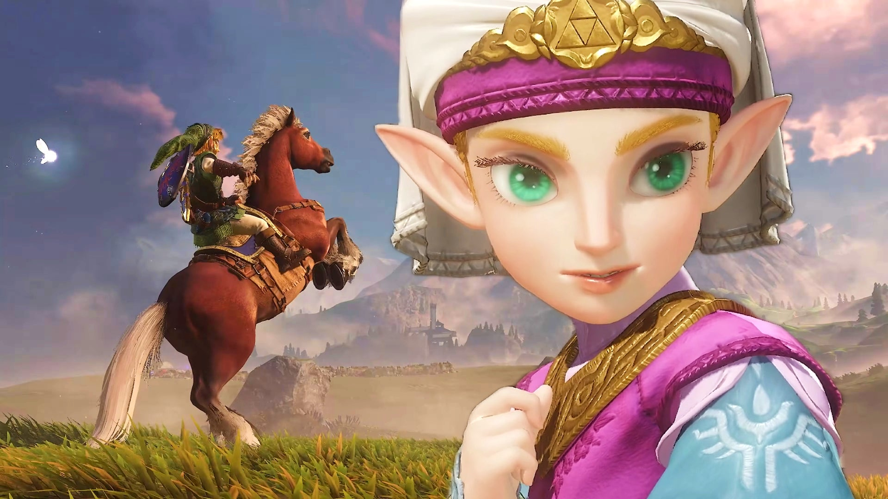
THE LEGEND OF ZELDA: OCARINA OF TIME
The full walkthrough for the Nintendo Switch 2 remake — every dungeon, every secret, and every last thing you need for 100%.
★ 100% GUIDE ★ KID FRIENDLY SWITCH 2 REMAKEHOW TO USE THIS GUIDE
Hi, hero! This guide will help you beat the whole game and find every secret. You play as Link, a boy who must save the land of Hyrule from the bad guy, Ganondorf.
How to read it: Play one part at a time. Do the steps in order. If you get stuck, look for the yellow KID TIP boxes. They hold the good tricks!
Tap the ☰ MENU button at the top left any time to jump to a new part. The menu slides out from the left. Tap ✕ to hide it.
Check off boxes as you find things. The guide will save your checks on your tablet, so you can close it and come back later.
CONTROLS & NEW STUFF
The remake looks brand new, but the game is the same great adventure from 1998. Here is what is new on Switch 2:
- Threads of Time: Press pause to see your next job. Stuck? Check the list!
- Sing with your voice: You can hum or play the ocarina songs with the mic (turn on Ocarina Mic Input in the settings first). Or just press the buttons like always.
- Jump and dash: Link can now jump and dash on his own. No more waiting for the game to do it for you.
- New camera: Move the right stick to look all around.
- Voices and music: The big story scenes now have real voices and a full band playing the music.
- Fairy's Thoughts: Navi stops at glowing spots to share hints — some lead to Heart Pieces!
- Business Scrub Seed: Plant it anywhere, even in a dungeon, and a shopkeeper scrub pops up to sell you things!
- Echo Gem: Win it with 20 Gold Skulltula tokens. It glows near spiders you have not found yet!
- Hall of Fallen Foes: As a grown-up, sleep on the glowing green bed by the lab at Lake Hylia to dream of it: statues of every monster you beat, and boss statues let you fight bosses again!
THE BUTTONS YOU NEED MOST
- Target (hold ZL): Lock on to a bad guy or a friend. This is the most key move in the game! With a shield, ZL also raises it to block.
- Sword (Y): Press Y to swing. Hold Y, then let go for a spin attack. Jump attack: hold ZL, press X to jump, then press Y in the air!
- Jump (X): Press X to jump anywhere. Link does not hop off ledges by himself any more — you jump!
- Dash (hold A): Hold A to run fast. A is also the talk/open/do-things button.
- Use item (ZR): Press ZR to use the item in your quick-select slot. Press L or R to pick a different item.
- Ocarina (D-pad Left): Take out the ocarina, then play songs with L, R, Y, X and A — or hum into the mic! Hold ZL to open your songbook.
- Camera (right stick): Move the right stick to look around. Press it to reset the view behind Link.
- Put away (B): Press B to put your sword away.
ALL 13 SONGS
You play songs on your ocarina. Each song does magic. Learn them all for 100%! Hold ZL to open your songbook and see the songs you know.

Link plays the ocarina — every song is magic!
- Zelda's Lullaby — Zelda teaches you at Hyrule Castle. Opens magic doors and changes the Water Temple water.
- Epona's Song — Malon teaches you at Lon Lon Ranch. Calls your horse, Epona.
- Saria's Song — Saria teaches you in the Lost Woods. Lets you talk to Saria any time.
- Sun's Song — Play it in the Royal Family's Tomb in Kakariko. Turns night to day and day to night.
- Song of Time — Zelda teaches you in the Temple of Time. Moves big blue blocks and opens the Door of Time.
- Song of Storms — The windmill man in Kakariko teaches you. Makes it rain. Play it in the windmill as a kid to drain the well!
- Minuet of Forest — Sheik teaches you. Warps you to the Forest Temple.
- Bolero of Fire — Sheik teaches you. Warps you to the Fire Temple.
- Serenade of Water — Sheik teaches you. Warps you to the Water Temple.
- Requiem of Spirit — Sheik teaches you. Warps you to the Spirit Temple.
- Nocturne of Shadow — Sheik teaches you. Warps you to the Shadow Temple.
- Prelude of Light — Sheik teaches you. Warps you to the Temple of Time.
- Scarecrow's Song — Make up your own 8-note tune! Teach it to the scarecrow at Lake Hylia as a kid, then play it again as a grown-up. It calls Pierre the scarecrow, who you can Hookshot to.
1. KOKIRI FOREST

Your home! A small village in the woods.
Goal: Get a sword and a shield, then go see the Great Deku Tree.
- Wake up! You had a strange dream about a castle and a girl on a horse. Navi the fairy flies in and wakes you up. Go out the door of your tree house.
- Climb down the ladder. Your friend Saria runs up to you. Talk to her with A. She is happy you have a fairy now! She tells you to see the Great Deku Tree.
- Before you run off, look around your home. Talk to all your friends. Each one has a tip for you!
- Go to the House of the Know-It-All Brothers (near your house). The three brothers teach you how the menu, the map, and your items work. It is worth a look!
- Visit the House of the Twins (south of the Deku Tree path). One twin sings a song about rupees. Green is worth 1. Blue is worth 5. Red is worth 20.
- Walk to the pond near the Deku Tree path. A grumpy Kokiri named Mido blocks the way. He will not let you pass without a sword AND a shield. Time to get your gear!
- First, the shield. Go to the Kokiri Shop (across from where Saria sits). The shop man sells the Deku Shield for 40 rupees. You do not have 40 yet, so go find rupees first.
- Look in the corner of the shop. There is a blue rupee worth 5 hiding there. Grab it!
- Go to the small waterfall by the pond. Swim under the water. There is another blue rupee down there. Hold A to dive and grab it.
- Walk west, across the stream. Jump over the rocks. There is a blue rupee on a rock. There is one more in the water below it.
- Go to Mido's House (northwest, past the stream). Inside are 4 chests. Open them all! They hold 3 blue rupees and 1 green rupee. That is 16 rupees in all.
- Still short? Cut grass and smash pots with your hands. Lift rocks too! Rupees pop out. One rock near your house hides 20 rupees.
- Go back to the Kokiri Shop and buy the Deku Shield for 40 rupees. The shop also sells Deku Sticks and Deku Nuts. Talk to the girl in the shop. She shows you how to hold ZL to raise your shield and block.
- Now the sword! Go to the Forest Training Center. It is the small hole in the hill near the pond, up the hill south of Mido's House. A Kokiri boy outside points the way.
- Go inside and talk to the Kokiri boy. He teaches you how to fight. Hold ZL to target a scarecrow dummy. Move side to side. Hop left and right. Try a backflip!
- When you finish the lesson, the boy tells you a secret. There is a sword hidden through a tunnel in the wall. Press A near the tunnel to crawl through.
- You are in the Kokiri Trial! A big rolling rock rolls around and around a tall platform. It goes counter-clockwise. Wait until it rolls past you, then run!
- Roll with A, then hold A to run fast. Hide in the small alcoves when the rock comes back around. They are safe spots. Take your time!
- Go to the south side. Climb the ladder up to the high platform. Jump across to the middle platform with X. Open the big chest. The Kokiri Sword is yours!
- Hop down and crawl back through the tunnel. The Kokiri boy is so happy! He teaches you one more move: the Jump Attack. Hold ZL to target. Press X to jump. Press Y in the air. It hits twice as hard as a normal swing!
- He also shows you the Spin Attack. Hold Y down, then let go. Link spins and hits all around him. Great when bad guys crowd you!
- Now use your sword to cut grass and bushes. Rupees and hearts pop out! You have a sword and a shield. Go back to Mido.
- Mido is shocked. He steps aside at last. Walk through the tunnel to the Great Deku Tree.
- Watch out! Angry plants called Deku Babas block the path. They pop up and bite. Hold ZL to target one. Slash it with Y. It drops a Deku Stick. You need 3 of them down to reach the tree.
- Walk up to the big tree with the face. That is the Great Deku Tree. He will give you your first big job. Your adventure starts now!
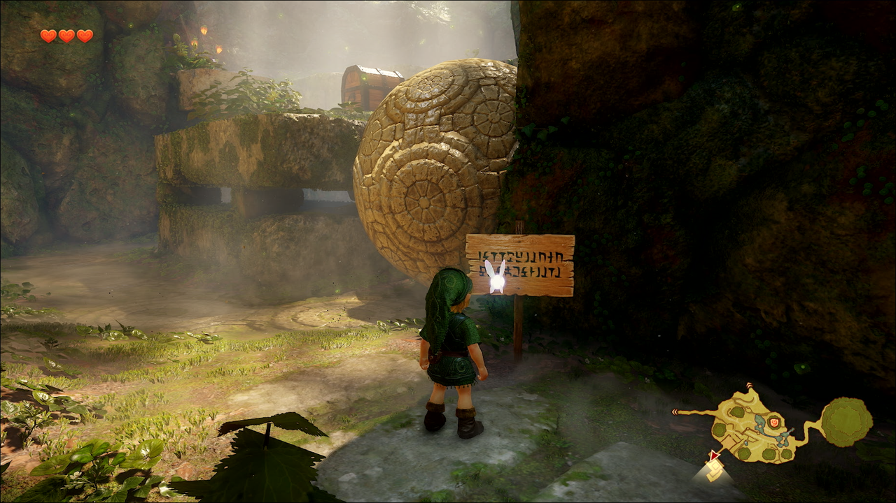
The Kokiri Sword is in the chest at the end of this tunnel.
AFTER THE DEKU TREE — SAY GOODBYE AND LEARN THE WOODS
After you beat the Deku Tree dungeon, come back here. Saria is waiting on the bridge out of the forest. She gives you the Fairy Ocarina. Now you can play songs!
- Go into the Lost Woods. The door is on a high ledge in Kokiri Forest. Inside is a maze of rooms linked by hollow logs. A wrong turn sends you back to the start!
- Follow the music. Saria's Song gets louder near the right path. The way to Saria is: right, left, right, left, straight, left, right.
- In the Sacred Forest Meadow, a Wolfos jumps at you. Dodge its jump, then hit it from behind. Mad Scrubs spit nuts at you. Block with your shield, then slash them.
- Climb the stairs. Saria is sitting on a stump at the top. Talk to her. She teaches you Saria's Song. Play it back when the notes show up. Now you can talk to Saria any time by playing her song!
- Go back to the Lost Woods door. This time, take the right tunnel. Drop down to the low stage. Two Skull Kids play tunes on their flutes. Stand on the empty stump and take out your ocarina.
- Copy the tune they play. Each round the tune gets longer. Keep copying until you win the last round. You get Heart Piece #15!
- Go back to the Lost Woods door one more time. This time, take the left tunnel. A lone Skull Kid sits on a stump. Stand on the stump across from him and play Saria's Song. He dances with joy and gives you Heart Piece #16!
• Skulltulas: 2 kid Skulltulas hide in Kokiri Forest. Check the trees at night! As a grown-up, come back with the Hookshot — one more hides at the top of the treehouse by the Twins' House.
• Heart Pieces #15 and #16: In the Lost Woods, from the two Skull Kid games above. Do them as soon as you learn Saria's Song!
• Magic Beans: Later, buy Magic Beans from the bean seller in Zora River. Plant them in soft dirt as a kid — you ride the big plants as a grown-up!
2. INSIDE THE DEKU TREE

The first dungeon! It is dark and full of spider webs.
Goal: Beat the big spider queen and get the green stone.
Good news: This dungeon has NO locked doors and NO Small Keys. You just climb up, then drop down to the basement.
THE FIRST ROOM — FIND THE MAP
- Go in the tree's big mouth. A giant spider web covers a hole in the middle of the floor. You need to go down there later.
- Watch out for Deku Babas. They are plants with big teeth. They lunge at you! Step back, then hit them with your sword.
- Hit a Deku Baba's head to get a Deku Nut. Hit its stem to get a Deku Stick. You will need both!
- Look for bright green vines on the wall. Jump on and climb up to the second floor.
- On the second floor, more vines go up. Big spiders called Skullwalltulas crawl on them. For now, just look at the big chest at the bottom of the vines.
- Open the chest. It holds the Dungeon Map! Now you can see the shape of the whole dungeon. The basement is very big.
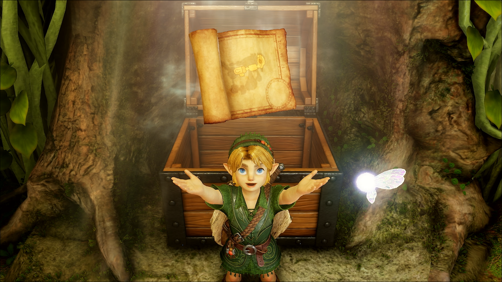
The Dungeon Map is in this chest.
FIND THE SLINGSHOT
- Go to the far side of the second floor. Go through the door. It shuts behind you!
- A Deku Scrub hides in the leaves. It pops up far away and spits nuts at you. Hold up your shield (hold ZL). The nut bounces back and hits the scrub!
- The scrub runs away. Chase it and hit it with your sword. It gives up and tells you a tip. The door opens.
- Cross the wooden bridge. It breaks under your feet! Run fast to the other side.
- Open the big chest. It holds the Fairy Slingshot! Now you can shoot Deku Seeds far away. Press ZR to shoot.
- Try it out! Shoot the Skullwalltula on the small vine wall next to the chest. Then climb up the vines.
- At the top is a hidden chest. It holds 3 Deku Nuts. Grab them!
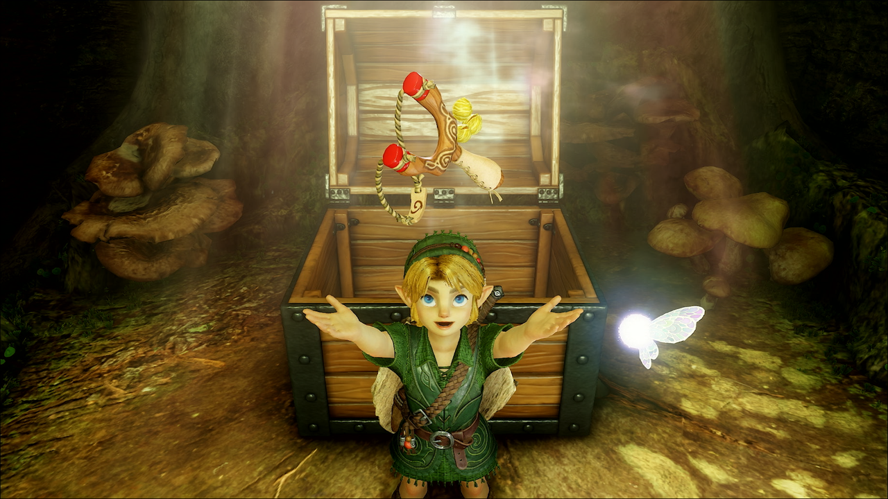
The Fairy Slingshot is in this chest.
FIND THE COMPASS
- The bridge is gone. Look above the door you came in. A big eye is stuck in the wall. Shoot it with your slingshot!
- The eye closes. A ladder drops down. Climb up and go back to the big middle room.
- Now shoot the three Skullwalltulas on the big vine wall. Then climb up. Tap X to climb fast!
- On the third floor, jump sideways along the vines. Drop down on a high walkway.
- Take the first door on the left. A big spider called a Skulltula blocks the door. Its hard shell stops your sword!
- Hit it and it spins. Back up! Wait for its soft belly to show. Then hit it fast. Two hits will do it. One jump attack works too.
- Inside, the floor sinks down in the middle. The chest is too high to reach. Step on the small stone button on the right side.
- Three platforms rise up in the middle. They sink back down fast! Jump across them right away to the far side.
- A Deku Baba jumps out when you get there. Beat it. Open the chest. It holds the Compass! Now your map shows chests, doors, and the boss.
- Look behind the Compass chest. Cut the grass. A small tunnel is hiding there! Crawl through it.
- Climb the vines on the other side. Open the chest. It holds 3 more Deku Nuts.
GOLD SKULLTULA 1 — IN THE COMPASS ROOM
- Go back across the sunken middle of the room. Step on the stone button again to raise the platforms.
- This time, stay on the LEFT side of the middle platform. A Skulltula blocks a high ledge. Beat it.
- Jump up to the ledge. A Gold Skulltula is on the wall! Hit it with your slingshot. Grab the gold token.
THE BIG DROP TO THE BASEMENT
- Go back to the top of the big middle room. Keep climbing up. One more Skulltula guards some hearts up high. Beat it if you need the hearts.
- Beat one more Skulltula on the narrow walkway. Now you are at the very top of the dungeon!
- Look down. It is a long way down. Jump right into the middle, onto the big web! The web breaks. You fall into the basement.
- You splash into a pool of water. Swim out. Turn around!
- A big vine wall goes back up to the first floor. That is your way back up if you need it.
- Look at the wall by the vines. A Gold Skulltula is hiding there! Shoot it with your slingshot. Climb up and grab the token. That is Gold Skulltula 2.
THE BIG BASEMENT ROOM — DEKU STICKS
- Drop down near the big pool of water. The water splits the room in two. You can not reach the back half yet.
- Look at the north side. A big grate is on the wall. A Gold Skulltula hides there! Shoot it with your slingshot. Jump to the grate and grab the token. That is Gold Skulltula 3.
- Near the grate, a web blocks a small chest. Step on the stone switch nearby. A torch lights up. The web burns away!
- Open the chest. It holds 3 Deku Sticks. Take one out and hold it.
- Stand next to the lit torch. Your stick catches fire! Run fast to the south end of the room.
- A web blocks a door there. Touch the web with your burning stick. It burns away! Press B to put the stick away. Go through the door.
THE SCRUB, THE EYE, AND THE WATER PUZZLE
- Another Deku Scrub is here. Bounce its nut back with your shield. Hit it with your sword. It tells you about three scrubs ahead.
- Look above the far door. Shoot the eye with your slingshot. The door opens.
- The next room has a big pool. A platform floats in the middle. A spinning bar with thorns hangs over it. You can not duck under it!
- Jump in the water. Look left, under a big grate. A switch is on the floor. Dive down and hit it!
- The water goes down a bit. The floating platform sinks lower. Now you can ride it under the thorns to the far side.
- A Skulltula guards a high ledge past this room. Beat it. The ledge is too high to climb!
- Look left. A big stone block is there. Stand next to it and hold A. Push it in front of the ledge. Now you can jump up!
THREE TORCHES AND THE BABY SPIDERS
- One torch is lit. Three more torches are not lit. Light a Deku Stick on the lit torch.
- Run fast and light all three torches before they go out! If one goes out, start over. When all four are lit, the door opens.
- Watch out! A Skulltula drops from above as you go in. Then three eggs fall from the ceiling. They hatch into Gohma Larva!
- The larva glow red, then lunge at you. Step to the side or block with your shield. Then hit them.
- Beat all the larva. Look at the top left corner of the room. A web is there. Light a Deku Stick and burn the web away.
- Beat the Deku Baba and the Skulltula guarding the path. Look high on the vines at the back of the room.
- A Gold Skulltula is up there! Shoot it with your slingshot. Climb up and grab the token. That is Gold Skulltula 4 — the last one in this dungeon!
- Go back to the larva room. Light a Deku Stick again. Burn the web on the east side. Crawl through the small passage. You are back in the first basement room.
DOWN TO THE BOSS
- A big web blocks a hole in the ground. A big stone block is next to it. Push the block forward. It drops down a ledge. That is a shortcut back up!
- A torch is lit in the corner. Light a Deku Stick on it. Jump back across the water to the block you pushed down.
- Jump up onto the ledge with your stick still burning. Roll into the web with the lit stick. The web burns away! Drop down one more floor.
- Three Deku Scrubs are waiting. Their nuts will NOT bounce back unless you hit them in the right order!
- Count the scrubs from left to right: 1, 2, 3. Bounce a nut back at the MIDDLE one first. Then the RIGHT one. Then the LEFT one. That is 2, 3, 1!
- When the last scrub tries to run away, hit it with your sword. It tells you how to beat the boss. Cut the bushes for seeds and nuts if you need them.
- Go through the door. The boss is waiting!
She is a giant spider with one big eye. Her only weak spot is that eye!
Step 1: Stay back. She covers her eye with her mouth parts. Wait.
Step 2: She lifts her big claws up. That means she is about to slam down! Jump back fast.
Step 3: Her claws get stuck in the dirt. Her eye turns green. Run in and slash her eye one time. Then back off!
Step 4: After a few hits, she climbs up the wall to the ceiling. Watch her eye. When it turns green, shoot it with your slingshot!
Step 5: If you are too slow, she drops three eggs. Shoot the eggs with your slingshot BEFORE they hatch into baby spiders!
Step 6: When your slingshot hits her eye, she falls down and gets dizzy. Run in and hit her lots of times. Jump attacks do big damage!
Step 7: She may go back to claw slams. Lure out the slam, slash the green eye, and do it all again. Hit her about 3 times and she is done!
Hearts are on the sides of the room if you get hurt. You did it, hero!
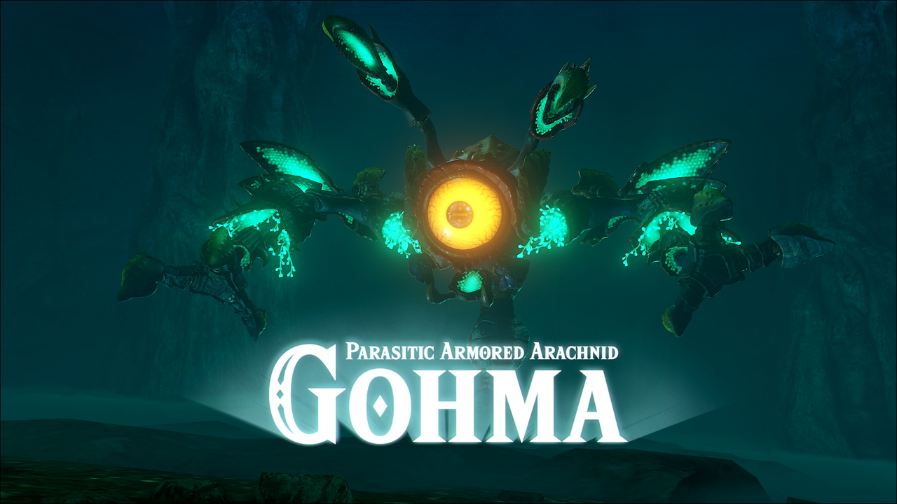
Queen Gohma! Wait for her eye to turn green.
• Skulltulas: 4 gold spiders hide inside the Deku Tree. All 4 can be found as a kid, on your first trip! See the steps above for the exact spots.
• Chests in this dungeon: Dungeon Map, Fairy Slingshot, 3 Deku Nuts (hidden chest by the Slingshot), Compass, 3 Deku Nuts (tunnel behind the Compass chest), 3 Deku Sticks (basement). That is all of them!
• After the boss, step into the blue light. Talk to the Great Deku Tree. He gives you the green stone. Then go find Saria — she gives you the Fairy Ocarina!
3. HYRULE CASTLE

The big white castle in the middle of Hyrule Field.
Goal: Meet Princess Zelda and learn her song.
- Leave the forest and walk up the wooded path. A big owl named Kaepora Gaebora swoops down to talk. He points to the road north, to Hyrule Castle. He also tells you about Threads of Time. Press pause any time to see your next job there!
- Cross Hyrule Field. It is big! Follow the dirt path north to the castle. Good news: on this first trip, time does not pass. It stays day. No scary skeletons yet!
- On the way, look for a lone tall thin tree on a hill to the west. It looks over Lon Lon Ranch. Roll into it! A Gold Skulltula falls out. Grab its token.
- Watch out for Peahats. They are big spinning leaf monsters. They float at you and spin. Hold your shield up to block. When one is stunned, slash it with your sword.
- Cross the drawbridge over the moat. Welcome to Hyrule Castle Town! Talk to everyone. The town folk have lots of tips.
- First, turn right just past the gate. Go into the small armory room. A bored guard stands there. Smash all the pots! You can find about 20 rupees. Roll into the big crates by the far guard. One hides a Gold Skulltula!
- Walk down to the market plaza with the big fountain. Two laughing men stand by the fountain. They talk about a man who got stuck in a drainpipe. Remember that! It matters soon.
- Go to the Bazaar (east side of the plaza). It sells lots of goods. It has a big Hylian Shield that fire can not burn. It costs a lot, so do not buy it yet. You can get one free later!
- Go to the Potion Shop next to the Bazaar. An old man outside warns you about a ruckus inside. Go in! The shop man begs for help. A golden bug got loose!
- He gives you your first Empty Bottle for free. Put it in your hand. Walk up to the golden beetle and press ZR to catch it. The shop man is so happy! He fills your bottle with a Red Potion. It heals all your hearts. You keep the bottle!
- Try the Shooting Gallery across the plaza. It costs 10 rupees. You get 15 seeds for your Slingshot. Shoot all 10 targets! Hit 8 or 9 and you get a free retry. Hit all 10 and you win the Bigger Deku-Seed Bag. Now you can carry 40 seeds!
- Look at the Happy Mask Shop past the Potion Shop. It is closed for now. It opens after you meet Zelda. The Bombchu Bowling Alley, the Bombchu Shop, and the Treasure Chest Shop are closed too. You will come back!
- Up the hill is the Temple of Time. It is a big church. You need all 3 magic stones to open it. Not yet! Keep going up to the castle.
- At the castle gate, the owl warns you again. The main gate is shut. The guard will shoo you away. You must sneak in!
- Look right of the road. There is a milk cart and a girl named Malon. Talk to her. Her dad Talon owns Lon Lon Ranch. He went to deliver milk and fell asleep somewhere. Help her find him!
- Malon gives you a Weird Egg. It will hatch soon into a Wake-Up Cucco. Keep it with you.
- Look past the milk cart. There is a small water drain. Past it are bright green vines. Climb them up to a high ledge. Up here is a strange stone that looks like an eye. Hit it and it tells you the time!
- Climb the next set of vines. Now you are on top of the gatehouse. Look down at the front garden. Soldiers stand guard. They do not move. If one sees you, he throws you out!
- Here is the safe way: jump over the iron fence. Hide behind the bushes before the closest guard spots you. Or walk up the main road, then lean into the purple flowers and veer left before the road turns. That dodges the guard too.
- Dart between the hedges. Take the middle path. Then go around the outside to the west wall. Before you climb, look right. There is a small walled spot with barrels and sacks and one tall thin tree. Roll into the tree! A Gold Skulltula falls out.
- Climb the vines on the west wall. You are past the big locked gate! Walk past a Sheikah Stone to the castle moat. Two guards stand outside. Jump into the moat and swim to the tree on the far side. You are past them!
- Just up the path, you find Talon asleep. By now your Weird Egg has hatched into the Wake-Up Cucco. Put it in your hand and press ZR next to Talon. He jolts awake! He runs off to the ranch, leaving his big milk crates behind.
- Remember the drainpipe the laughing men talked about? It is right where Talon was sleeping. But the jump is too high. Use the crates!
- Pull the two milk crates over to where Talon slept. Push them one at a time off the ledge into the dip below. The second crate lands on top of the first. Now you can jump up and crawl into the drainpipe!
- You are in the castle courtyard. More guards! If one catches you here, you pop back out at the drain. You do not have to redo the whole castle. Phew!
- Climb the ladder for a good look. Area 1: one guard watches the path under a big gazebo. Crates are stacked on one side of the gazebo. Climb them. Cross the beam over the guard's head to the other side.
- Go up the stairs. Area 2: two big hedges, two guards. They walk left and right between the hedges. They never walk all the way to the right edge. Wait until the close guard turns his back. Run to the right side of the hedge and hide in it.
- Wait until the second guard starts walking back to the left. Then dart to the second hedge. Then run on to the last area. Careful: if you get too close, a guard may stop and look your way. That messes up their walk. Wait and try again.
- Area 3: a cellar with two big shelves. One guard walks a square route around the shelves. The other guard stands between the shelves and looks left, then right, then left again.
- Wait at the top of the stairs until the walking guard passes by and turns away. Run down fast. Go up the left side. Wait for the middle guard to look right. Then slip past before the walking guard comes around the corner. Or go slow: follow the walking guard from behind, a safe distance back.
- Run out the far door. Turn left. You are in the garden! Across the garden, a girl peeks through a window. Walk up to her. She is Princess Zelda!
- Zelda tells you her dream. She dreamed of a dark man and a hero with a fairy. That hero is you! She tells you about the 3 magic stones, the Sacred Realm, and the Triforce. The bad man is Ganondorf, King of the Gerudo.
- Zelda gives you Zelda's Letter. Show it to people to prove you work for the princess! Then she calls her guard, Impa.
- Talk to Impa before you leave. She teaches you Zelda's Lullaby. Play it back when the notes show up. This song opens magic doors all over the game. It also wakes Great Fairies!
- Peek in the other courtyard windows before you go. In the old game, Mario characters hid there. In the remake, look for a big tapestry on the far wall. It shows the Threads of Time!
- Impa points you to Death Mountain. The Gorons there guard the Stone of Fire. Kakariko Village is at the foot of the mountain. That is your next stop!
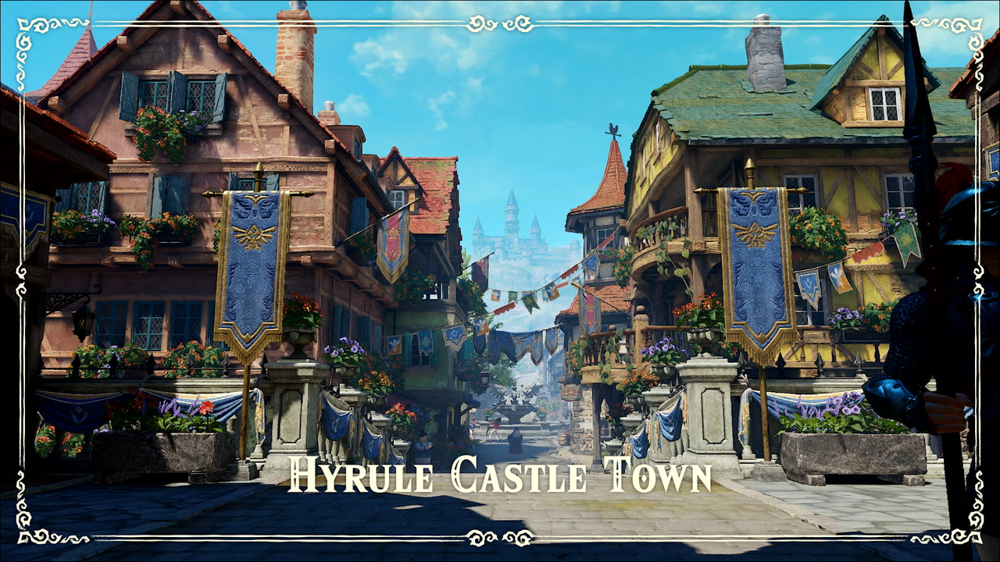
Castle Town market! Shops and games are all around.
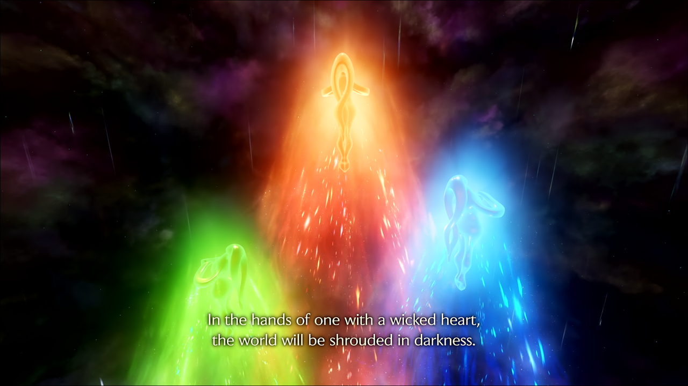
Princess Zelda! She tells you about Ganondorf.
• Heart Piece #4: At night, find the lost white dog Richard in the back alley past the Bombchu Shop, near the Treasure Chest Shop. Lead him to the lady calling his name. Watch out — other white dogs are the wrong dog!
• Heart Piece #5: Bombchu Bowling — 10 rupees a game. Win 3 times in a row! 1st win = Bombchus, 2nd win = Biggest Bomb Bag, 3rd win = Heart Piece. It opens after you meet Zelda.
• Heart Piece #6: Treasure Box Shop — needs the Lens of Truth, so come back later as a grown-up. It costs 10 rupees. Use the Lens to find the key chest in each of 5 rooms.
• Bottle #1: The Potion Shop gives you a bottle the first time you walk into town! Catch the golden bug to keep it.
• Masks: The Happy Mask Shop opens after you meet Zelda. Borrow the Keaton Mask (worth 10 rupees) and sell it to the guard at the Death Mountain gate in Kakariko for 15 rupees!
• Skulltulas: 1 in Castle Town at night (in the armory crates by the gate). 2 at Hyrule Castle (the tall tree by the moat, and the tree in the walled spot by the west wall vines).
4. KAKARIKO VILLAGE

A quiet village with a windmill, a graveyard, and lots of secrets.
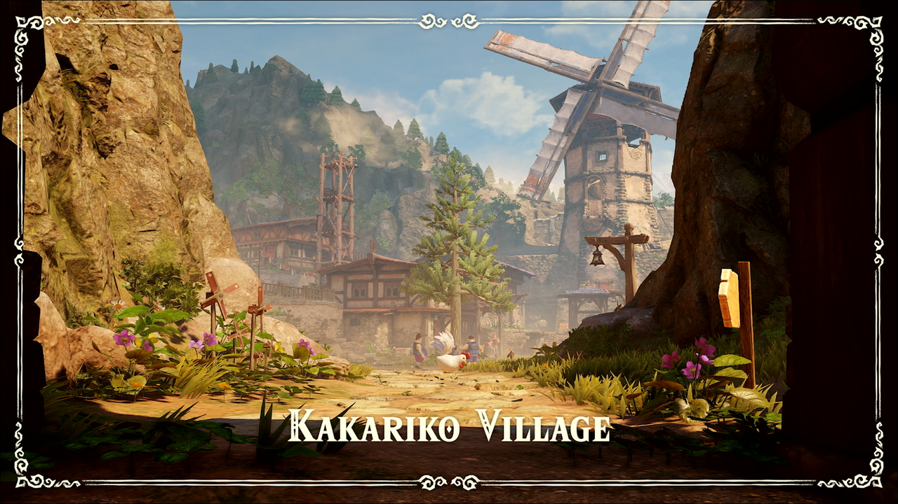
Kakariko Village. Lots of secrets hide here!
Goal: Meet the people, get new gear, and get ready for Death Mountain.
FIRST STOP: LON LON RANCH
On your way to Kakariko, stop at Lon Lon Ranch. It is right in the middle of Hyrule Field. You must do this as a kid!
- Walk into the big horse field. Malon stands in the middle, singing to a small horse. The horse runs away when you get close. Talk to Malon.
- Malon asks if you have an instrument. Take out your Fairy Ocarina with D-pad Left. Play her tune back when the notes show up. You learn Epona's Song! The little horse, Epona, runs right to you.
- Talk to Malon again. She tells you to visit her dad inside the main house. Go in. Talon is asleep in a pile of Cuccos! Talk to him to wake him up.
- Talon wants to play a game. Find his 3 Super Cuccos hiding among the normal Cuccos. You have 30 seconds! Trick: throw all the normal Cuccos behind Talon's desk first. Then only the Super Cuccos are left out in the open. Super Cuccos stand stiff and tall, with their wings down and their heads held high.
- Win and you get a bottle of Lon Lon Milk — and you keep the bottle! That is Bottle #3. Drink the milk (2 sips) to keep the empty bottle.
- Go to the old stone tower in the south-west corner of the ranch. Inside are 9 milk crates. Pull the closest crates out of the middle row. Then pull back the crate in the middle against the wall. A small gap opens. Crawl through it to find Heart Piece #3!
- Behind the main house, on the north-east side, roll into the tall thin tree by the wooden tower. A Gold Skulltula falls out!
KAKARIKO VILLAGE
- Go east from Hyrule Field to Kakariko Village. Walk up the stone stairs. The guard at the door points out the big spots in town. Talk to everyone!
- First, the Cucco roundup! Find Anju, the Cucco Lady, by the big house that used to be Impa's. All 7 of her Cuccos ran away. You must catch them all and toss them back into her pen. Here is where they hide:
- Cucco 1: In the building site near Anju. It wanders around the scaffolding in the middle.
- Cucco 2: By the village gate where you came in.
- Cucco 3: In a wooden crate near the middle of town, by the house where the lady cooks food. Smash the crate!
- Cucco 4: On top of a pile of bricks. Carry Cucco 3 up to Impa's house. Glide down with it onto the bricks. Grab Cucco 4!
- Cucco 5: On the path up to Death Mountain Trail. Go north, up the stairs, past the tall wooden tower.
- Cuccos 6 and 7: Carry a Cucco up to the windmill on the west side of town. Glide over the gap in the fence. Throw your Cucco back over the fence so it does not get stuck! Cucco 6 is below the closed Potion House. Cucco 7 is on the hilltop behind the windmill. Climb the ladder to reach it.
- While you are on that hilltop, jump onto the roof of Granny's Potion Shop. Walk to the far side, near the wooden tower. A man lounges on the lower blue roof. He is so happy to see you! He gives you Heart Piece #7.
- When all 7 Cuccos are back in the pen, Anju gives you an Empty Bottle. That is Bottle #2!
- Climb the tall wooden tower in the middle of town. Talk to the man at the top. He tells you about the well and the windmill. The view is great too!
- Go to the windmill on the west side. Inside, the windmill man hums a strange tune. He is looking for the right song. You do not know it yet. Remember him! You will come back as a grown-up.
- Visit the House of Skulltula on the north side of town, below the windmill. It is covered in cobwebs. Inside lives a cursed family, half spider! Bring them Gold Skulltula tokens. Every 10 tokens earns a prize. 10 tokens = Adult's Wallet (holds 500 rupees)! 20 tokens = Echo Gem. It glows near spiders you missed!
- At night, look for Skulltulas in town. One hides in a web just left of the House of Skulltula door. One hides high on the red brick wall of the building under construction — climb the scaffolding. One hides on the ladder of the tall wooden tower. One hides on the back wall of the little boy's house, south of the tower. Roll into the narrow tree by the big central tree too!
- Go to the shops. The Bazaar sells a Hylian Shield. It is strong and fire can not burn it. Do not buy it yet! You can get one free in the graveyard. The Potion Shop is closed for now. Granny is away.
- Now the graveyard, behind the village. By day, a little boy wanders the graves. He pretends to be Dampé the gravedigger. If you pull a grave stone, he says he will tattle. Come back at night!
- At night, Dampé the gravedigger walks the grounds. Talk to him to play the Heart-Pounding Grave-Digging Tour. It costs 10 rupees per dig. He digs where you point. Sometimes you get rupees. Sometimes nothing. Keep digging until he says something heavy is down there. Pay 5 more rupees. He digs up Heart Piece #11!
- Pull the grave stones from the back. Some are empty. Some hide a green rupee. Some hide a Poe ghost! Poes turn invisible when you target them with ZL. Run away until they show up again. Then run in fast and slash them. You can catch a Poe in a bottle, but do not drink it. It hurts you!
- At the back of the graveyard stand 3 big monuments. The middle one has the royal crest. The two harp-shaped ones hide the Composer Brothers, Sharp and Flat. Talk to them and they attack like Poes! Beat them both. They tell you their sad tale. They hid a song in the Royal Family's Tomb.
- Stand on the royal crest on the floor and play Zelda's Lullaby. The tomb opens! Go in.
- Room 1: bats called Keese hide in the walls. They dive at you. Shoot them with your Slingshot or block with your shield, then slash.
- Room 2: green bubbling goo hurts you if you step in it. Redeads stalk the room. If one screams, you freeze! Then it grabs you and drains your hearts. Mash the buttons to break free. Sneak along the left side, then dart down the middle. Run out the far door fast!
- Room 3: read the poem on the stone plaque. Then play the song on the floor. You learn the Sun's Song! It turns night to day and day to night. It also puts Redeads to sleep!
- Look at the walls on your way out. There is a blue mark — Fairy's Writing. Play the Sun's Song there. A fairy heals you all the way!
- Go back to Room 2. Play the Sun's Song near the Redeads. They fall asleep! Now you can beat them safely.
- More grave secrets! From the graveyard door, go up the first small steps. Find the grave with flowers and butterflies on it, second from the top in the first row. Pull it back. There is a tomb below, but the door inside is sealed. You need bombs to open it. Come back later!
- Go up to the row of graves just before the steps to the royal tomb. Pull back the second grave on the right side of the path. Drop in. A Redead guards the room. Play the Sun's Song to freeze it, beat it, and open the chest. A free Hylian Shield! No rupees needed!
- Pull back the grave at the far south edge of that same row, below the royal tomb. Drop in. No bad guys here. Open the big chest for Heart Piece #12!
- Before you leave the graveyard, find the soft dirt patch up the steps on the left, past a small tree. Drop a bug from a bottle on it. A Gold Skulltula pops out! Bugs hide under stones at the graveyard door.
- Plant a Magic Bean NOW in that same soft dirt by the graveyard wall. As a grown-up you ride the big plant over the wall to Heart Piece #13!
- Now go up the trail to Death Mountain. The guard at the gate says the path is blocked. Falling rocks! Show him Zelda's Letter. He opens the gate for you.
- The guard also warns you about the rocks. He says to buy a Hylian Shield at the Bazaar in Castle Town. He even puts in a good word so the price drops from 80 rupees to 60 rupees! You already got one free in the graveyard, so you can skip it. He also asks you to check out the new Happy Mask Shop. Borrow the Keaton Mask there (worth 10 rupees) and sell it to this guard for 15 rupees!
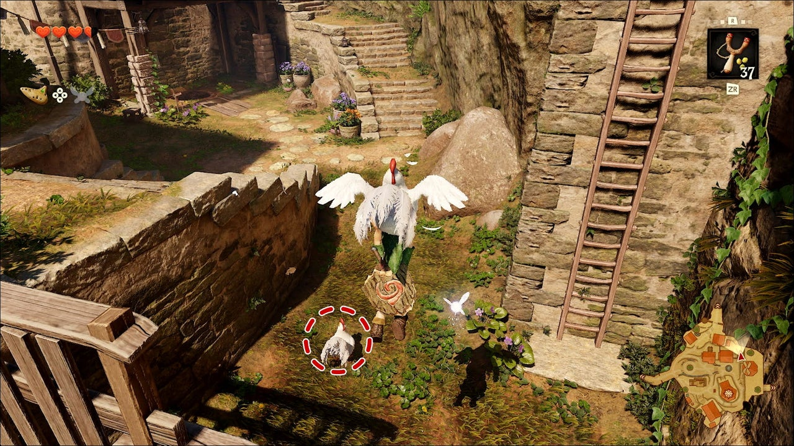
The windmill man hums a strange tune. Remember him!
• Heart Pieces #7 and #8: Rooftops — glide with Cuccos. #7 is the man on the Potion Shop roof. #8 comes from the owl's ride on Death Mountain — he drops you on the blue roofs!
• Heart Pieces #11 and #12: In the graveyard — Dampé's digging tour and the tomb chest.
• Plant a Magic Bean NOW in the soft dirt by the graveyard wall — as a grown-up you ride it to Heart Piece #13!
• Bottle #2: Catch Anju's 7 runaway Cuccos and put them back in the pen.
• Skulltulas: 6 in the village, 2 in the graveyard. (The 3 in the Bottom of the Well need the Song of Storms — learn it as a grown-up, then come back as a kid!)
5. DODONGO'S CAVERN

A hot, rocky cave full of bombs and lava.
Goal: Beat King Dodongo and get the red stone.
Good news: This dungeon has NO locked doors and NO Small Keys. You open the way with bombs, switches, and one big pushy block puzzle.
New in the remake: The door is shut! You must open it with a Bomb Flower first. And the big first room has a Beamos — a stone eye that shoots a laser. The 1998 game had neither of these!
OPEN THE DOOR — THE BOMB FLOWER PUZZLE
- Climb Death Mountain to Goron City. Talk to Darunia, the Goron boss. He is sad. Play Saria's Song for him — it makes him dance!
- Darunia opens the way. Go to the mouth of Dodongo's Cavern. A big boulder blocks the door!
- Pick up the Bomb Flower next to the boulder. Hold A to pick it up. Throw it at the boulder. BOOM! The door is open.
- Go in. A cracked wall is at the far end. A Bomb Flower is just to the left. Pick it up and throw it at the wall. BOOM! Now you are in the true first room.
- A giant skull of a dead Dodongo hangs over the room. Read the plaque in front of it: "May this colossal and long-dead Dodongo serve as a guide to the hidden path." Remember that!
THE BIG HALL — FIND THE MAP
- Jump down to a small platform in the lava. Do not fall in! The lava is shallow, but it burns you the whole time you are in it.
- Ride the platform up. Jump to the big middle platform. A Beamos is here! It is a stone statue with a spinning eye. If it sees you, it shoots a laser!
- Stay out of its eye line for now. Jump to the rising platform on the left. Jump over to the west side of the room.
- Another Beamos is here. But a Bomb Flower grows just to the north. Pick it up and throw it at the Beamos. BOOM!
- Watch out! The Beamos head falls off and blows up too. Stay back.
- The middle door here is shut. Two small alcoves are covered in broken rock. Take another Bomb Flower. Bomb the SOUTH alcove first. A chest is inside. It holds a Blue Rupee (5 rupees).
- Now bomb the NORTH alcove. A bigger chest is inside. It holds the Dungeon Map!
- Wait for the small lava platform to rise again. Grab a Bomb Flower. Jump back to the big middle platform.
- Throw your Bomb Flower at the Beamos there. Then jump over to the far east side of the room.
- Another Beamos and another Bomb Flower are here. Throw the flower at the Beamos. Then bomb the NORTH cracked wall. A Sheikah Stone is behind it. You can not do much with it yet.
- Now bomb the SOUTH cracked wall. A new doorway is behind it! Go through.
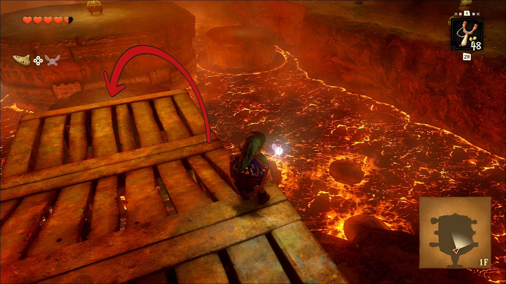
The Dungeon Map is in the north alcove chest.
THE EAST HALLWAY — GOLD SKULLTULA 1
- Small Baby Dodongos jump out at you! They run at you and lunge. When you hit one, it blows up after a short wait. Keep your distance!
- Go up the hall and beat another wave of Baby Dodongos. Look up high. A tall ledge is out of reach. You can NOT get up there yet. Come back as a grown-up! (See Gold Skulltula 5 below.)
- Near the end of the hall is a low ledge. Three more Baby Dodongos pop out. Before you hit them, look right. A big cracked wall is there.
- Lure a Baby Dodongo close to the cracked wall. Hit it. It blows up like a bomb and breaks the wall!
- Behind the wall is a Gold Skulltula! Beat it and grab the gold token. That is Gold Skulltula 1. Watch out for the Keese bats hiding in the walls too.
- Climb up the ledge at the end of the hall. A sealed door is there. A pressure plate is on the floor. Two big statues stand nearby.
- Step on the plate. The door opens — but it shuts when you step off! Grab a statue and pull it onto the plate. The statue holds the plate down. Go through the door.
THE LIZALFOS FIGHT
- Go through a short hall. Keese bats hide in the walls. Watch out!
- You walk into a big arena. The door locks. Two Lizalfos jump out! They are fast lizard fighters.
- Only one fights you at a time. Wait on a round platform over the lava. The Lizalfos runs around, looking for a way in.
- Hold up your shield (hold ZL) and wait. It will get bold and try to hit you. When it misses and wobbles, hit it fast!
- Watch out for its big jump! It leaps over your head and hits you from behind. Keep your shield up. Your shield blocks from all sides if you stand still.
- After a few hits, one Lizalfos runs away to another platform. Do NOT chase it! Fight the other one first. Then go after the runner.
- Beat them both. A chest pops up. It holds a Red Rupee (20 rupees)!
- Look for a thin ledge on the east side. It goes behind a lava fall. Pots are back there. Break them for Blue Rupees and a Fairy if you need hearts!
- Go out the door to the northwest. A sealed door is there. A Bomb Flower is to the left. Use it to blow a hole in the door.
- A Business Scrub is on the other side! Bounce its nut back with your shield. Then it will sell you hearts and Deku Sticks. Buy some Deku Sticks — you need them next!
THE BIG DODONGOS AND THE TORCH PUZZLE
- Go around the corner. A long room is full of big grown-up Dodongos! Their fronts are hard as rock. Your sword can not hurt them from the front.
- They breathe fire if you stand still. Keep moving side to side! Wait for one to take a big deep breath.
- Run around behind it fast. Hit its tail! The tail has no armor. Then jump back fast — it spins around to face you.
- Do it again and again until it falls down. Then it blows up! Beat all three Dodongos.
- Now look around. One torch is lit. Three torches are not lit. Light a Deku Stick on the lit torch.
- Run fast and light all three torches before they go out! If you are too slow, they go out and you start over. When all four are lit, a door opens.
- Go through the door. You are back in the big first hall! Step on the switch here. It opens the door on the far side.
FIND THE COMPASS
- Go into the newly opened room on the west side. A big stairway goes up to the north. A cracked wall is to the south.
- Go south first. Blow open the cracked wall with a Bomb Flower. Inside is a room with three big stone statues.
- The statue at the far end comes to life! It is an Armos. Your sword can not hurt it — it is made of rock.
- A Bomb Flower grows near the door. Lure the Armos close to it. When the flower blows up, the Armos takes a hit!
- The Armos goes wild after it gets hurt. Run away! It blows up on its own. Then climb the ladder at the far end.
- Open the chest at the top. It holds the Compass! Now your map shows chests, doors, and the boss.
THE BOMB STAIRS — GOLD SKULLTULA 2
- Go back to the big stairway room. Look up. A huge stairway floats high above you. Bomb Flowers grow all around its base. One small gap is at the front.
- Find a Bomb Flower away from the rest. Pick it up. Put it in the small gap.
- BOOM! One big chain blast sets off all the flowers. The stairway crumbles and sinks down to the ground. Now you can climb it!
- Climb the stairs. A ladder is at the top. It goes up to a cracked wall. You have no Bomb Flowers up here. Leave it for later!
- Go up to the higher level on the south side. Before you go out the door, TURN AROUND.
- A big mesh wall is there. A Gold Skulltula hangs on it, next to some Skullwalltulas. Shoot them all with your slingshot.
- Climb up the mesh wall. Grab the gold token. That is Gold Skulltula 2.
THE ARMOS ROOM AND THE SPIKE TRAPS
- Go into the south room on the second floor. A high platform is in the middle. Statues stand all around it. Fire Keese fly above!
- Put on your Hylian Shield if you have one. Fire Keese can burn your wooden Deku Shield away! Shoot the Fire Keese with your slingshot.
- Drop down to the middle platform. Each statue is really an Armos in hiding — all but the one on the south side!
- Throw Bomb Flowers at the Armos BEFORE they wake up. That beats them fast. Then pull the south statue out of the way.
- Climb the ladder behind it. Step on the switch at the top. The east door opens!
- Cross the upper level of the big hall. Jump across the hole in the bridge to the far side.
- A big room is full of high platforms. Spiky traps roll around below. They can not be broken! Wait, then run past them.
- On the far east side, a cracked wall sits on a high ledge. Part of a ladder is below it. Look right. A square stone is just below the ladder. Pull it down.
- Climb the ladder. Jump onto the high platforms. A Bomb Flower and a chest are up there. Open the chest. It holds Deku Seeds!
- Grab the Bomb Flower. Throw it up at the cracked wall on the high ledge. BOOM! Go through the hole.
THE FIRE HALLS — FIND THE BOMB BAG
- A platform in the hall is on fire! An eye switch is on the far wall. Shoot it with your slingshot. The fire goes out. Cross fast!
- Baby Dodongos jump out of the lava in the next hall. Beat them.
- Two more Lizalfos are in the next room! Use the same trick: shield up, wait for them to miss, then hit them back. Only one fights at a time.
- Beat them both. The door back to the west opens. A small chest pops up on a narrow path to the north, high over the first Lizalfos arena.
- Walk the narrow path with care. Open the chest. It holds a Business Scrub Seed! Plant it almost anywhere to make a shopkeeper scrub pop up and sell you things.
- Go back the way you came. Another hall has a platform on fire. Shoot the eye to put the fire out.
- A second platform is still on fire! Jump across the first one fast. Turn left. Shoot the second eye through a small window. Jump across before the fire comes back!
- You are back in the spike trap room. A big chest is in front of you. Open it. It holds the Bomb Bag — with bombs inside!
- Now you can carry bombs and throw them anywhere. No more hunting for Bomb Flowers!
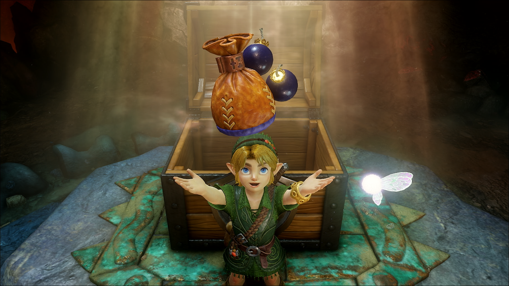
The Bomb Bag is in this big chest.
THE GIANT SKULL'S SECRET
- Try your new bombs! Put one at the cracked wall behind the Bomb Bag chest. BOOM! A path opens back to the big first hall.
- Step on the switch straight ahead. A rising platform below now goes all the way up to the second floor. It is an elevator!
- Go to the far northeast corner by the giant skull. Bomb the cracked wall there.
- Two Dodongos walk around a big rock inside. Beat them with the tail trick. Look on the other side of the rock.
- A Gold Skulltula hides there! Beat it and grab the token. That is Gold Skulltula 3. (A Dodongo blowing up near it can kill it for you!)
- Walk across the bridge over the giant skull. Read the plaque: "When this long-dead Dodongo sees red, a new path will be opened."
- The bridge has two tiny broken spots. They are right over the skull's eye holes! Stand over each gap. Drop a bomb into each eye.
- The skull's eyes glow red! Its jaw drops down. A new path to the boss is open.
- Before you go, bomb the far wall on the other side of the bridge. A chest is behind it. It holds a Blue Rupee.
- One more thing! Take the lift down to the first floor. Go back to the west room with the big stairs. Climb up and go up the ladder to the cracked wall at the top.
- Now you have bombs! Blow it open. A chest is on the other side. It holds a second Business Scrub Seed.
THE BLOCK ROOMS — GOLD SKULLTULA 4
- Go through the skull's open mouth. A slope goes down. A hole is in the middle of the floor. A stone block sits on a high ledge you can not reach.
- Watch out for Fire Keese flying above. Keep going north.
- The path turns into a room full of narrow walkways and high platforms. Big stone blocks are here. One block stops you at the far end.
- Pull the block on the high platform so it sits just under the raised one. Climb up on it. Then push the raised block down to the floor.
- Push the fallen block all the way to the far wall. A ledge with a big cracked wall is there.
- Put a bomb ON TOP of the stone block. It blows up the cracked wall! Climb up into the small room.
- Baby Dodongos jump out at you! Near the back, a Gold Skulltula hides behind an Armos statue. Throw a bomb at them both! Or lure a Baby Dodongo close so it blows up. Grab the token. That is Gold Skulltula 4.
- Go back down. Push the stone block so it sits under the block by the south exit. Climb up over both blocks.
- Go down the path. One more stone block sits over the room you were just in. Push it down into the hole in the floor. CLICK! The door to the boss room unlocks.
- Go through the door. Bomb the cracked floor. Drop down the hole into the boss's lair!
He is a giant lizard with rock-hard skin. Your sword can not hurt him from the front! His mouth is the weak spot.
Step 1: Wait for him to open his big mouth. He is about to shoot a giant fireball! Throw a bomb into his open mouth fast. (Bomb Flowers grow on the four paths around the lava if you need one.)
Step 2: BOOM! The bomb blows up inside his mouth. He is stunned! His tongue hangs out.
Step 3: Run in and hit his tongue with your sword. Jump attacks do big damage! Hit him lots of times before he wakes up.
Step 4: He gets mad and rolls into a ball. He rolls down the narrow paths at you! You can not step around him — the lava is too close.
Step 5: Run back to a corner of the room. Each corner has extra space. Let him slam into the wall and turn down the next path. Wait on the inside of the corner.
Step 6: When he stops rolling, Baby Dodongos pop out! Slice them fast. Then get a bomb ready.
Step 7: Do it all again: bomb in the mouth, hit the tongue, dodge the roll. Do it 3 times. On the third time, he rolls into the lava and is done!
You get a Heart Container! Step into the blue light when you are ready.
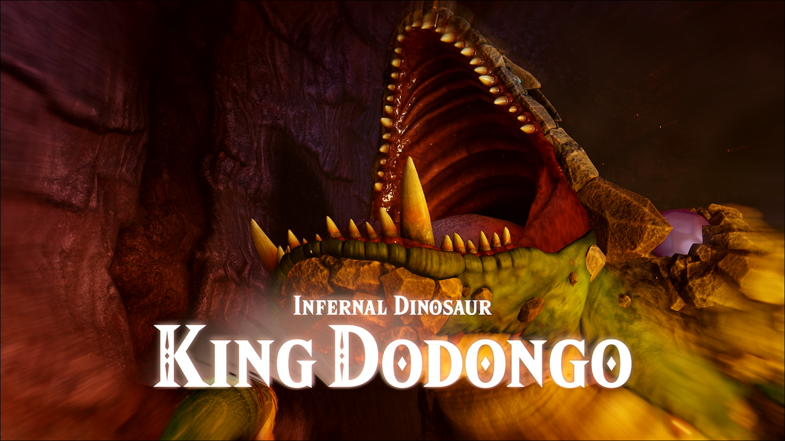
King Dodongo! Throw a bomb into his big mouth.
• Skulltulas: 5 gold spiders hide in Dodongo's Cavern. Get 4 as a kid on your first trip. The 5th needs a grown-up — see below!
• Gold Skulltula 5 — come back as a grown-up! Go back to the east hallway (the one with the Baby Dodongos and the cracked wall). Look up at the high ledge you could not reach as a kid. Play the Scarecrow's Song. Pierre the scarecrow pops up! Hookshot to him and climb up to the ledge. The last Gold Skulltula is up there. (You must teach the Scarecrow's Song to the scarecrow at Lake Hylia as a kid first!)
• Chests in this dungeon: Blue Rupee (west alcove), Dungeon Map (west alcove), Red Rupee (Lizalfos arena), Deku Seeds (spike trap room), Business Scrub Seed (after the second Lizalfos fight), Bomb Bag, Blue Rupee (past the skull bridge), Business Scrub Seed #2 (top of the west stairs). That is all of them!
• Heart Piece #18: In Goron City, throw a bomb into the giant spinning pot. Land on the happy face to win a Heart Piece!
• Plant Magic Beans NOW: one at the top of Death Mountain Trail (#17) and one on the crater floor (#21). You ride them as a grown-up.
• Heart Pieces #19 and #20: In the crater — climb down the net, and buy one from the Business Scrub for 100 rupees.
• After the boss, Darunia gives you the red stone and makes you his Sworn Brother! Then go see the Great Fairy on top of Death Mountain — she gives you Din's Fire!
6. JABU-JABU'S BELLY

Yes — you go INSIDE a giant fish!
Goal: Save Princess Ruto and get the blue stone.
Good news: This dungeon has NO locked doors and NO Small Keys. You open the way with switches, the Boomerang, and Princess Ruto herself!
New in the remake: Ruto stays where you put her! In the 1998 game, she ran back to the start room if you walked too far away. Now she waits right where you left her — even if you leave the dungeon!
BEFORE YOU GO IN
- Go to Zora's Domain (up the river). At the top of the waterfall, play the Diving Game: dive down and grab all the rupees the man throws in. Win and you get the Silver Scale. Now you can dive deep!
- Swim through the dark tunnel at the bottom of Zora's Domain. It comes out in Lake Hylia. Dive to the lake floor and pick up the bottle with Ruto's Letter in it.
- Take the letter to King Zora in Zora's Domain. He will move and let you feed a fish to the big fish, Jabu-Jabu! Jabu-Jabu sucks you in. Here we go!
THE MOUTH — OPEN THE FIRST DOOR
- You are inside the fish! The big jaws behind you are the way out. You can leave and come back any time. The mouth stays open.
- Two Octoroks sit in the pools on the fish's tongue. They spit rocks at you! Hit their rocks back at them with your sword or shield.
- Look up. A strange glowing thing hangs from the ceiling, like a big uvula. Shoot it with your slingshot!
- The far door unseals. Go through!
- The next room has a glowing platform and two Biri. They are jellyfish that float around. They are electric! Do NOT touch them — not even with your sword!
- Your slingshot seeds bounce off them. But a Deku Nut stuns them! Throw a Deku Nut. The Biri falls down and loses its zap. Then slash it!
- A Deku Stick works too. Wood does not carry the shock, so you can hit them with a stick and not get hurt.
FIND PRINCESS RUTO
- In the next room, you find Princess Ruto! She is mad at you. She says she lost something and runs off — then falls through a hole in the floor!
- Follow her down to floor B1. Talk to her. She lets you help — but only if you carry her!
- Press A near her to pick her up. Press A again to put her down. You will carry her through most of the dungeon.
- Half of this room is blocked off. A door to the southwest has big vines by it. You can not do anything there yet. You need the Boomerang first. Come back later!
- Carry Ruto through the hallway to the east. Floating bubbles called Shabom bounce at you. They pop and hurt you when they hit!
- Your slingshot can not hurt them. But Ruto can! Throw Ruto at the bubbles. She pops them and takes no damage. Sorry, Ruto!
THE WATER ROOM — FIND THE MAP
- The next big room has a sunken pit in the middle and high ledges all around. You can not reach the ledges yet.
- Put Ruto down for a second. Walk close to the pit. A Stinger jumps out of the water! It floats up, then dives at you.
- Shoot it with your slingshot. Or block its dive with your shield. Beat all the Stingers.
- Step on the glowing switch in the middle of the room. The water level goes UP!
- Now you can swim to a chest on the east side. Open it. It holds the Dungeon Map!
- Look at the west side. Vines go up to a high ledge. Climb up. Pots are up there — and a Gold Skulltula!
- Hit it and grab the gold token. That is Gold Skulltula 1.
- Now you must get Ruto across the water. Go back and step on the other glowing switch. The water goes DOWN.
- Pick up Ruto. Jump into the pit. Stand on a raised platform. Throw Ruto to the other side!
- Step on the switch again. The water goes UP. Swim after her. Pick her up and go!
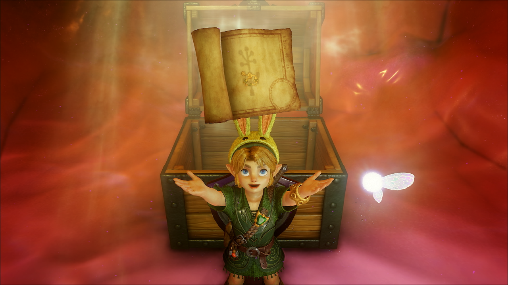
The Dungeon Map is in this chest.
THE BARI AND THE ELEVATOR
- As you try to leave, a big jellyfish called a Bari jumps out! It is bigger and meaner than a Biri.
- Do NOT hit it with your sword — it will shock you! Throw a Deku Nut to stun it.
- When you beat a Bari, it splits into three small Biri! Throw a bomb into the group. Or use Din's Fire if you have it.
- Go down the hall to the next narrow room. An Octorok guards another glowing thing on the ceiling. Shoot it with your slingshot!
- A blue platform pops up. It is an elevator! It takes you back up to the first floor. Take Ruto and ride it up.
- Before you go up, swim to the other side of the room. Dive down. An underwater passage is there!
- It leads to a Business Scrub shop! Bounce its nut back with your shield. It sells Deku Nuts, Deku Sticks, and Business Scrub Seeds. Stock up if you need them!
FIND THE BOOMERANG
- Ride the elevator up to the first floor with Ruto. Go back to the room where Ruto fell through the floor.
- Look at the pit that leads down to the blocked-off part. A green barrier covers it. A vein runs out the north door. Something is blocking the way!
- Go through the north door. More Bari and Biri are here. Leave Ruto behind while you fight, or just run past them into the next hall.
- The next hall splits into five hallways. They lead to round rooms. Weird colored veins block most of them.
- Take the FIRST LEFT hallway. A sealed door is there. A glowing switch is raised up high. Put Ruto on the switch! Her weight holds the door open.
- Go inside. Stingers hide in the floor. Walk close to one to make it pop out. Then shoot it with your slingshot.
- Lure them together and hit them all with Din's Fire if you have it. Beat them all!
- A big chest pops up. Open it. It holds the Boomerang! It flies out, hits things far away, and comes back to you. It can even grab items and bring them back!
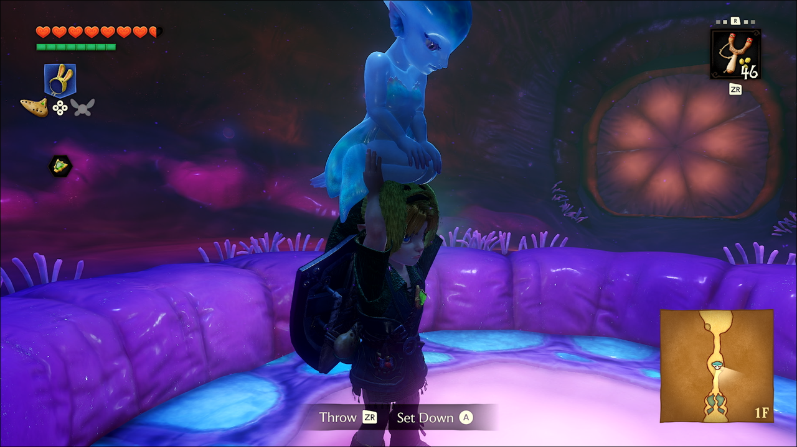
The Boomerang is in this room.
THE THREE PARASITES — FIND THE COMPASS
- Go back to the main hall. Pick up Ruto. Floating eels called Tailpasaran swim here. They are electric, with a hard head.
- Do NOT hit their heads! Hold ZL to target one. Navi points at its tail. Throw your Boomerang. It curves around and hits the tail. That kills it!
- Three colored veins block the halls. Only the red vein hall is open. Follow it to the right. Use Ruto to open the door.
- Inside is the red parasite! It is a big tendril hanging down. It swings wildly at you. Keep moving side to side!
- Watch for a frayed, torn spot in the middle of the parasite. Throw your Boomerang at that spot. Hit it lots of times!
- The red parasite dies. The red vein melts away. One hall is open!
- Go down the left hall, following the blue vein. The blue parasite is here, with Biri floating around it.
- The blue one thrusts straight at you instead of swinging. Keep moving! Throw your Boomerang at its frayed spot. Use Ruto or your Boomerang on the Biri.
- Beat the blue parasite. The blue vein melts away. Now you can reach the last two rooms!
- Check the room on the RIGHT first. It has no green vein. It is full of Shabom bubbles! Throw your Boomerang over and over to pop them all.
- Beat them all. A big chest pops up. Open it. It holds the Compass! Now your map shows chests, doors, and the boss.
- Now go into the NORTH room. The green parasite is here, with Stingers around it.
- It swings wildly, then slams forward lots of times. Then it stuns itself on the ground! Jump in and hit it up close, or throw your Boomerang.
- Beat the green parasite. The last vein melts away! The green barrier in the two-floor room is gone now.
BACK DOWN — GOLD SKULLTULAS 2 AND 3
- Take Ruto with you. Go back to the two-floor room. Drop down through the blue opening you could not use before!
- You land on a high ledge. Look north. Biri float around. A Gold Skulltula is on the wall!
- Throw your Boomerang at it. The Boomerang hits it AND brings the token back to you! That is Gold Skulltula 2.
- Jump down to the lower floor. Take the door to the southwest. A wobbly platform is in the water. It attacks you if you try to jump on it!
- Throw your Boomerang at the platform first. It freezes in place! Jump across. Break the pots. Open the small chest. It holds a Red Rupee (20 rupees).
- Go back up to the high ledge where you dropped down. Go down the hall to the room in the northwest.
- A Gold Skulltula hides on the ceiling of this small hall! Throw your Boomerang at it. Grab the token. That is Gold Skulltula 3.
THE BIG OCTO — MINI-BOSS!
- Go into the next room. Ruto sees her stone on a high platform! Throw Ruto up onto the platform.
- She grabs the stone. But the platform shoots UP — and comes back down with a Big Octo on it! It is a giant octopus.
- The Big Octo fills the whole round walkway. Its weak spot is a green bump on its back. It charges at you nonstop!
- Throw your Boomerang at it. That stuns it! Run around to its back fast.
- Jump attack the green bump on its back! It will start moving again and try to hide the bump. Throw your Boomerang again to stun it.
- Hit it lots of times. After a while, it spins around and digs away out of sight. Shabom bubbles pop out! Pop them fast.
- Look around with your camera. The Big Octo pops back up somewhere else. Let it charge at you. Stun it with your Boomerang. Hit its back again.
- Do it 3 times. The Big Octo is beaten! The platform goes down. You can ride it up to the second floor.
THE LAST ROOMS — GOLD SKULLTULA 4
- Ride the platform up to the second floor. Pots are here if you need hearts or seeds. Go down the hall to the south.
- Two more wobbly platforms are in the water. Throw your Boomerang at each one to freeze it. Then jump across.
- The next room has a sealed door and a switch — but Ruto is gone! She went up to the boss room.
- Look down. A trail of small platforms leads to the lower part of the room. A small stone block is down there.
- Jump across the first platform. Throw the block ahead of you onto the big upper platform. Then climb up the vines yourself.
- Put the block on the switch. The door opens! Go through.
- The next watery room has Biri floating around, a sealed door, and a very tall pillar with vines on the back.
- A glowing thing hangs high in the ceiling. Walls block it — you can NOT hit it with your slingshot straight on!
- Look at the back of the tall pillar. Vines go up to the top. A Gold Skulltula is on the vines!
- Throw your Boomerang or shoot your slingshot at it. Grab the token. That is Gold Skulltula 4 — the last one in this dungeon!
- Climb to the top of the tall pillar. Now you can see the glowing thing from the side.
- Hold ZL to target it with Navi. Throw your Boomerang. It curves around the wall and hits it! The door below opens.
- Break the pots if you need items. Then go through the door. The boss is waiting!
He is a big electric jellyfish stuck to the ceiling. He is NOT like the 1998 boss — this fight has three parts! Keep moving the whole time. His lightning blasts hurt a lot.
PART 1 — CUT THE ROPES: Barinade hangs from the ceiling by three ropes. Each rope has a frayed, torn spot near the top. Keep strafing in a circle so the lightning misses you. Throw your Boomerang at the frayed spots, one rope at a time. Cut all three ropes!
PART 2 — THE SPINNING SHIELD: Barinade falls down. Electric jellyfish spin around him like a shield. Do NOT touch them! And do NOT hit them — his power keeps them safe. Just stay away and dodge the lightning.
Step 1: Watch his middle. It glows bright, then shorts out! The shield drops for a short time.
Step 2: Run in FAST and slash the jellyfish with your sword! Cut as many as you can before his power comes back.
Step 3: You may need to do this two times to cut all the jellyfish away.
PART 3 — THE BELLY: Now his belly pops out of the floor! More jellyfish spin around him. His belly turns purple when he charges at you — run to the side fast!
Step 1: Wait for the jellyfish to slow down. Throw your Boomerang at his belly. He sinks into the ground and the jellyfish lose their zap.
Step 2: Run in and cut the jellyfish with your sword or Boomerang!
Step 3: Last of all, Barinade pops right out of the ground and flies around the room, shooting lightning everywhere. Stay moving! Get close and throw your Boomerang at his weak spot. He falls down. Now hit him with jump attacks and spin attacks!
Step 4: He will dig away and pop up again. Do it 2 or 3 times. Then he pops for good!
You get a Heart Container! Step into the blue light. Ruto gives you the blue stone — and says you are her future husband. Funny!
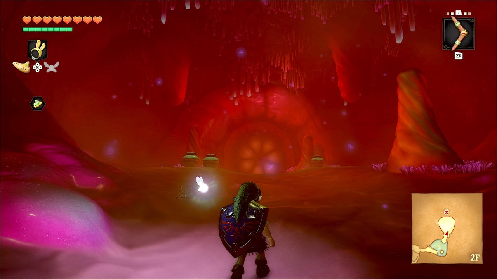
Barinade! Cut his ropes, then hit his body.
• Skulltulas: 4 gold spiders hide inside Jabu-Jabu. All 4 can be found as a kid, on your first trip! See the steps above for the exact spots.
• Chests in this dungeon: Dungeon Map, Boomerang, Compass, Red Rupee (the wobbly platform room). That is all of them!
• Heart Piece #26: Light all the torches in Zora's Domain.
• Heart Pieces #22 and #23: Glide with Cuccos along Zora River. (#24 and #25, the frog ones, need the Song of Storms — come back as a kid after you learn it as a grown-up!)
• Heart Piece #29: Fish at the Lake Hylia fishing pond and catch a big fish.
• Plant a Magic Bean NOW by the Lakeside Lab for Heart Piece #31 (grown-up).
• Skulltulas: 4 inside Jabu-Jabu, 4 along Zora River, 3 at Zora's Fountain, 5 at Lake Hylia.
• Bottle #4: Ruto's Letter — you need it for the story!
7. TEMPLE OF TIME

The big moment! You pull the Master Sword and grow up!
- You now have all 3 magic stones: green, red, and blue. Head back to Hyrule Castle Town. You can walk across Hyrule Field, or take the owl's ride if he offers one.
- As you reach the drawbridge, a cutscene starts. It is the dream from the start of the game, but real! Zelda and Impa flee from the castle on a white horse. Zelda throws something shiny into the moat!
- Then Ganondorf rides up on his black horse. He demands to know where the white horse went. Link says nothing. Ganondorf blasts Link with a ball of dark magic. Then he rides off after Zelda!
- When you can move again, walk to the moat by the drawbridge. Navi says Zelda threw something here. Look for a blue glint under the water.
- Jump in the moat. Dive down to the glint and pick it up. It is the Ocarina of Time! It is the royal family's treasure. It is much stronger than your Fairy Ocarina.
- Zelda's voice speaks to you in a white mist. She leaves you the ocarina and a song. Play the notes back when they show up. You learn the Song of Time! Zelda asks you to play it at the Temple of Time and guard the Triforce.
- Cross the drawbridge into Castle Town. Run across the market, past the fountain. Climb the wide stone steps in the north-east corner. There is the Temple of Time.
- Go inside. Walk to the stone tablet in front of the big stone door. That door is the Door of Time. Stand on the mat in front of it.
- Take out your ocarina and play the Song of Time. The 3 magic stones fly up into their spots on the altar. The Door of Time rumbles open! Light pours out.
- Walk through the door. In the middle of the room stands a stone. A sword sticks out of it. That is the Master Sword! Walk up and pull it out with A.
- FLASH! Light fills the room. You wake up in a strange place: the Chamber of Sages. You slept for 7 years! You are all grown up now.
- A kind old man named Rauru talks to you. He is the Sage of Light. He tells you the sad news. You were too young to wield the Master Sword, so your spirit slept. While you slept, Ganondorf walked through the open Door of Time. He took the Triforce. He took over Hyrule!
- Rauru gives you the Light Medallion. It holds his sage power. He asks you to wake the other 5 Sages. They sleep in 5 temples: Forest, Fire, Water, Shadow, and Spirit. Wake them all and you can seal Ganondorf away!
- Light flashes again. You are back in the Temple of Time, as a grown-up. A mystery person named Sheik is waiting. Sheik tells you the 5 temples you must visit. First is the Forest Temple, where your friend Saria waits.
- Sheik tells you to go to Kakariko Village first. You need an old tool there before you can enter the Forest Temple. That tool is the Hookshot!
- Walk out of the temple. Look around. Oh no! Hyrule Castle Town is in ruins. Ganondorf's black castle floats over the wreckage. Redeads shamble in the plaza. Use the Sun's Song to freeze them, or run past fast. Hyrule needs a hero. That hero is you!
Once you pull the Master Sword, you can still go back to being a kid. But some kid things are easy to forget. Make sure you did these as a kid:
• Planted all 5 Magic Beans (Graveyard, Death Mountain Trail, Death Mountain Crater, Lake Hylia, Desert Colossus).
• Taught your Scarecrow's Song to the scarecrow at Lake Hylia (you need it as a grown-up!).
• Got Epona's Song from Malon at Lon Lon Ranch.
• Grabbed the kid Heart Pieces and Skulltulas in each place — the green boxes in this guide tell you which ones!
⭐ BONUS: GET THE HOOKSHOT
Goal: Get the Hookshot — it shoots a chain that pulls you across gaps. You need it for the Forest Temple!
- As a grown-up, go to the Kakariko Graveyard at night. Dampé the gravedigger has died. But his ghost still haunts the graveyard! Talk to the villagers if you want the full spooky tale.
- First, peek inside Dampé's hut. Read his diary. He says he found a treasure. He buried it with himself in his own grave!
- Find his grave. It is on the north-west edge of the graveyard, by a lone old tree. Look for purple smoke rising from it. Pull the headstone back. Jump in the hole!
- Inside, the Ghost of Dampé floats up to greet you. He is still a chill guy! He can not do digging tours any more. But he built a race course instead.
- Dampé floats off down a dark hall. Follow him! This is the race. You do not have to beat him. You just have to keep up. If you fall too far behind, you fail and start over. Hold A to run fast the whole way!
- When the race starts, run straight. Then take a right, then a left. Dampé shoots fire at you. Dodge it! Climb up the ledge.
- Keep running straight. Turn a corner. Take a left, then another left. Do not be fooled by the green rupees on the floor. They are a trap to slow you down!
- Take a right into a big room full of strange stones. Stick to the back right corner. Then take a left, then a right.
- Now you are in a fog-filled room. Run to the back. Do NOT go left — Redeads sleep there and will grab you! Go to the back right corner. Climb up the left raised platform in the alcove.
- Take a left into the last big room. A winding road runs around a big pit. Sprint all the way to the end. If you make it before the door shuts, you win!
- Dampé gives you his prized treasure: the Hookshot! Aim it at wood, stone, or a far target and press ZR. The chain shoots out and pulls you right to it. It can also pull small things to you, like a Boomerang.
- Test it right away! Look for a target at the edge of some crumbling stairs. Hookshot across. The path leads out to the windmill of all places!
- Step out onto the windmill's high platform. Look right. There is a Heart Piece across the gap! Step onto the windmill's turning platform. Ride it across and grab Heart Piece #9.
- Now go back and race Dampé again. This time he dares you to finish in under 1 minute. Sprint the whole way. Do not stop for rupees. Do not stop for anything. You know the turns now: right-left, left-left, right, left-right, back right corner, left platform, left around the pit.
- Beat the 1-minute race and open the chest at the end. You get Heart Piece #14!
• Skulltula: At night, look left of Impa's House, past the Cucco shack. Vines hang high up on the wall. Hookshot up to them. A Gold Skulltula hides in the yard behind the house!
• Magic Bean ride: If you planted a bean by the graveyard wall as a kid, ride the big plant now. It lifts you to a ledge with Heart Piece #13!
• Business Seed: At Lon Lon Ranch, Hookshot up to the vines on the crumbling tower in the corner. Climb up to find a small chest with a Business Seed.
⭐ BONUS: GET EPONA (YOUR HORSE!)
Goal: Get your very own horse. Epona makes crossing Hyrule Field fast and fun!
- First, as a kid, go to Lon Lon Ranch and talk to Malon in the horse field. She teaches you Epona's Song. Play it near the horses — Epona will come to you! (See the Kakariko chapter for the full steps.) You must learn this song as a kid. You can not learn it as a grown-up!
- As a grown-up, go back to the ranch. Things are bad! The mean stable hand Ingo has taken over. He calls it Ingo Ranch now. He makes Malon work for him. He sells the horses to help Ganondorf!
- At night, Malon stands alone at the edge of the field, singing softly. She wishes someone would take Epona away from this place. That someone is you!
- During the day, talk to Ingo. Pay him 20 rupees to ride a horse in the pen. (In the old game it was 10. In the remake it is 20!)
- Once you are inside the pen, play Epona's Song on your ocarina. Epona is all grown up now. She comes galloping over to you! Get on her with A.
- Take a minute to learn to ride. Press A to use a carrot. Carrots make Epona run faster. You have 6 carrots. They come back after a short rest. Practice turning corners. Practice jumping over the low fences in the pen.
- When you feel ready, ride up to Ingo while you are on Epona. Talk to him. He bets you a race! One lap around the track. If you win, you get 20 rupees. If he wins, he keeps your money.
- Race 1: Stay on the inside of the track. That is the short way around. Save your carrots for the straight parts. Use one carrot, wait a bit, then use the next. Do not use them all at once! Gallop past Ingo on the straights. Win the race!
- Ingo is furious! He bets you again. This time, if you win, you keep Epona! If he wins, he keeps the money. He is faster this time. But you can still beat him.
- Race 2: Same plan, but faster. Use carrots on the straights when Ingo tries to pass you. Beat him around the corners on the inside. On the last straight, use all your carrots left and blaze over the finish line!
- You won Epona! But Ingo locks the gate. He will not let you leave. Look around the ranch walls. There are low fences on each side. Pick one with a long run-up.
- Ride Epona back as far as you can. Turn her toward the fence. Use carrots to build up speed. When you reach the fence, press X to jump. Epona leaps right over it! Epona is yours forever!
- Now you can call Epona any time in Hyrule Field or Lake Hylia. Just play Epona's Song. She comes galloping to you!
- Go back to the ranch later. Ingo has come to his senses. Talon is back in charge! Malon thanks you. She offers a new game: an obstacle course race. Ride around the track, jump the fences, dodge the blocks. Finish in under 40 seconds and she sends a prize to your house in Kokiri Forest: a whole cow! Play Epona's Song for the cow any time to get fresh Lon Lon Milk.
• Trading quest: After you get Epona, go to Kakariko. The Pocket Cucco Anju gave you has hatched by now. Wake up Talon with it in the big house by the village center. He hurries back to the ranch — and Anju gives you Cojiro, the next step to the Biggoron's Sword!
• Scarecrow Song: Ride Epona to Lake Hylia. Bonooru the scarecrow is still there. Play your Scarecrow's Song for him again as a grown-up. Now Pierre will pop up on high spots when you play it — and you can Hookshot to him!
8. FOREST TEMPLE

An old temple in the woods where the halls twist and turn.
Goal: Wake Saria, the Sage of Forest. The temple is twisty — the halls turn and change!
Before you go in, get the Hookshot first. See the bonus chapter just before this one! You need it to climb and cross gaps in here.
GETTING IN
- Go back to Kokiri Forest. It is full of monsters now! Sheik meets you outside and teaches you the Minuet of Forest.
- Climb up to the temple door. Go in. Two Wolfos (big gray wolves) jump out at you! Watch both of them. Dodge back when one swipes. Then jump in and hit it when its back is turned.
- Beat both Wolfos. The front door is locked. Look up at the big tree on the east side (your right). See the long wall of vines? Climb up the vines.
- Run along the high branch to the tree on the other side. Open the small chest up there. It holds Small Key 1!
- Use Small Key 1 to open the front door. A big Skulltula blocks the hall. Hit its back side with your sword.
GETTING THE DUNGEON MAP
- You are in the big main room, called the foyer. It has a lift in the middle and four colored torches. Four ghost sisters — the Poe Sisters — steal the four flames! The lift stops working. You must win back all four flames.
- First, walk straight ahead toward the green window. Go up the stairs. Turn right. A Gold Skulltula hides on the wall by a blue window. Hit it with your Hookshot. That is Skulltula 2 of 5.
- Go north through the door under the green window. A Blue Bubble (a flying skull with blue fire) will ram you. Hold up your shield! The fire goes out when it hits your shield. Then slash it fast.
- Go in the next room. The door locks behind you! Two Stalfos (skeleton knights) attack, one at a time. Be patient. Wait for one to swing twice. Hit it after the second swing. Then dodge the big overhand hit! If one jumps far, jump to the side. Beat both of them.
- A small chest pops up. Open it for Small Key 2. Go back to the foyer.
- Do NOT use the key on the red door yet. Look to the northwest. A big blue block stops a door on the lower floor. Play the Song of Time in front of it. The block goes away! Go through to the northwest courtyard outside.
- This yard has a pond and a big well in the middle. Deku Babas hide in the grass. On the right, vines climb up to a high balcony. Use your Hookshot to kill the Skullwalltulas (spiders) on the vines first. Then climb up.
- The way ahead is broken. Hookshot across to the balcony to the north. Step on the switch there. The water in the well goes down!
- Jump down into the well. Swim to the path in the northeast. Follow the low hall. Open the small chest for Small Key 3.
- Climb the ladder up into the other courtyard. Octoroks spit rocks at you from a small moat. Block their rocks with your shield. Then Hookshot across the water to a big chest. Open it. It holds the Dungeon Map!
- Go back through the door to the foyer. Step on the switch to open the gate on the blue side of the room.
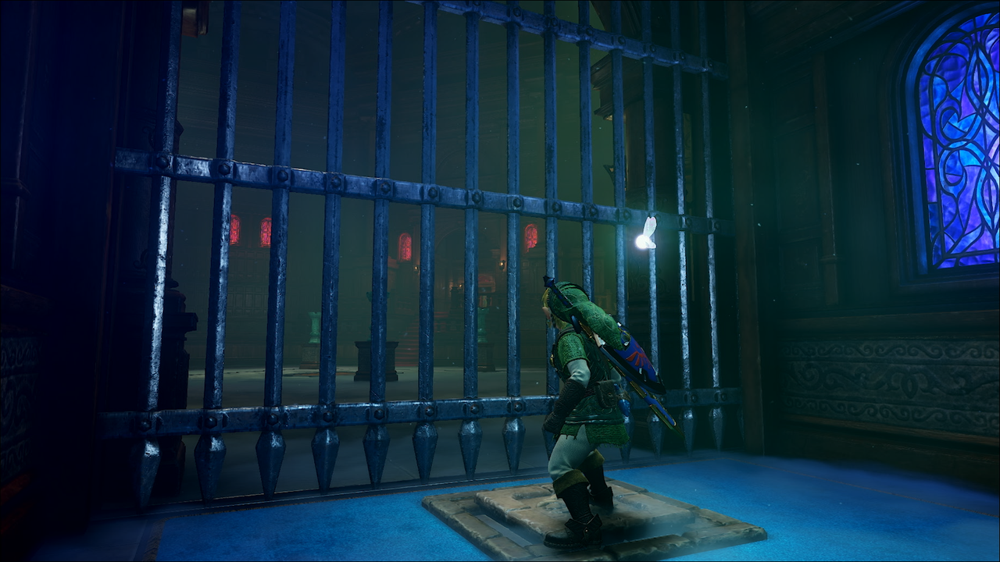
The Dungeon Map is in this chest, across the moat.
GETTING THE FAIRY BOW
- Use a key on the east red door. Beat the Blue Bubble in the hall. Go in the big tall room.
- Watch the floor! A dark shadow grows under you. The light above turns from blue to red. DASH away fast! A giant hand called a Wallmaster slams down. If it grabs you, it drags you all the way back to the temple door!
- After it slams down and misses, run in and slash it before it floats away. One Wallmaster down.
- Climb the ladder. You see yellow arrows on the floor. They point south from a big stone block to the west. Go around the balcony to the other side of the block. Push it east, then south. Go back around and push it west until it drops into a hole in the floor.
- Now climb up to the second floor. Push the next block south until it stops. Go back down and up the other ledge. Push the block east until it drops into a hole. Now you can climb up to floor 3.
- Beat the little Blue Bubbles with your Hookshot. Look west for a switch. Step on it. It turns on a lift so you can ride up and down this tall room fast.
- Go through the north door. You are in a strange twisted hall! The whole room tilts to the left. Hop along the tilted floors. Watch out for another Wallmaster. Cross to the door on the east side.
- Go down the long stairs. You see paintings on the walls. One painting looks like a Poe Sister! It runs away when you get close. Ignore it for now. Go down to floor 2 and go through the far door.
- Three Stalfos attack here, one after the other. The middle of the room is a pit of green poison goo! Stay near the walls. Let them come to you. Do not dodge into the goo.
- Beat all three Stalfos. A big chest pops up. Open it. You get the Fairy Bow! Now you can shoot arrows far away.
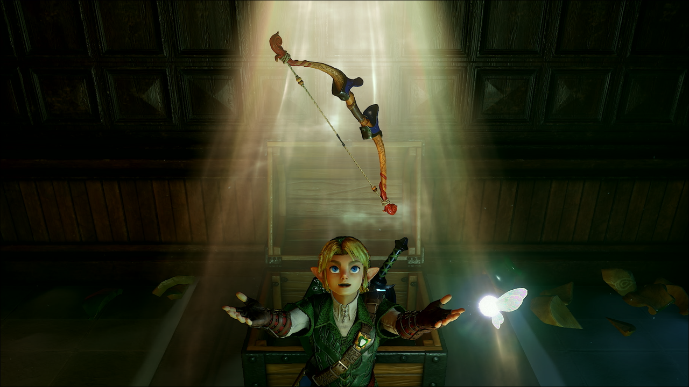
The Fairy Bow is in this big chest.
THE POE SISTERS — JOELLE AND BETH
There are four Poe Sisters: Meg (purple, the oldest), Joelle (red), Beth (blue), and Amy (green, the youngest). Each one hides in paintings. Shoot her painting with your Bow to make her come out!
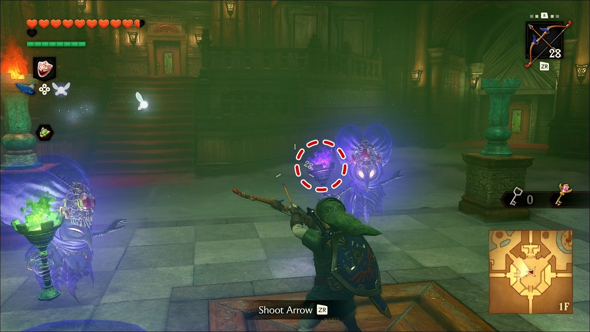
Meg makes three fake copies of herself. Shoot the real one!
- Go back to the stair room. Shoot the Poe paintings with your Bow. Shoot one on each side of the floor 2 landing. Shoot one more at the top of the floor 3 stairs. With all three paintings gone, the Poe must come out and fight!
- Joelle (red) spins at you with her torch. Dodge to the side when she spins. She gets dizzy after her spin. Run in and slash her! Hit her again after her next spin. When she falls, her red flame flies back to the foyer. A small chest pops up with Small Key 4.
- Now go to the blue side of the temple (the west wing). It looks just like the red side. Shoot the Poe paintings on the floor 2 and floor 3 landings.
- Beth (blue) fights just like Joelle. Dodge her spin. Hit her when she is dizzy. When she falls, her blue flame flies back. A big chest pops up with the Compass!
GETTING THE BOSS KEY
- Look at your map. There is a locked door on floor 3 past where you beat Beth. You need one more key. Go back east, down through the red wing and the twisted red hall, and outside.
- Remember the eye switch in the twisted hall? Shoot the eye with your Bow. The hall straightens out! The red chapel room turns back to normal too.
- Before you go in, drop to floor 2 in the tall block room. Walk along the yellow arrows to the small balcony in the northeast corner. Shoot the eye switch there with your Bow. A small chest drops down. It holds a Purple Rupee (50 rupees)!
- Go back through the straight red hall. The red chapel room now has a hole in the floor. Next to the hole is a big blue chest. Open it. It holds the Boss Key! This is the key to the boss door.
THE POE SISTERS — AMY AND MEG
- Drop down the hole by the Boss Key chest. You land in a pool on floor 1. Get out fast and beat the Blue Bubbles.
- Go out to the south. You are on a low balcony over the northwest courtyard. Do NOT jump down yet. Look for a door to the south. A small ledge wraps around past it. Follow it. A Gold Skulltula hides on the wall. Hit it with your Hookshot. That is Skulltula 3 of 5.
- Go in the room to the west. A Floormaster (a giant green hand) attacks! It has green fire. Hold up your shield to put the fire out. Or dodge its hit and slash it after the flames go down.
- When a Floormaster dies, it splits into three small hands! Slash them all fast. If one grabs you, it can grow back into a big hand. Din's Fire works great here. When they are all gone, a small chest pops up with Small Key 5.
- Go through the south door. This is a shortcut back up to floor 3. Shoot the eye to twist the red hall again. Now go back through to the blue wing. Use Small Key 5 on the locked door on the top floor of the stairwell.
- Go through the blue chapel and up a ladder. Shoot the Green Bubbles from far away with your Bow. Open the far door.
- You are in a cold room. The eye switch above the door is frozen in ice! Step on the switch nearby to light a torch. Shoot an arrow through the torch flame. The fire arrow melts the ice off the eye. Shoot the eye to twist the blue hall!
- The blue chapel twists too. A pit opens down to floor 1. Fall down into the northeast corner of floor 1.
- Find the side door out to the courtyard. Push the stone block to make a shortcut. Turn around and look up. See the straw on the wall? If you learned the Scarecrow's Song at Lake Hylia, play it here. Pierre the scarecrow pops up! Hookshot to him. A Gold Skulltula hides up there with him. That is Skulltula 4 of 5.
- Go back inside. Watch the ceiling! Big tiles fall down in a checkerboard pattern. Move only when the trap goes up. Stay in the rays of light — the trap does not fall there. Watch out for Skulltulas that drop down in the light!
- Step on the switch under the light to open the far door. Grab the small chest with 5 Arrows on the way.
- The next room has a big block in the middle with a painting on it. A painting on the wall shows the green Poe. Shoot her with your Bow. She jumps into the block painting and breaks it into pieces!
- Slide the blocks to put her picture back together. Trick: she adds one fake block. The fake piece has a dark tassel on top of the hood. Do not use it. Use the light-colored piece as the top right corner. When the picture is whole, Amy (green) comes out to fight!
- Amy spins at you many times in a row. Dodge each spin. Wait until she gets dizzy. Then slash her! When she falls, her green flame flies back. The door to the foyer opens.
- Go down the hall. A big painting of the last Poe Sister blocks your path. Stay near the door. Shoot her when she comes into view. She runs back into the foyer. Chase her!
- Meg (purple) makes three fake copies of herself! The fakes cannot be hurt. First time: shoot the one holding the green flame torch. Second time: shoot the one with a lit torch. Third time: all of them have purple torches! Look at their eyes. The fakes have narrow eyes. The real Meg has wide eyes. Shoot the real one!
- Hit Meg three times with your Bow, then slash her with your sword each time. When she falls, all four torches light up! The lift in the foyer starts to work. Ride it down to the basement.
UNLOCKING THE LIFT TO THE BOSS
- You are in a round basement room. The walls have handholds. You must push the walls around to open new doors. First, look for the open door to the south. Beat the Skulltula inside. A Gold Skulltula hides in the wall of the alcove. Hit it with your Hookshot. That is Skulltula 5 of 5!
- See the gate with a hole? Behind it is a frozen eye switch. You need fire to melt the ice. Push the handholds counter-clockwise (to the left).
- Keep pushing until the open door moves to the northwest. Step on the switch inside. A torch lights up in one of the small windows!
- Keep pushing counter-clockwise. Stop at the southwest alcove to open a chest with 5 Arrows. Keep pushing until the lit torch window is in front of the room with the frozen eye.
- Shoot an arrow through the torch flame. The fire arrow melts the ice. Shoot the eye switch. The gate to the north opens! Use your Boss Key on the boss door.
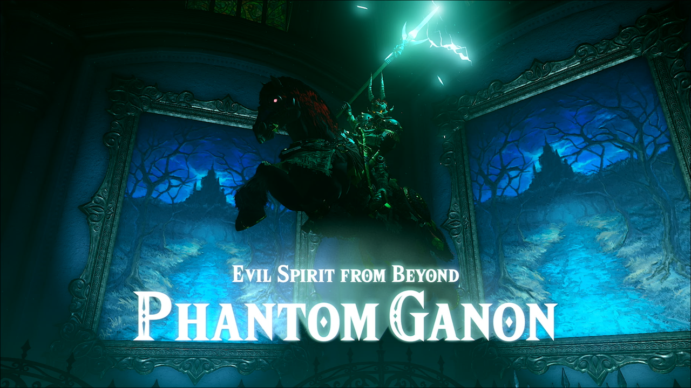
Phantom Ganon! Shoot the one with the spear in his right hand.
He rides a horse out of paintings on the walls! There are six paintings. Watch them all. The fakes turn back at the edge of the painting. Only the real one jumps out. Trick: the real Phantom Ganon holds his spear in his right hand. The fakes hold it in their left hand. Shoot the one with the spear on the left side of the painting! Shoot him with your Bow 2 or 3 times. When he falls off his horse, slash him with your sword. Then he floats up high and throws green magic balls at you. Hit a ball back at him with your sword, like tennis! When he falls down, run up and slash him a lot. He may dive at you instead of throwing a ball — dodge fast! Hit him 3 times and he is done!
• Skulltulas (5): (1) Top of the vine wall on the east tree at the entrance. (2) Foyer, on the wall by a blue window near the green-window stairs. (3) On the ledge past the south door on the balcony over the northwest courtyard. (4) With Pierre the scarecrow in the northeast courtyard (play the Scarecrow's Song). (5) In the south alcove of the basement room, past the lift.
• Small Keys (5): Tree branches at the entrance, Stalfos room, well basement, Joelle's chest, Floormaster room.
• Boss Key: Big blue chest in the red chapel room after you straighten the twisted hall.
9. FIRE TEMPLE

Hot, hot, hot! Bring a Goron Tunic so the fire does not hurt you.
Goal: Wake Darunia, the Sage of Fire. Free all the Gorons locked in cells!
There are 9 Gorons locked in cells in this temple. Each freed Goron leaves you a Small Key. Free them all!
BEFORE YOU GO IN
- Go to Goron City on Death Mountain. Buy the Goron Tunic in the shop and put it on! It costs a lot of rupees, so save up first. Without it, the hot rooms hurt you.
- Sheik meets you and teaches you the Bolero of Fire. This song warps you to the Fire Temple.
- Enter the Fire Temple in the volcano crater. It is a maze of hot rooms and lava!
THE FIRST GORON
- The entry hall has four doors. One is locked. One is blocked by a big statue. One leads to a Goron cell you cannot open yet. Go up the stairs to the west (left).
- You find a big room with a lava pit. Your friend Darunia is here! He says he will fight the dragon Volvagia alone. He wants you to free his 9 Goron friends first. He leaves through the far door. You cannot jump that far. Go back down.
- From the door, go south. Hop across the platforms over the lava to the far ledge. A Goron is locked in a cell here! Step on the switch in front of the cell. The door opens. Goron 1 is free!
- He tells you a tip: a pillar above can be knocked down to reach Darunia. He leaves a small chest behind. Open it for Small Key 1.
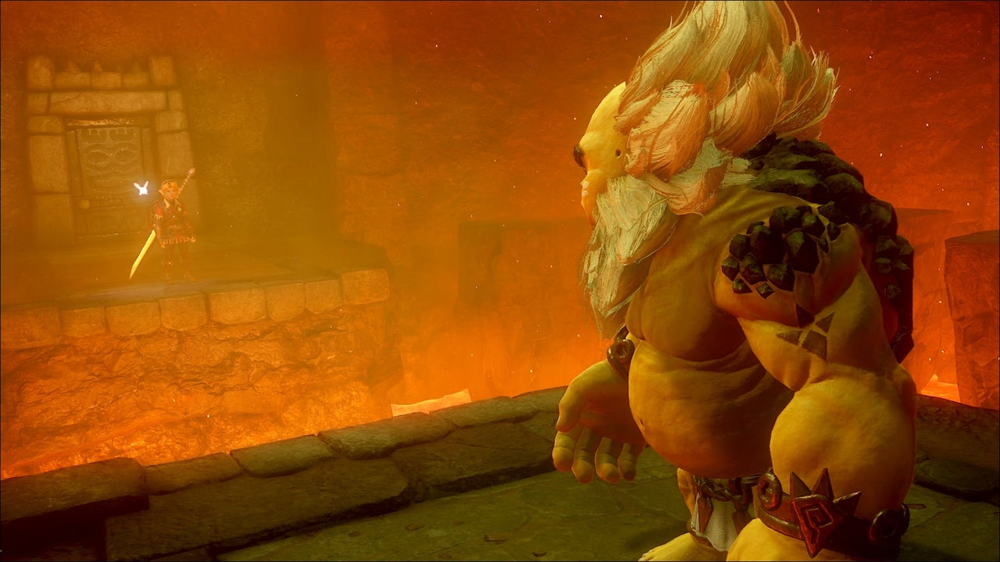
Darunia is waiting for you at the boss door.
GORONS 2 AND 3
- Go back to the entry hall. Use Small Key 1 on the locked door on the east side. Go in the big room with the long bridge over lava. Fire Keese fly around. Shoot them with your Bow from far away.
- Go north across the big stone platforms. Some platforms sink! Move fast. A Goron is in a cage on the north side. Step on the switch to free him. Goron 2 is free! He leaves a small chest with Small Key 2. His tip: some walls look funny. You can bomb them!
- Stay on the north side. Go east across more moving platforms. Watch out for Lava Bubbles that jump out of the lava. Block them with your shield. Then hit them with your Hookshot.
- In the northeast corner, a platform shoots up on a jet of lava. Ride it up to a high ledge. Play the Song of Time in front of the blue block. The block moves down. Go in the room behind it.
- Flying Tiles (floor tiles with minds of their own) fly at you! Hold up your shield. They smash into it and break. Behind them hides a Like Like (a big slug). It tries to swallow you whole! If it eats you, it can steal your Goron Tunic or your Hylian Shield! Hit it with your Hookshot to stun it. Then slash it. If it steals your gear, beat it fast and it spits your stuff back out.
- Beat the tiles and the Like Like. Look at the back wall. A Gold Skulltula hides there! Hit it with your Hookshot. That is Skulltula 1 of 5.
- Go back to the big lava room. Go to the south side. Find the cracked wall on the south edge. Throw a bomb at it! The wall blows open. A Goron is inside. Step on the switch. Goron 3 is free! He leaves a small chest with Small Key 3. His tip: a room nearby has a platform that shoots up on a big pillar of fire.
- Before you leave, look at the two platforms in the lava to the southwest. The second one shoots up into the air. Jump to the hidden ledge up there. Pots hold blue and red rupees!
GORON 4 AND THE DUNGEON MAP
- Cross the long bridge to the east side. Use a key on the locked door. Inside, a huge jet of fire shoots up from the floor. You need something to sit on top of it. Go through the next locked door.
- Climb the mesh wall (the wire fence wall) to the top of the room. Keese hide in the corners. Push the big stone block on the edge so it falls onto the fire jet. Jump down and ride the block up like a lift to floor 2!
- Floor 2 has Torch Slugs (slow slugs that are on fire). Shoot them with your Bow from far away. Or dash in and slash them to put their fire out.
- Go up the big steps. A wall of fire blocks your path. Next to it is a blue switch. Hit the switch to turn it pink. The fire moves to the back wall instead!
- Pull the stone block out of the corner alcove. Climb up on it. Go past where the first fire wall was. Turn around and hit the switch again with your Bow or Hookshot. The fire moves again. Now you can climb up to floor 3. A Goron is locked in a cell here, but there is no switch. You must come back for him later!
- Floor 3 east side is a big room full of rolling boulders! Stay on the lower roads. Hug the right wall and go north. See the cracked wall? Throw a bomb at it. A Gold Skulltula hides behind it! That is Skulltula 2 of 5.
- Keep to the north wall past the spider. Dodge the boulders. Find an alcove with a Goron cell. Step on the switch. Goron 4 is free! He leaves a small chest with Small Key 4. His tip: some doors in the temple are fake. They fall on you if you try to open them. Bomb them first!
- Weave past the boulders to the south side of the room. Find a big alcove with no cell. Inside is a big chest. Open it. It holds the Dungeon Map!
GORONS 5 AND 6 AND THE COMPASS
- The other cell in this room is up on the high platforms. You cannot reach it yet. Look on the west side for a locked door. Use a key and go in the hall.
- Inside, there is a door to the south and a sealed door to the west with an eye above it. Shoot the eye. Go through the west door first. A big chest holds the Compass!
- Now go through the south door. You are over a big lava pool with mesh platforms. A wall of fire starts to chase you from behind! Sprint up the walkway. Dodge the Red Bubbles. Climb up the ledge on the left. Wait for the fire wall to pass you.
- Jump back down and run behind the fire wall to the north side. Push the big stone block out into the last room. Now you have a shortcut. You can also reach the high platforms over the rolling boulders!
- Before you go up, hop north and look back south and up. See the straw on the wall? If you learned the Scarecrow's Song, play it here. Pierre the scarecrow pops up! Hookshot up to him. Jump to the small platform to the north. It rises up! Climb the mesh wall to the top floor. A Gold Skulltula hides on the wall by the door. That is Skulltula 3 of 5.
- In the top floor room, look along the inside wall around the pit. Another Gold Skulltula hides there! Hit it with your Hookshot. That is Skulltula 4 of 5.
- Step on the switch in this room. Two pillars rise up with Hookshot targets. Race along the room and Hookshot to each one before they sink down. You win three chests: two Red Rupees and one Purple Rupee. That is 90 rupees in all!
- Go back down to the high platforms. Jump over the rolling boulders. Beat the Fire Slugs on the way. Find a platform in the middle with a big crack. Throw a bomb at it! It blows open. A pit with a mesh wall leads down to floor 2.
- Climb down. You are back by the Goron cell with no switch. Now you can step on the switch! Goron 5 is free! He leaves a small chest with Small Key 5. His tip: some switches are so rusty that even a Goron cannot push them down.
- Climb back up to the high platforms. Jump across the boulders to the south end of the room. Step on the switch by the last cell. Goron 6 is free! He leaves a small chest with Small Key 6. His tip: the temple hides a big old hammer. You want it!
GORON 7 AND THE MEGATON HAMMER
- Go back to the room with the fire wall that chased you. Sprint east ahead of the fire wall. Go in the next area.
- This room is a fire trap funhouse! Hidden fire walls pop up near the thin posts. Rolling boulders roll back and forth. Move slow. Look for an opening before you step.
- Do NOT trust the door to the south of the first boulder. It wiggles! If you try to open it, it falls flat on your face. Throw a bomb at it instead. It is a fake door.
- Weave through the hidden fire walls to the north wall. A Goron is locked in a cell. Step on the switch in front of him. Goron 7 is free! He leaves a small chest with Small Key 7. His tip: if the way is blocked, the key is "time."
- Go back to the south side. Find the locked door to the middle room. Inside, a switch in the middle needs something heavy to sit on it. That switch turns off the big fire jets to the west. Go east and north past a rolling boulder and two fire spouts. Find a small platform with a tiny stone block.
- Grab the stone. Throw it through the fires toward the switch. You do not have to carry it all the way! Go back around to the switch. Put the stone on it. All the fire traps in the room stop!
- Use your last key on the next door. A Flare Dancer jumps out of a fire pit! It skates around in a ring of fire. It cannot be hurt while it is on fire.
- Wait until it comes close. Hit it with your Hookshot! The Hookshot pulls its metal core out of the fire. The tiny body runs away. Chase it and slash it with your sword! It is fast. Run the other way to cut it off. Or throw Bomb Flowers in its path.
- After you hurt it, it jumps back in the fire pit. Blue flames bounce around the room. Dodge them. Pull it out with your Hookshot again. Keep going until it blows up! A platform falls onto the pit. A lift opens up to floor 4.
- Ride the lift up. Climb up. Fire jets block the path. A colored switch sits below. Throw a Bomb Flower down at the switch to lower the jets. Throw a second Bomb Flower. Run to the mesh wall and climb up while the jets are down!
- On floor 5, a rolling boulder blocks the path to the right. A switch sits in front of you. Step on it. A narrow path rises up. The fire walls drop for a short time. Run up the narrow path fast before the fires come back!
- At the top is a big chest. Open it. You get the Megaton Hammer! It smashes gray rocks, rusty switches, and big statues.
- Leave by the high ledge to the south, above the rolling boulder. At the far end is a Fairy's Thought. It says the fairy loves bright places. Play the Sun's Song. Fairy magic heals you!
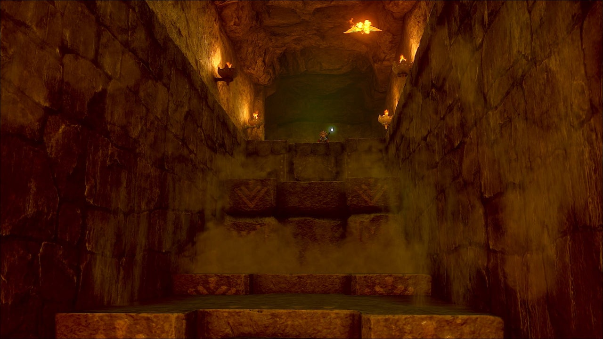
The Megaton Hammer smashes statues and rusty switches.
GORON 8
- Look north for a big raised button over a grate. Hit it with your Megaton Hammer! The floor breaks open. Jump down.
- A big statue made of pieces blocks the next door. Swing your Hammer to the side. Smash it to bits! Go through.
- Hit the button in the next room. Platforms drop down. You are back on floor 3, in the middle of the big boulder room. Smash the big gray rocks with your Hammer to get into the area above the prison.
- Play the Song of Time in front of the blue block here. It opens a hole down to a switch. Hit the switch with your Megaton Hammer! Goron 8 is free! He leaves a small chest with Small Key 8. His tip: remember the big statue in the entry hall.
GORON 9 AND THE BOSS KEY
- Near where Goron 8 was locked up, there is a big panel on the wall. Hit it with your Megaton Hammer! The pillar falls down. You drop all the way to floor 1, right in front of the boss door.
- Go back to the entry hall. Smash the big statue with your Hammer! A locked door hides behind it. Use Small Key 8 on it.
- Smash all the Lava Slugs in the next room with your Hammer. The Hammer sends them flying and puts their fire out! The far door opens.
- The next room has Flying Tiles and a Like Like. Block the tiles with your shield first. Then stun the Like Like with your Hookshot and slash it. Or throw bombs at it from far away.
- Look for the big gray rock at the end of the room. Smash it with your Hammer! A Gold Skulltula hides behind it. That is Skulltula 5 of 5.
- Smash the big statue blocking the next door. A second Flare Dancer attacks! Pull it out of the fire with your Hookshot. Then slam it with your Megaton Hammer. The Hammer stuns it so you get free hits!
- This dancer is tougher. When it jumps back in the fire, green flames bounce around. There are more of them this time. Be careful. Do not chase it when the flames are near.
- Beat the second Flare Dancer. A small chest pops up with a Red Rupee. Go south.
- Here is the last Goron! He has been guarding a big blue chest since the very start. Step on the switch to free him. Goron 9 is free — all 9 Gorons are free! Open the big blue chest. It holds the Boss Key!
- Go back to the entry hall. Go east and cross the pillar you knocked down. Hookshot to the north side. Climb the high ledge. Pots hold hearts and magic. Catch the Fairy in a bottle if you have an empty one!
- Use your Boss Key on the boss door. Time to face the dragon!
Volvagia! Slam him with the Hammer when he pops up.
He is a giant fire dragon! He hides in the lava holes in the floor. Stand near a hole and wait. Some holes bubble first as a fake-out — do not fall for the first bubbles! When Volvagia pops up for real, run to him fast. Jump and slam him on the head with your Megaton Hammer! Then slash his head with your sword. He flies up and breathes fire across the room. Run sideways, away from the fire trail. Do not stand in the burning spots he leaves! Later he shakes the ceiling. Rocks rain down! Hold up your shield (ZL) and walk to the side and back. Block the rocks from the front. When he pops out of a hole again, slam him with the Hammer. Do it again and again until he is done!
• Skulltulas (5): (1) Back wall of the Like Like room past the Song of Time block. (2) Behind the cracked wall in the boulder room. (3) Top floor by the door, reached with Pierre the scarecrow (play the Scarecrow's Song). (4) On the inner wall around the pit in the top floor room. (5) Behind the gray rock in the Flying Tiles and Like Like room near the boss.
• Small Keys (8): One from each of the first 8 freed Gorons. The 9th Goron guards the Boss Key instead.
• Boss Key: Big blue chest next to the 9th Goron, behind the smashed statue in the entry hall.
• Grown-up Heart Pieces: Ride the bean plants you planted as a kid — #17 on Death Mountain Trail and #21 in the crater.
• After the temple: Smash the gray rocks in the crater to find a Great Fairy who gives you Double Magic (200 rupees), and meet Biggoron at the top of the mountain!
⭐ BONUS: THE ICE CAVERN
Goal: Get the Iron Boots so you can walk on the lake floor in the Water Temple!
- Go to Zora's Domain. It is all frozen now! No water flows. The Zora Shop is frozen shut. The Zora are gone — frozen under the ice! Only King Zora is left, and he is stuck in a block of glowing red ice. Normal fire can not melt it. You need Blue Fire, and that is inside the Ice Cavern.
- Bring an empty bottle! Two empty bottles is even better. You will carry Blue Fire in them.
- Walk past King Zora up to Zora's Fountain. Lord Jabu-Jabu is gone. Icebergs cover the lake. A winding ice bridge curves up to the north. Walk it with care. It is slippery! Octoroks shoot rocks at you. Block them with your shield.
- On the ice bridge, look east. Small ice platforms lead across the water. Jump across them with care. On the far side is Heart Piece #27 on a big platform!
- Enter the Ice Cavern. The whole cave is ice. Go slow! Sharp icicles fall from the roof when you walk under them. If you walk slow, they crash down far ahead of you.
- Up ahead are chunks of red ice. Remember where they are. You will melt them soon! At the end of the hall is a big icy room with spike traps bouncing on the floor and 3 Freezards.
- Freezards are ice monsters. They slide toward you, then breathe freezing air. When they breathe, they can not turn! Stand to the side so they miss. They are weak to the Hookshot and to Din's Fire. Trick: stand so a spike trap is between you and a Freezard. Its freeze breath freezes the trap solid!
- Beat all 3 Freezards. A gate opens. Walk up the next hall. Watch for falling icicles again.
- Next room: a big spinning scythe trap made of ice blades! A gate at the far end needs 5 Silver Rupees. They are all over the room.
- Drop down the ledge. Run left. Slash the icy stalagmites on the ground. A Silver Rupee hides behind them! That is 1.
- The next 3 Silver Rupees are around the spinning scythe. Run counter-clockwise around it. Do not jump at the blades. Do not jump at the middle. Run past the blades, then move away to line up your next dash. Grab all 3.
- Climb the ledges on the north side. Look for the 5th Silver Rupee off the ledge. Wait until a blade passes, then jump back south to grab it. The gate opens!
- Before you go through, look up. You face south now. High on the wall above the stalagmites is a Gold Skulltula. Hit it with your Hookshot! That is Skulltula 1 of 3.
- Go north into the next room. It has a big ice sheet, stone platforms, Freezards, and Ice Keese flying above. Ice Keese freeze you if they hit you! Shoot them down with your Bow first.
- Hookshot the Freezard on the high platform. Jump north across the ice. Find a strange icy block backed by red ice. Slash the stalagmite. Blue Fire bursts out and melts the red ice! Little blue flames dance around. Fill your empty bottle with Blue Fire!
- Fill a second bottle too if you have one. Melt the red ice on a low platform to the south-east. A Blue Rupee hides in a pot there. Then go up the high path to the north-west.
- Hookshot or dodge past the Freezard guarding more red ice. Melt it with Blue Fire. A big chest holds the Dungeon Map!
- Go back to the scythe room. Head left (east) and melt the red ice blocking the hall. This path has spike traps and a Freezard. Go to the end.
- Three small alcoves! The north one has red ice. Melt it. Pots with rupees hide inside. There is also a Fairy's Thought here. Play the Sun's Song and a fairy heals you! The south alcove has a Blue Fire font. Fill your bottles again. The east alcove has stalagmites. Slash them. Watch out for Keese! A big chest holds the Compass.
- Turn around from the Compass chest. Do not run back yet! Behind a low icy column on the north side hides a Gold Skulltula. Hookshot it! That is Skulltula 2 of 3.
- Fill at least 3 bottles with Blue Fire if you can. Go back to the scythe room. Walk back toward the door. Melt the red ice chunks you passed at the start. Two chunks by the first Freezard fight hide pots with a Red Rupee and a fairy. The farthest chunk hides a pot with a Magic Jar.
- Now melt the red ice on the west path from the scythe room. Cross a small gap into a big room full of blocks and pillars. 5 more Silver Rupees hide here. Some are too high to reach. But there is a short ice block you can push!
- Shoot the Ice Keese first. Then push the ice block west. It slides until it hits a tall pillar. Climb up and grab Silver Rupee 1.
- Push the block north. It stops under a ledge full of red ice. Climb up. Melt the red ice. Silver Rupee 2!
- Push the block to the side so it slides into a pit. A new block pops back at the start. Push it south to reach a tall pillar. Climb up for Silver Rupee 3.
- Push the block west again. It hits one more tall pillar. Silver Rupee 4 is on top. Silver Rupee 5 is on a low platform just to the right.
- Look around this room. There is a Blue Fire font in the west corner. In the north-west corner is a ledge with a Triforce mark. Push the block north, west, south, then west again. It lands under the Blue Fire font. Climb up and fill a bottle!
- Play the Song of Time at the Triforce mark. Blue blocks appear! Walk across them to the north-west ledge. Open the small chest for a Red Rupee.
- To reach the gate, reset the block into a pit. Push the new block south, west, north, east, then south. Climb up and go down the south hall.
- Beat the Freezards. Melt the last red ice blocking the door. If you are out of Blue Fire, there is one more font in a high alcove to the east.
- Last room! The mini-boss: White Wolfos. He is a big white wolf. His claws freeze you! Keep your shield up. Wait for him to swing twice. He swings wild and spins around. His back is open! Hit his back with your sword. Then back away and wait for the next swing. Be patient. He falls!
- Open the chest. The Iron Boots are yours! Put them on with D-pad Down. They make you sink to the bottom of lakes. You walk slow, but you can stand firm in wind and on shaky ground too.
- Sheik appears! Sheik tells you Ruto went on to the Water Temple. Sheik teaches you the Serenade of Water. It warps you to Lake Hylia!
- Before you leave, grab one more bottle of Blue Fire. Jump down into the pool at the south end. Walk out the tunnel with your Iron Boots on. You are back at Zora's Fountain!
- Go back into Zora's Domain. Walk up to King Zora. Pour Blue Fire on his red ice. It melts! He is free! He thanks you and gives you the Zora Tunic. It lets you breathe under water as long as you wear it. Now you are ready for the Water Temple!
- Try your new gear! Put on the Iron Boots AND the Zora Tunic. Walk into the big pool at Zora's Fountain. Sink to the bottom. There is a ring of shiny rupees around Heart Piece #28!
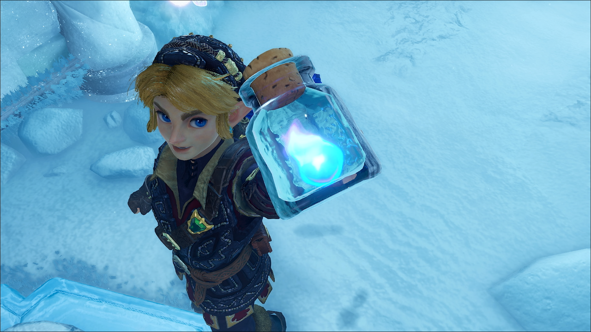
Blue Fire! Carry it in a bottle to melt red ice.
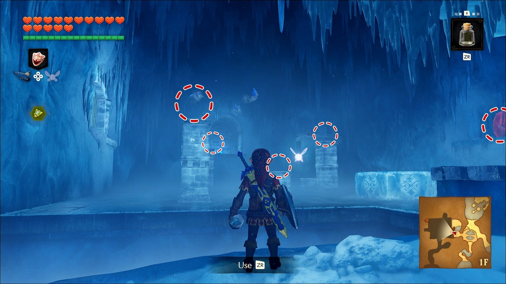
The Iron Boots are in this room.
• Skulltulas: 3 in the Ice Cavern — the scythe room high wall, behind the low icy column by the Compass chest, and the high wall across the gap in the ice block room.
• Heart Pieces #27 and #28: #27 is on the ice platforms on the way to the cave. #28 is at the bottom of Zora's Fountain — wear the Iron Boots and the Zora Tunic!
10. WATER TEMPLE

The hardest temple in the game — take your time!
Goal: Wake Ruto, the Sage of Water. This is the hardest temple — take your time!
Before you go in, you need the Iron Boots and the Zora Tunic from the Ice Cavern chapter just before this one! The Iron Boots let you walk on the lake floor. The Zora Tunic lets you breathe under water.
THE WATER LEVELS
The water in this temple sits at one of three heights: low (floor 1), middle (floor 2), or high (floor 3). Each height opens new doors and floods others. To change the water, find a wall with the royal Triforce mark and play Zelda's Lullaby there.
New in the remake: press down on the D-pad to swap your Iron Boots on and off fast. Boots on = you sink and walk on the floor. Boots off = you swim and float up. You will swap them a lot!
Your map shows which floors are under water. Once you have the Compass, the map also marks the spots where you can change the water level!
GETTING THE DUNGEON MAP
- Play the Serenade of Water to warp to Lake Hylia. Put on your Iron Boots to walk on the lake floor. Hookshot the target in the dry lake bed to open the temple door. Go in!
- Take off your Iron Boots and swim up to the platform above. You are in the big main room. A tall tower stands in the middle. The water is all the way up to the top floor (floor 3).
- Swim to the tower. Most doors here are too far to reach. Look east. A gate blocks a chest and a wall with a royal mark. Put on your Iron Boots and sink all the way down to floor 1.
- Watch out for Spikes (rolling balls with metal spikes). Hold up your shield! Their spikes bounce off your shield. Then hit them with your Hookshot.
- Find a doorway with two glowing blue pillars. Above it is a picture of three floors with only the bottom one lit up. That means this room changes the water level. Go in!
- Princess Ruto is here! She is looking for the monster in this temple too. She swims off and leaves it to you.
- Take off your Iron Boots. Float up to the top floor. A big chest holds the Dungeon Map! You saw it behind the bars from the main room.
- Look at the wall nearby. It has the royal Triforce mark. Play Zelda's Lullaby. The water drops all the way down to floor 1!
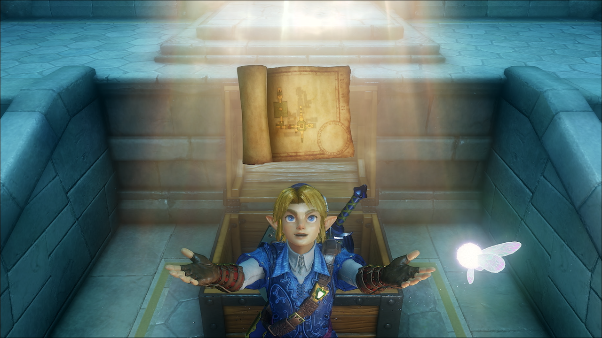
The Dungeon Map is in this chest.
GETTING THE COMPASS
- With the water low, hop down into the small pool on floor 1. You see two unlit torches and one lit torch. Shoot an arrow through the lit torch flame to light the other two torches. Or use Din's Fire! The sealed door to the east opens.
- Go in. The door locks! Three Spikes attack. Block their spikes with your shield. Slash them when they pull their spikes back in. Beat all three. A small chest pops up with Small Key 1.
- Look for a cracked wall on the south side of the tower. Blow it up with a bomb! Go down the path to the west. Put on your Iron Boots and sink to floor B1 (the basement).
- A Shell Blade (an angry clam) attacks. Block its charge with your shield. Wait for the clam to open wide. Then hit its soft inside with your Hookshot!
- Swim up past the Shell Blade. Climb some steps to a switch. Hit it to raise a statue with a Hookshot target. Hookshot across the gap.
- A Like Like waits above! Shoot it with your Bow from far away. Do NOT let it eat you. If it eats your Zora Tunic, you cannot buy a new one — the Zora shop is closed! If it does eat you, kill it fast to get your stuff back.
- Beat the Like Like. A big chest pops up. Open it for the Compass!
RAISING THE WATER TO 2F (MIDDLE)
- Go back to the main room with the tower. Go west of the tower. Push the big stone block forward until it falls into the pool below.
- Put on your Iron Boots and drop in after it. Beat another Shell Blade. Swim up to the opening to the north. A small chest sits on a high ledge. You cannot reach it yet. Remember it!
- Jump in the water. A big whirlpool spins you around! Sink down with your Iron Boots. Land on the narrow snake-like platform next to a snake statue. The snake's mouth holds a switch. Hit it with your Hookshot. A gate under the water opens.
- Swap your boots on and off to float through the gate. Keep your boots on past the gate. Two more Shell Blades attack. Beat them. Swim up the far side. A platform holds a chest with Small Key 2!
- Now open the locked door with green pillars at the base of the tower. Go in. Look up. Hookshot to the target above. Ride up to a ledge with another Triforce mark. Play Zelda's Lullaby. The water rises to floor 2 (middle)!
RAISING THE WATER TO 3F (HIGH)
- With the water at middle level, a floating block inside the tower has risen up. It leaves a hole down to the basement. Put on your Iron Boots and sink to the bottom. Beat three Spikes.
- Hit the green switch above you with your Hookshot. A gate opens on a low ceiling. A Shell Blade drops down. Beat it. Swim up through the gate to a small underwater room. A small chest holds a Red Rupee.
- Look around the walls of this little room. A Gold Skulltula hides here! Hit it with your Hookshot. That is Skulltula 1 of 5.
- Swim back up the tower and out. (A spider hides in the tower too. You cannot reach it yet. Come back later with the Longshot!)
- Swim east to where you met Ruto. Sink to the bottom with your Iron Boots. Halfway up the wall is a cracked wall, now high and dry. Plant a bomb on the ledge. It blows open!
- Go in. Beat the Shell Blades with your sword. Look at the wall behind you. A Gold Skulltula hides there! That is Skulltula 2 of 5.
- Swim back up to the water line east of the tower. Find another alcove with a cracked wall. Bomb it open. Go northeast. Put on your Iron Boots and sink down. Stingers (flying fish) swarm you under water. Block their dives with your shield. Then hit them with your Hookshot.
- Take off your boots at the far end. A big geyser shoots up to an alcove. Hit the switch in the small pool with your Hookshot to lower the geyser. Step on it. Hit the switch again to ride up! The alcove holds a small chest with Small Key 3.
- Swim to the west side of the tower. Floating blocks now line up to a locked door with red pillars. Go in. Another geyser blocks the way. Hit the switch to lower it. A Tektite drops down. Beat it. Stand on the platform. Hit the switch again to ride up to floor 3.
- You are in front of the last Triforce mark. Play Zelda's Lullaby. The water rises to floor 3 (high)!
DARK LINK AND THE LONGSHOT
- Hop down to the tower platform. Look back at the ledge you jumped from. See the straw up there? Play the Scarecrow's Song. Pierre pops up! Now you can Hookshot back up here fast any time you need to change the water.
- Go west to the second locked door on the floating platforms. Inside is a long room with a pit. Moving platforms on the far side slide toward the middle and sink. Beat the Keese first.
- Slide down to a moving platform. It goes up and down. Aim at the targets on the far platforms and Hookshot across. Move fast before they drop! Rest on the still platform to the side if you need a break. There is a Fairy's Thought here. It wants sunbeams to beat the wet air. Play the Sun's Song. Fairy magic heals you!
- Wait for the highest platform to come close. Hookshot to it. Then zip up to the ledge above to get out of the pit.
- The next room has high platforms over a pool full of Tektites. Shoot the Tektites with your Bow from far away first.
- Hit the blue switch in the middle. Statues rise up with Hookshot targets. Hookshot to the west one. Do NOT Hookshot the north statue next, or you will fall in the pit! Hit the switch again to lower the statue. Hookshot past it to the left.
- Hit the switch again to raise the statues. Hookshot to the northeast one. It leads to a high ledge. Hit the switch two more times to lower the statue. Jump on top of it. Ride it up! Break the pots for items. Go in the door.
- This room looks like a big shallow lake with one tree on a little island. Walk to the far side. The way is blocked. Turn around. A dark figure waits by the tree. It is YOU! Dark Link — a shadow copy of you!
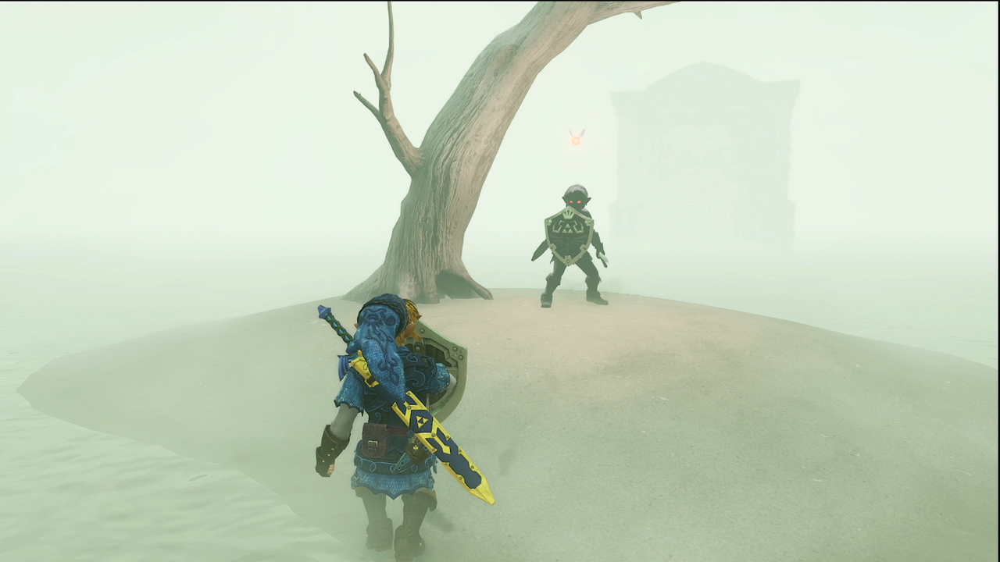
Dark Link! He copies your moves.
He copies your moves! He has his own Master Sword and shield. Do not just run at him. He blocks your sword and can even stand on your sword! Wait for him to attack. He swings three times. The last swing has a red trail. Dodge that last swing! Then he is open. Run in and hit him. Your Bow and Hookshot do not work well on him. Din's Fire works at the start — it hurts him and stuns him! But after he fades away and comes back, he gets smarter. He backflips away from slow attacks. Later he stabs twice, then jumps at you. Dodge to the side when he leaps! He may fake you out and wait before he jumps. He may also roll at you and spin. Backflip away from his spin! When he starts his spin, run in fast and jump-slash him. Keep hitting him after his big moves. When you deal enough damage, he is gone for good!
- After Dark Link falls, go through the door. Open the big chest. You get the Longshot! It reaches twice as far as your Hookshot.
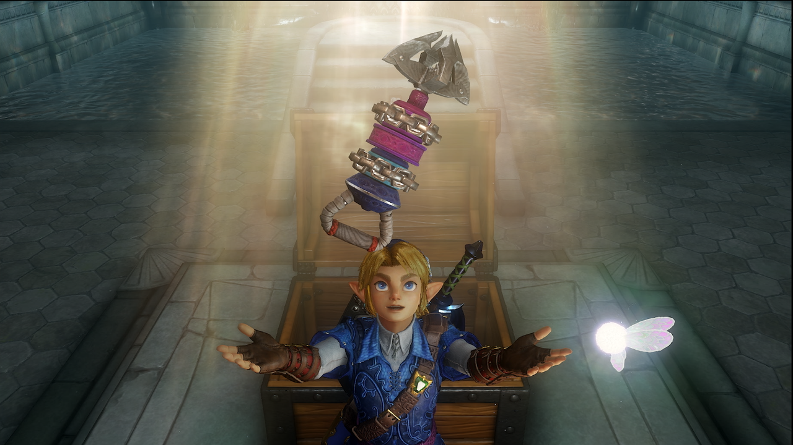
The Longshot reaches twice as far as the Hookshot.
GETTING THE BOSS KEY
- Step on the platform behind the chest. Try out your Longshot on the far targets above. Zip up to a high ledge. A waterfall pit leads down to a river cave. This cave goes all the way back to the temple entrance!
- Move along the river. Whirlpools suck you into pits! Wear your Iron Boots to hold your ground. Climb up on ledges to go around the pits.
- When the path turns south, look behind you. A Gold Skulltula sits high on a cave pillar. Hit it with your Longshot while you wear your Iron Boots. That is Skulltula 3 of 5.
- Go through the last two whirlpools. Walk through the middle to the southeast corner. Look for ledges after the whirlpool. A pot holds a Fairy! Catch it in a bottle if you have an empty one.
- Stay on the ledge. Find a big gate with an eye target. Shoot the eye. Longshot across fast before the gate closes! Go out to the main room.
- The water is still at high level. Sink to the bottom. Go back to where you met Ruto. Play Zelda's Lullaby at the Triforce mark to lower the water to floor 1 (low).
- Climb back inside the tower. Play Zelda's Lullaby to raise the water. Look up! With your Longshot you can reach a high target at the very top of the tower. Zip up to a high platform. A Gold Skulltula hides on the other side of the ceiling. That is Skulltula 4 of 5.
- With the water at middle level, go out on the tower balcony to the north side. Shoot the eye target on the far wall. It shows a far target your Longshot can reach. Zip across to the north room.
- You see a small chest behind a fence. Jump in the pool to the left. Sink with your Iron Boots. A big stone block sits in a small opening. Pull it all the way back.
- Get out of the pool. Look right of the fence. A high waterfall alcove has a target on the ceiling. Longshot to it! You drop down on the other side of the water. Push the stone block north. Now you can reach the chest. Open it for Small Key 4!
- Go back to the tower room. Sink all the way to the bottom on the north side. Drop down into a basement pit going north. Swim up to the ledge. Longshot across to the far door. Use Small Key 4 to open it.
- The big room past it has a pool full of Tektites. Boulders roll out of side alcoves and into two whirlpool pits. Shoot the Tektites with your Bow first!
- Wait for a boulder to pass. Sink with your Iron Boots. Take them off to cross a ledge. Put them back on. Stop before the next boulder path. Wait for the second boulder to pass. Swim up to the ledge. Dodge the whirlpools!
- The next room has a small pool full of Stingers and three cracked walls on the left. Throw bombs in the water to kill the Stingers. Block any that fly up with your shield.
- Bomb all three walls. The middle wall has a big stone block. The side walls let you push the block from behind. Push it into the pool onto a switch! The water rises up to a high ledge.
- Go through to the next room. Step on a switch to raise geyser platforms. Tektites may bother you. Shoot them with your Bow. Cross to the far side.
- You see a big blue chest behind a gate. Go through the door nearby. You are in the waterway where the boulders roll. Wait for a boulder to pass. Dash east, then north to an alcove with a door. A Shell Blade guards it. Beat it. Go in the next room. Open the chest. You get the Boss Key!
- On your way back through the boulder room, look up. A small waterfall comes from above. A Gold Skulltula hides up there, across from the falls. Hit it fast with your Longshot before the next boulder rolls by. That is Skulltula 5 of 5!
TO THE BOSS DOOR
- Go back to the tower room. Use Pierre the scarecrow to get up to the floor 3 ledge fast. Play Zelda's Lullaby to raise the water to floor 3 (high).
- Go to the north side of the tower. Use your Longshot on the far target to reach the high ledge. Walk toward the boss door.
- The road is a long slope with water rushing down. Spike traps bounce from side to side! Put on your Iron Boots to get a good grip. Walk up slow. Go around the spikes. At the top is the boss door. Use your Boss Key. Get ready!
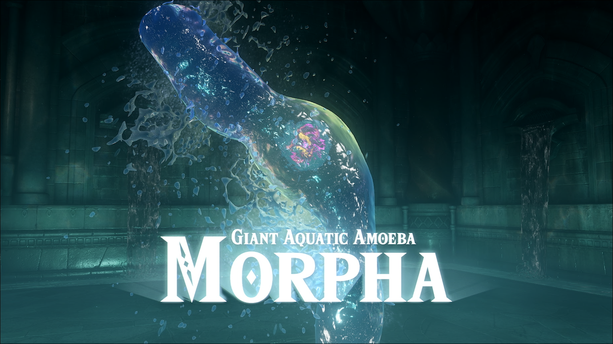
Morpha! Pull the little ball out with your Longshot.
She is a giant water blob! Her real body is a little ball hiding inside the goo. Stay on the platforms. Do not swim in the water — you cannot hurt her there. When she pops up, she slams down to crush you. She slams up to three times in a row! Move away fast each time. After her slams, she rests for a moment. Hit her with your Longshot! The Longshot pulls the little ball out of the water. Then slash the ball with your sword! When she gets hurt, she jumps back in the water and spins around in a big circle. Hookshot to a target on the wall to zip away to safety! If she grabs you, she wraps around you and hurts you a lot. Mash your buttons fast to break free! Later she makes lots of extra arms in the water. They all slam down too. Find the real one with the ball inside. Pull it out with your Longshot and slash it. Do it again and again until she is gone!
• Skulltulas (5): (1) Small underwater room in the basement below the tower. (2) Behind the cracked wall east of Ruto's room (Shell Blade room). (3) High on a pillar in the underground river cave after Dark Link. (4) At the very top of the tower, reached with the Longshot. (5) Above the waterfall in the rolling-boulder room near the Boss Key.
• Small Keys (4): The remake has 4 Small Keys, not 6 like the old game. (1) Torch room after lowering the water. (2) Whirlpool room with the snake statue. (3) Geyser room on the east side. (4) Behind the stone block in the north room, after the Longshot.
• Boss Key: In the room past the rolling-boulder waterway, guarded by a Shell Blade.
• After the boss: The ice melts and Lake Hylia fills back up! Go outside at sunrise. Aim your Bow at the rising sun and shoot. Light falls to the earth — the Fire Arrows land on a small island! Swim over and grab them. Then play the Sun's Song to make it night. Longshot the vines on top of the island tree. A Gold Skulltula hides up there!
• Grown-up Heart Pieces: #27 and #28 at Zora's Fountain (iceberg + underwater cave), #30 and #31 at Lake Hylia (lab diving with the Golden Scale + the bean tower).
⭐ BONUS: BOTTOM OF THE WELL
Goal: Get the Lens of Truth — it shows you things that are invisible! You need it for the Shadow Temple.
- First, as a grown-up, finish the Water Temple. Look across Hyrule Field. Smoke and fire rise over Kakariko Village! Ride Epona there fast!
- In the village, Sheik stands alone by the well. A creature of darkness bursts out! It knocks Link down and escapes into the Shadow Temple. When Link wakes up, Sheik tells the tale. Long ago, Impa sealed a dark beast under the well. It broke free. Impa went into the Shadow Temple to stop it.
- Sheik teaches you the Nocturne of Shadow. It warps you to the graveyard. Sheik warns you: the Shadow Temple is full of traps you can only see with the Eyes of Truth. But Sheik does not know where to find them.
- Try the Shadow Temple door yourself. It is sealed. A strange plaque stands in an empty room. You need the Lens first!
- Talk to the old man in the village. He tells you about a person who lived here long ago. That person had the "eyes of truth". Their house stood right where the well is now!
- Climb down into the well. At the bottom is a sealed door. There is also a tiny crawl space. It is too small for a grown-up. You must go back to being a kid!
- Before you leave, grab a treat. Hookshot onto the vines on the low roof of Granny's Potion Shop. Look up at the windmill. There is a high opening with a ladder. Use the Longshot to zip to the ladder. Climb to the top of the windmill. A chest holds a Purple Rupee worth 50!
- Warp to the Temple of Time with the Prelude of Light. Put the Master Sword back in its stone. You are a kid again!
- Go to the windmill in Kakariko Village. The windmill man is still there. Remember his strange tune? He is mad because a boy played a weird song here 7 years ago. That boy was you!
- Take out your ocarina. The windmill man will repeat the song the boy played. Play it back. You learn the Song of Storms! It makes rain and wind. Now play it here in the windmill. The windmill spins out of control! The well outside drains dry!
- Climb down into the Bottom of the Well. It is dark and creepy. Bring bombs, your Boomerang, and your Kokiri Sword. Watch out for the hands on the floor — they grab you!
- Walk down a few halls. Skulltulas guard the way. At the end is a blank wall with a plaque. It says: "A wall is not merely a wall. Do not accept only what you see as truth." Walk straight into the wall. It is fake! You pass right through.
- You are in the main room. Four long halls form a square around a big closed room in the middle. A Green Bubble flies around the halls, counter-clockwise. Its green flames hurt you. But when it turns a corner, the flames go out for a moment! Run up from behind and hit it. Do this a few times to beat it for good.
- Watch out for hidden pits in the floor! Some floors are fake. If you fall in, you drop to the basement floor below, called B2. It is full of water and Redeads! Play the Sun's Song to freeze the Redeads, then beat them.
- In B2, you can not leave until you find 5 Silver Rupees. Here they are: 2 across the thin plants floating in the green ooze (the ooze hurts, so step with care). 1 in a pool of water to the north-west. 1 on a dry path in front of some boulders to the north. 1 past the boulders in the south-east corner — bomb the boulders to reach it! A Redead guards a chest there with the Dungeon Map inside.
- With the map and a way out, climb the ladder back up to the west side. Go to the north side of the main halls. You will see fountain heads feeding the water. In front of the biggest one is a Triforce mark.
- Stand on the Triforce mark and play Zelda's Lullaby. The fountains stop! The water in the halls drops. A new area opens to the north. Crawl through the tunnel.
- Beat the Skulltula in the hall. At the end is a small chest. But before you reach it, you fall into a pit! You drop into a new part of the basement. The boss of this mini-dungeon waits here: Dead Hand.
- Dead Hand is gross and scary. Long hands pop out of the ground. If one grabs you, it holds you tight. Mash the buttons to break free! Then Dead Hand's head pops up to bite you. That is your chance! Slash his face with your sword. He takes damage ONLY in the face.
- After a few hits, Dead Hand burrows away. More hands pop up all over the room. More hands means more chances to lure him out — but they also grab you more. Trick: you do not have to get grabbed! Cut all the hands with your sword, or hit lots of hands at once with a bomb or Din's Fire. That lures him out too!
- Keep luring him out. Wait until he lowers his head. Slash his face. Or blast him with Din's Fire. Soon he falls! In his place is a chest. Open it. The Lens of Truth is yours!
- Put the Lens on with D-pad Up, like a mask. Now you can see the unseen! Fake walls fade away. Hidden pits show up. Invisible chests and bad guys appear! But the Lens slowly uses your magic. Do not leave it on all the time.
- Try it out! Look at the south edge of the pit. A hidden ladder appears. Climb up. This hall has secret alcoves the Lens shows you. Pots hide inside. The path ends on a secret ledge above the hall you came in by.
- Look around on the mesh platform with the Lens on. A small chest hides there with a Purple Rupee! Then go back to the small chest that lured you into Dead Hand's pit. With the Lens on, jump over the pit. Open it for a Business Scrub Seed.
- Go back to the four halls. Use the Lens to find a new opening into the big closed room in the middle. Inside, the Lens shows many pits — even around the torture rack in the center and in the two cells on the south side. A big gap blocks the big chest.
- Grab the small chest with a Blue Rupee (a Skulltula guards it). Then look behind the big chest to the west. The Lens shows an opening! Go back out to the west hall. Jump across from the mesh platforms. You find the Compass!
- Now hunt the rest. In the south-west corner, a hidden ledge leads to a Deku Business Scrub. He sells Green Potions (good for long Lens use!) once you beat him up.
- In the north-west alcove, beat the Skulltula. Use the Lens to dodge the pits. A small chest holds a Red Rupee.
- In the north-east corner, use the Lens near the plaque to dodge pits by the east door. Inside are Fire Keese and a Beamos. A small chest in the corner holds bombs. Watch the floor — pits everywhere!
- Go south into the next room. A Like Like waits in the bright room. It is a tall sack monster. If it grabs you, it eats your Deku Shield! Keep your distance. Stun it with your Boomerang first. Then run in, slash it, and back off fast. Repeat until it falls. If it eats your shield, beat it and pick your shield back up.
- After the Like Like falls, look up on the wall between the two torches. A Gold Skulltula hides there! That is Skulltula 1 of 3.
- Leave by the ladder back to the east hall. Drop down into the dry waterways under the grating. A small chest holds a Blue Rupee. Walk the south hall. Find a small drain hole on the south-west side. Crawl through it for another chest with a Blue Rupee.
- Climb back up. Go to the east side of the south hall. Look north with the Lens on. Left of the door to the middle room is a small opening in the wall. Jump across to it. A small chest holds a Red Rupee.
- Go to the south-east corner. Use the Lens to look at the middle room. Jump through the opening. A small chest holds the first Small Key.
- Jump back into the middle room. Open the locked door in the north-east corner. It is a pit room with Keese flying around. The Lens shows a path around the edge. Follow it to the second Gold Skulltula!
- For the second key, go to the west side of the dungeon. Jump across the drained hall from the middle room. The water is low enough to dive down and swim to the other side. Climb the mesh walls.
- Last room! It is full of coffins covered in webs. Burn the webs with a Deku Stick or Din's Fire. Some coffins hide Keese and pots. Some hide Gibdos — mummies like strong Redeads. Burn them with Din's Fire! One coffin has a Fairy's Thought. Play the Song of Storms to get healed.
- Burn the lone coffin on the east side. Inside is the second Small Key!
- Go back to the middle room. Open the locked door in the north-west corner. A Deku Baba guards a small room. In the corner is the third and last Gold Skulltula!
- You are done! Before you grow up again, use your Lens for one sweet prize. Go to Hyrule Castle Town at night. Play the Treasure Box Shop game. It costs 10 rupees. Each room has 2 chests. Wear the Lens! You can see what is inside each chest. Pick the Small Key chest every time. Win all 5 rooms to reach the prize room. The chest there holds Heart Piece #6!
- When you are ready, take the Master Sword again to grow up. Warp to Kakariko Graveyard. The Shadow Temple waits!
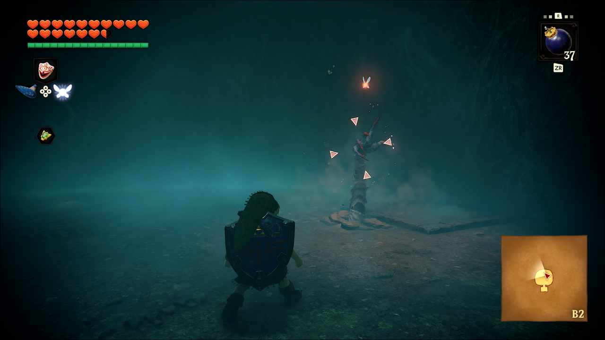
Dead Hand! Hit his face when it pops up.
• Skulltulas: 3 in the Bottom of the Well — the Like Like room wall, the north-east locked room edge path, and the north-west locked room corner. The last two need the Lens of Truth!
• Heart Piece #6: Win the Treasure Box Shop in Castle Town with your new Lens (10 rupees, pick the key chest in all 5 rooms).
• Watch out: Like Likes eat your Deku Shield! Stun them with the Boomerang first, and always grab your shield back after the fight.
11. SHADOW TEMPLE

Spooky! Full of fake walls and hidden rooms.
Goal: Wake Impa, the Sage of Shadow. This temple is spooky and full of fake walls!
Before you go in, you need the Lens of Truth from the Bottom of the Well chapter just before this one! The Lens shows you things that are not really there. Put it on a lot in this temple.
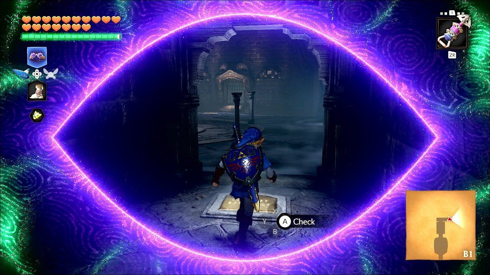
The Lens of Truth shows you walls that are not really there.
GETTING IN
- Go to the graveyard in Kakariko. Play Zelda's Lullaby at the big tomb to open the Shadow Temple. Sheik teaches you the Nocturne of Shadow before you go in.
- The first room has a sign: "Those who lack the eyes of truth are not granted the way forward." Put on your Lens of Truth! You see a ring of unlit torches that were not there before.
- Stand in the middle of the room. Use Din's Fire. All the torches light up at once! The sealed door opens.
- Go through the hall. Flying Pots zoom at you! Hold up your shield. They smash into it and break. Turn the corner. A big gap blocks the way. Use your Longshot to cross to the far side.
- A sign on the wall says: "Without the eyes of truth, there is no path." Put on your Lens of Truth. The wall is fake! Walk right through the creepy face into the room past it.
- More creepy face walls are here. A big bird statue stands in the middle. It has a handhold. A sign says: "The tip of my beak seeks the skull of truth. Should it find falsehood, darkness shall fall."
- Look at the small columns with skulls around the statue. Put on your Lens of Truth. All but one skull column goes away! Only one is real — the skull of truth. Push the bird statue around until its beak points to the northwest, at the real skull. The door to the east opens!
- At the end of the room is a big pit. The door is too far to reach. A sign says: "The valley of dead can only be crossed with footsteps as light as a feather." You need new boots to cross. You do not have them yet. Turn back for now.
GETTING THE HOVER BOOTS AND THE DUNGEON MAP
- Go back to where the skull of truth was. A hidden doorway hides behind it on the northwest wall. Your Lens shows it. Go through!
- You are in a room full of skulls. A black skull on the north wall hides another secret door. Put on your Lens. Go through the hidden door.
- The door locks behind you! A ReDead (a scary zombie) and some Keese attack. Play the Sun's Song to stun the ReDead! Or run behind it and slash its back so it cannot hit you with its scary scream. Beat them all. A big chest pops up with the Dungeon Map!
- The map shows hidden rooms you would miss without the Lens. Go west to a room just like the first skull room. A hidden opening hides on the west wall. Go through it.
- More Flying Pots attack in the next small room. A Wallmaster may drop from above too! Watch the floor. When the shadow grows and the light turns red, dash away. Then slash the hand before it floats off.
- Find the hidden exit in the northwest corner, heading west. Go down a long hall. The floor drops out from under you! Climb up the other side on the mesh wall.
- In the next room, an old foe waits: Dead Hand is back! He hides under the floor. His hands grab you. Let one hand grab you. Dead Hand pops up and walks toward you. Break free! Then slash him before he runs away.
- Do not run at him too fast. Other hands can grab you and leave you open. Your grown-up sword hurts him a lot. It will not take long. When he falls, a big chest pops up. Open it. You get the Hover Boots!
- Hover Boots let you float in the air for a short time when you walk off a ledge. They are the opposite of the Iron Boots! Press down on the D-pad to swap them on and off. They make you slide around like you are on ice. Take them off when you fight or walk normally.
- Try them out! Run back through the hall with the falling floor. The Hover Boots carry you right across!
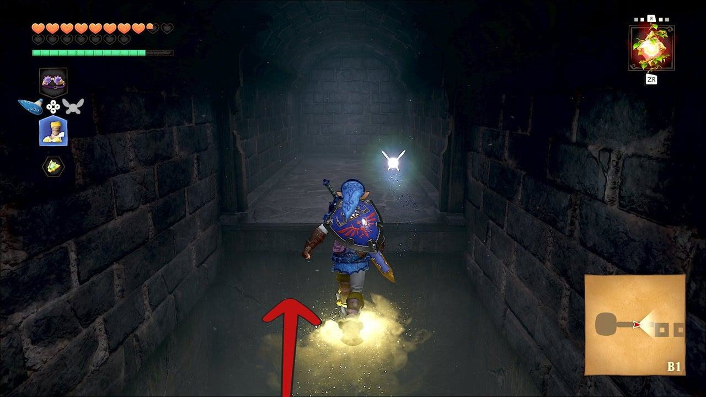
The Hover Boots let you walk on air for a short time.
GETTING THE COMPASS
- Go back to the bird statue room. Make sure the beak points northwest at the real skull. Put on your Hover Boots. Run across the pit to the creepy tongue platform on the far side!
- The next room has a Beamos (a statue that shoots lasers). Throw a bomb at it! A big cracked wall sits on the far side. Bomb that too!
- A locked door waits past it. Your map shows rooms to the north and south. Put on your Lens of Truth. Both walls are fake! Go south first.
- The door locks behind you! Two Gibdos (tough mummies) attack. They are like ReDeads but stronger. Use Din's Fire to burn both at once! Keep your distance so they cannot grab you and steal your life. Beat both of them. A big chest pops up with the Compass!
- Now go north. A big room has two tall statues that spin huge scythes around the room. Five Silver Rupees sit around the room. You must grab all five!
- Follow a scythe as it passes. Grab the first Silver Rupee. Race to the northeast side. Jump up on the thin wooden wall to grab the second one while the scythes pass below you.
- Jump to the alcove in the north for the third Silver Rupee. A sign here says: "Approach if you seek the ferry to the afterlife." Step forward. You fall down a hole you cannot see to floor B4! You see a big skeleton ship, but you cannot go on from here. Climb back up.
- Dash between the scythes to another wooden wall. Look for the fourth Silver Rupee on a high ledge. Longshot to the target up there to grab it.
- Time your jump down to the west alcove for the last Silver Rupee. All five are yours! A room opens on the other side with Small Key 1 inside. Grab it, but watch the scythes on your way over.
- Use Small Key 1 on the locked door back in the room where the Beamos was. Go down a long twisty hall. Look up! Drool drips from above. Skulltulas wait up there to drop on you. Hit them before they drop!
- Near the end of the hall, drop down. Guillotines (big falling blades) fall from above. Dodge them and the Skulltulas. At the end, ride the lift down to floor B3.
EXPLORING FLOOR B3
- You are in a big cave room with platforms over a deep pit. Time your jumps past the falling guillotines. Follow the road south to the first big platform.
- A Stalfos jumps out at you! There is not much room. Do not dodge into the pit! Let him swing first. Dodge around his wide swings. Then slash him.
- After he falls, you have two ways to go. East looks like a gap too big even for Hover Boots. Put on your Lens of Truth! An invisible platform floats halfway across. Put on your Hover Boots and float across it to the door.
- Before you go in the door, look in the small alcove to the north. A Business Scrub hides there! He sells magic and supplies if you are low. The Lens uses a lot of magic, so stock up if you need to.
- Go in the east room. It looks empty. Put on your Lens! A giant invisible spinning scythe trap spins in the middle. The far door is locked until you beat all the bad guys: some Fire Keese and a Like Like on the far side.
- Shoot the Keese with arrows first. Then dash through as the scythe passes. Run fast past the Like Like! If you stop, it will eat you and steal your shield. If it eats you, stun it with your Longshot and slash it to get your shield back.
- When all the bad guys are gone, the east door opens. Inside are two small chests with a Red Rupee in each. One chest is invisible — use your Lens to find it! A Gold Skulltula hides on the far wall. That is Skulltula 1 of 5.
- Go back to the big cave room. Take the west path to three big platforms that go up and down. Wait for each one to reach the top before you step on the next one.
- On the third platform, look down. A Beamos sits below with two spinning spike traps. Five more Silver Rupees are down there! Grab the first one from the platform. You can float into it with your Hover Boots when the platform is high up.
- Land below. Throw a bomb at the Beamos. Climb the scaffolding to the south. Use your Hover Boots to cross the gap for the second Silver Rupee. Jump back down as a spike trap passes to grab the third one.
- Walk through the spinning spikes with care. Grab the fourth Silver Rupee just past the sealed door. Walk to the north edge. Two rat statues stand there with chains between them. The last Silver Rupee floats in the air — but it is really on an invisible platform! Put on your Lens to see it. Grab it. The door opens!
- Go through the door to the west. Two big spike traps rise up and fall down. A sign says: "Only one with eyes of truth can find the stone umbrella that shields against a rain of blades." Put on your Lens! A hidden hole sits to the right of the traps. Inside is a big stone block.
- Pull the block all the way out until it drops into a small hole. Then push it from behind. Push it a little at a time under the falling spikes. The block shields you like an umbrella! Keep pushing until you and the block are past the second spike trap. Climb up on the block to the ledge above.
- Look on the south side. A small hole in the wall hides a small chest with a Red Rupee. On the north side, a slow spike trap moves back and forth. Behind the bars there is a Fairy's Thought. It wants a gust of wind. Play the Song of Storms! Fairy magic heals you.
- Now ride the top of a falling spike trap to cross to the other side of the ledge. A second small chest holds Small Key 2!
- Look up at the northeast corner of the room. A Gold Skulltula sits on a high ledge. Ride the falling spike traps up like lifts to reach it! That is Skulltula 2 of 5.
- Go back to the room where you got the Silver Rupees. Go north to the two rat statues. Put on your Lens. A wooden platform below moves back and forth between the statues. Time your drop! Land on it. Go through the door with Small Key 2.
- The next room has more Silver Rupees and two ReDeads in the corners. Put on your Lens! Invisible spike traps cover the floor. Keep the Lens on while you fight. Stun the ReDeads with the Sun's Song so you do not dodge into a spike!
- Beat the ReDeads. Grab the first Silver Rupee in the middle. The second one floats high in the southwest corner. Longshot to the hidden target above it. Do the same for the third one in the northeast. The last one is in the northwest corner on a high invisible ledge. Longshot up, then jump off the side to grab it. The west door opens!
- The next room has Fire Keese flying over a big black skull cauldron. A sign says: "A dark orb must be cast into the black skull." You have a dark orb: a bomb! Beat the Keese first. Climb to the top floor. More Keese hide in the walls. Throw a bomb into the cauldron. It blows up and shows a new Small Key 3!
- Go back to the last room. Longshot up to the northwest platform. Use your Hover Boots to run across to the other ledge on the north. Open the locked door with Small Key 3.
- The next hall has big fans that blow you backward! Put on your Iron Boots to stand your ground. Walk slow past the spike traps. Go up.
- After the second fan, a third fan sits across a big gap. Wait for a break between gusts. Run across fast with your Hover Boots! Then swap back to your Iron Boots fast so the wind does not blow you back. Look back the way you came. A Gold Skulltula hides just below the ledge! That is Skulltula 3 of 5.
- Drop into the lower hall. Pits sit on both sides. More fans blow you around. Keep your Iron Boots on. Check the alcoves on the left and right. Use your Longshot to break the pots and grab what is inside.
- Go through the far door. Two more ReDeads wait. Stun them both at once with the Sun's Song. Then hit them with a full spin attack! A sign behind them says: "Lighten your steps and seek the hidden path of the wind." Put on your Lens. A small chest hides in the corner. It holds a Business Scrub Seed! Go back to the last hall.
- Two of the fans blow into alcoves with pots. One fan blows at nothing at all — until you put on your Lens! A hidden path floats there. Put on your Hover Boots. Wait for the fan to blow. Run with the wind! It boosts you all the way across the gap.
- The next room has two Gibdos between moving spike traps. Stun them with the Sun's Song to make it easier. Beat them both. A small chest pops up to the west. It holds only one Green Rupee! Look at the east wall instead. It is cracked. Bomb it! Behind it, your Lens shows an invisible chest with Small Key 4!
- Open the north door with Small Key 4. Go down into the deep part of the temple.
FINDING THE BOSS KEY IN B4
- Ride the lift down. You come out on a creepy dock. A big skeleton ship waits here. It is the same ship you saw when you fell down the hole in the scythe room! Pull the stone block to the left. It makes a shortcut back up to floor B2.
- Pull the block out until it reaches the far wooden platforms. Climb up onto the docks. Look back west, above the lift. A high ledge has straw on it! Play the Scarecrow's Song. Pierre pops up. Hookshot over to him. A Gold Skulltula hides up there! That is Skulltula 4 of 5.
- Step onto the creepy ship. Look for the Triforce mark on the deck. Play Zelda's Lullaby. The ship comes to life and starts to sail!
- A Stalfos jumps on the ship! There is not much room. Bait out his big swings. Dodge and slash him. A second Stalfos jumps on right after. Beat him fast!
- The ship reaches the far shore. It has no brakes! It slams into the wall and starts to sink. Jump off fast!
- On land, you see two giant bird statues. One has fallen over. The other one stands on a cracked base. Blow up the base with a bomb! The statue falls over and makes a bridge to the far side. But the way south leads to the boss room, and you still need one more key. Go west first.
- Burn the webs around the door with Din's Fire or a Fire Arrow. Go in. The room looks strange. Floormasters walk around, but they do not see you. When you run at one, you hit a wall you cannot see! Put on your Lens of Truth. The room is a maze of invisible walls!
- Keep your Lens on. Use it to see when you have a clear path to a Floormaster. Beat them all. Remember: when a Floormaster dies, three small hands pop out! Use Din's Fire or a fast spin attack to kill them all at once.
- There are three doors in the maze room. The north one is locked. Go south first. Keep your Lens on! An invisible Floormaster hides in the next room. Beat it and its little hands. A chest pops up with Small Key 5 — the last one!
- Before you use it, go through the west door. This room has three big black skull cauldrons. Throw a bomb into each one! One blows up and shows a pile of rupees — and the last Gold Skulltula in this temple! That is Skulltula 5 of 5.
- Now open the north door with Small Key 5. It is a trap! Big spiked walls close in from both sides! Do not panic. Look at the walls. They are covered in cobwebs. Cobwebs burn! Use Din's Fire to burn the walls away.
- Behind the walls sit two ReDeads. Each one guards a chest. One chest holds a big magic jar. The other chest is the big blue one. Open it. You get the Boss Key!
- Go back the way you came to the docks. Cross the bird statue you knocked down. Run up onto the other fallen statue. Look up above the west wall over the pit. A high ledge has straw on it! Play the Scarecrow's Song. Hookshot up to Pierre. Pots up there hold items. One pot holds a Fairy!
- When you are ready, go south. A giant pit sits between you and the boss door. Put on your Lens of Truth to see the invisible platforms. Put on your Hover Boots. Float across to the far side. Go down into the lair of the dark beast.
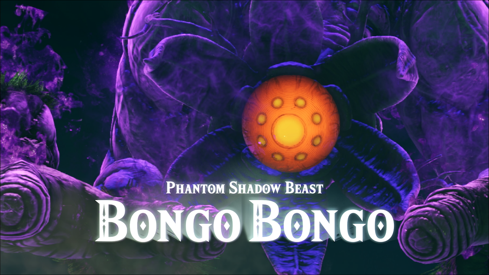
Bongo Bongo! You can only see him with the Lens of Truth.
He is a giant ghost with big hands and one big eye — and you can only see his body with the Lens of Truth! The room is a big drum. Each time he beats the drum, you bounce high in the air. Put on your Hover Boots! They keep you floating in place so you do not bounce. His hands are the first problem. Watch the shadows above you. When a hand slams down, roll away fast! After it slams, it stops glowing. Shoot it with your Bow or hit it with your Hookshot. Do both hands. Then his body shows up! Put on your Lens of Truth. His neck opens to show a big glowing eye. He slams his body down and charges at you. Shoot his eye with your Bow to stun him! Take off your Hover Boots and run in. Slash him a lot with your sword while he is down. Then put your Hover Boots back on for the next round. Later he sweeps a hand across the room like a backhand. It can knock you off the platform! If you fall in the poison goo, climb back fast on the small platforms. He may also slam both hands together to squash you. Strafe to the side while you shoot. In the last part, he grabs low at you or punches fast with one fist. Run sideways away from the punch! Then shoot the hand when it slams down. Stun his eye one last time. Run in and hit him with everything you have!
• Skulltulas (5): (1) Far wall of the room past the invisible scythe trap, east of floor B3. (2) High ledge in the falling-spike-trap room — ride the traps up like lifts. (3) Just below the ledge in the fan hall, after the third fan. (4) High ledge at the skeleton ship docks, with Pierre the scarecrow (play the Scarecrow's Song). (5) In the three-cauldron room — bomb all three cauldrons.
• Small Keys (5): (1) Scythe room, after all 5 Silver Rupees. (2) Chest on the ledge in the falling-spike-trap room. (3) Bomb the black skull cauldron. (4) Invisible chest behind the cracked wall in the Gibdo room. (5) Floormaster maze room, south door.
• Boss Key: Big blue chest in the spike-wall trap room — burn the cobweb walls with Din's Fire.
• Grown-up Heart Pieces: #9 (windmill, through Dampé's tunnel) and #14 (Dampé's race — Hookshot needed) in Kakariko, plus #13 (ride the graveyard bean plant you planted as a kid).
12. SPIRIT TEMPLE

A desert temple you explore as both a kid and a grown-up.
Goal: Wake Nabooru, the Sage of Spirit. You need BOTH Young Link and Adult Link for this one!
GETTING THERE
- First, you need the Gerudo Pass. Free the four carpenters locked up in Gerudo's Fortress. Then you can cross into the desert.
- Cross the Haunted Wasteland west of Gerudo Valley. Follow the flags! Use your Lens of Truth to see the invisible guide through the sandstorm. Follow the Poe to the Desert Colossus.
- Go to the Spirit Temple door as a grown-up. Sheik meets you outside and teaches you the Requiem of Spirit.
- Now go back to the Temple of Time. Put the Master Sword back in its stone. You turn back into a kid! Play the Requiem of Spirit to warp back to the desert.
- Before you go in as a kid, look left of the temple door. Soft dirt sits there. Drop a bug from a bottle on it. A Gold Skulltula pops out! Then plant a Magic Bean in the dirt. You will ride the big plant as a grown-up.
THE KID SIDE
- Go in as Young Link. Walk left up the stairs. Talk to Nabooru. She is locked out of her own temple! She asks you to go in the small hole in the wall and find the Silver Gauntlets for her. Crawl through the hole.
- Beat the bad guys in the next room. Go through the door on the right. Stand between the two braziers (the fire bowls). Light them both with Din's Fire. A chest pops up in the room across the hall!
- Before you go back, turn around. A Gold Skulltula hides on the wall! Hit it with your Boomerang. That is Skulltula 1 of 5 (kid).
- Go back to the main room. Go in the left room. A crystal switch sits behind a grate on the other side. Throw your Boomerang to the left so it curves around and hits the crystal. A bridge drops down!
- Go in the next room. An Anubis waits here. It copies your moves! Go west and hit the eye on the pillar. Then stand on the pillar. The Anubis copies you and stands on the pillar across from you. Fire burns it up! It burns itself to death.
- The next room has 5 crystals to grab. Two are on wall grates you can climb. Grab all five. Open the chest for Small Key 1. Go through the bridge.
- Crawl through the gap in the middle of the left and right rooms. Use Small Key 1 on the door with the climbable wall.
- Two Lizalfos attack in the next room. Beat them. Hit the crystal switch with your Slingshot. A chest pops up with 5 Bombchus! You need them next.
- Look right. A cracked wall sits high up where normal bombs cannot reach. Throw a Bombchu at it! The wall blows open. The door in the next room opens. Go in.
- A big statue stands here. A Gold Skulltula sits on the statue's right side! Hit it with your Boomerang. That is Skulltula 2 of 5 (kid).
- Use a Deku Stick on the lit brazier. Light the unlit torch with it. A chest pops up with the Dungeon Map!
- Go to the southwest side, up the stairs. A button sits on the floor. Push the statue onto the button! A room opens.
- Inside, grab 5 more crystals to open the next door. But first, look at the cube with a sun on it. Pull it into the beam of light on the floor! A chest pops out of a hole in the wall. It holds Small Key 2.
- Turn around after you get the key. A Gold Skulltula sits above the door! Hit it with your Boomerang. That is Skulltula 3 of 5 (kid).
- Go in the next room. An Iron Knuckle (a knight in heavy armor) attacks! He is slow but strong. Dodge his big axe swing. Hit him after he swings. Back off fast. When his armor falls off, he gets fast! Be ready to run and roll.
- Beat the Iron Knuckle. Go down the path outside. A chest sits on your left. Open it. You get the Silver Gauntlets! They let you lift big gray rocks — but only as a grown-up. Your kid arms are too small!
- Warp back to the Temple of Time. Pull the Master Sword out. You are a grown-up again! Play the Requiem of Spirit to warp back to the desert.
THE ADULT SIDE — GETTING THE COMPASS
- Go in as Adult Link. A big stone block stops the way. Use your Silver Gauntlets to push it out of the way! Hit the switch on the ceiling to open the doors.
- Go in the room on the left. Beat the Wolfos. Stand on the Triforce mark on the floor, facing north. Play Zelda's Lullaby. A chest pops up! Grab it with your Longshot. It holds the Compass!
THE ADULT SIDE — BOULDERS AND SMALL KEYS
- Go right from the Compass room. Rolling boulders roll down the hall! Grab the five crystals. They hide in the lower rooms on the left and right. A Gold Skulltula hides in the far-left room! Hit it with your Longshot. That is Skulltula 4 of 5 (grown-up).
- Play the Song of Time in front of the blue block to move it. It shows the last crystal. Grab it. A room opens. A Like Like waits inside! Stun it with your Longshot and slash it. Open the chest for Small Key 3.
- Go back to the room with the switch and the blade trap. Use Small Key 3 on the door. Climb up the wall to the next room.
- This room has mirrors and sun faces on the walls. Turn the light toward the sun on the east wall. A chest falls from the ceiling! Skip the next sun — it wakes a Wallmaster. Turn the light toward the sun on the south wall. The door opens! The last sun makes a fake chest. Skip it too.
- Go in the room with the big statue. Longshot to the statue's left wrist (on your right). You see a Triforce mark. Play Zelda's Lullaby. A chest pops up on the statue's right hand!
- Before you grab it, Longshot to the northeast corner of the room. Hit the pressure plate with your Megaton Hammer. A door opens.
- Drop down. Longshot to the statue's right wrist (on your left). Grab the chest. It holds Small Key 4.
- From this chest, play the Scarecrow's Song. Pierre pops up! Longshot to him. A Gold Skulltula sits on the floor up there. That is Skulltula 5 of 5 (grown-up).
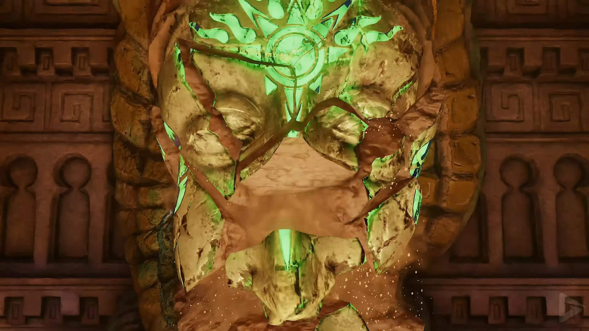
Bounce light onto the sun faces to open doors.
GETTING THE MIRROR SHIELD
- Drop down. Go through the door in front of the statue. Push the big stone block so it falls down. Follow the path. Push the next stone block down too. This makes a path back to the start.
- Go back to the statue room. Longshot up above the door in the southeast corner. Go upstairs. Use Small Key 4 on the door.
- Three Anubis and a Beamos wait in the next room! Play the Song of Time in front of the wall mark. A time block shows up. Step on the button in the northeast to light the fire pit.
- Now trick each Anubis onto the fire. Jump over the time block. Go to the northwest and southwest corners. Each Anubis copies you and walks into the fire! When all three burn up, the next door opens.
- The next room has a button on the floor. An Armos (a stone statue that comes alive) walks around. Trick it into standing on the button! The south door opens.
- Go through the door. Fight another Iron Knuckle! Dodge his axe. Hit him after he swings. When his armor falls off, he gets fast. Beat him!
- Go in the next room. Follow the path outside. Step on the button on the floor. A chest pops up with the Mirror Shield! It can bounce light and magic.
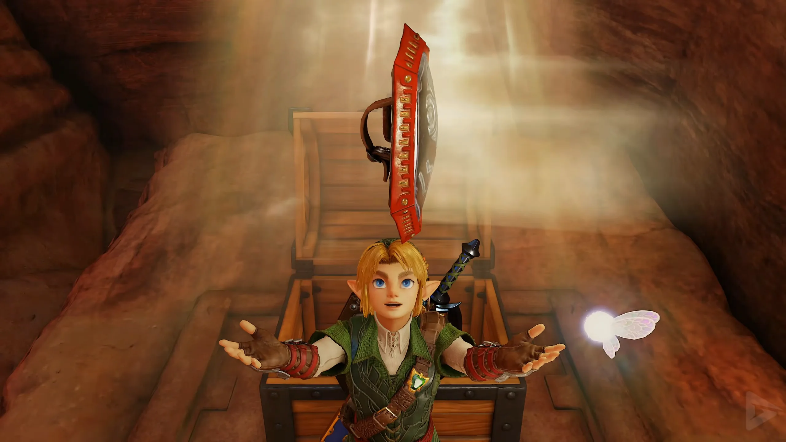
The Mirror Shield is in this chest.
GETTING THE BOSS KEY
- Go back to the north room on floor 3 where the sunlight shines in. Now you have the Mirror Shield! Stand in the light. Hold up your shield. Bounce the light onto the sun on the wall. The door opens! Go in. A chest holds Small Key 5.
- Take Small Key 5 to the locked door by the room where you fought the Anubis. Climb the wall. Use your Longshot to help you reach the top.
- In the next room, play Zelda's Lullaby on the Triforce mark to open the door. Beat the Torch Slugs inside with your Megaton Hammer.
- Break the door in the northwest corner with your Hammer. Find the glowing eye on the wall. Hit it! The wall falls down. A platform shows up. Longshot to the ceiling to reach it.
- Step on the button to turn off the fire around the chest. Longshot back over. Open the chest. You get the Boss Key!
- Go back to the last room and climb the wall. Go through the door. Drop down and hit the switch to open the door above.
- Bomb the rock wall. Use the light to turn the mirror to the last room. Aim the light at the other light device. Go in the next room. Aim the light at the bars. They open!
- Follow the light and drop down. Stand on the platform with the sun mark. Use your Mirror Shield to bounce the light onto the sun on the wall. A platform drops down in front of the statue's head. Bounce the light onto the statue's head! Its face falls off. The boss door shows up behind it!
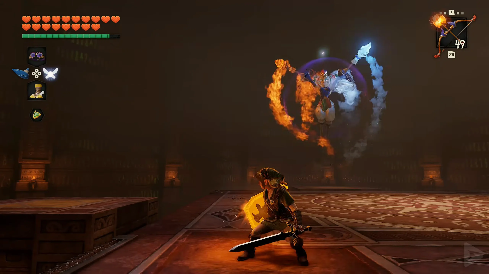
Twinrova! Catch her magic with your Mirror Shield.
Two twin witches — one shoots fire, one shoots ice! First, a third Iron Knuckle jumps out at you. Beat him first. Then the twins fly in. Hold up your Mirror Shield! When one twin shoots magic at you, the shield catches it. It bounces back at the OTHER twin. Fire hurts the ice twin. Ice hurts the fire twin. Keep bouncing their magic back at each other! After enough hits, they join into one big witch: Twinrova! Now she shoots fire and ice at you. Hold up your Mirror Shield and catch her magic. You must catch the SAME kind three times in a row! If you catch fire, fire, then ice, it does not count. Catch fire three times in a row (or ice three times in a row). Then she falls down! Run in and slash her with your sword as much as you can. Then do it all again. When she falls for the last time, slash her until she is gone!
• Skulltulas (5): Kid side (3): (1) On the wall in the right room after the Din's Fire braziers. (2) On the big statue's right side, past the Bombchu wall. (3) Above the door after the sun-cube Small Key. Grown-up side (2): (4) Far-left room in the rolling-boulder hall. (5) With Pierre the scarecrow in the big statue room (play the Scarecrow's Song).
• Small Keys (5): Kid: (1) Five-crystal room past the Anubis. (2) Sun-cube room. Grown-up: (3) Like Like room past the Song of Time block. (4) Chest on the statue's hand. (5) Sun room with the Mirror Shield.
• Boss Key: In the chest past the eye switch and the fire ring, on the grown-up side.
• Plant a Magic Bean at the Desert Colossus as a kid for Heart Piece #36 (shoot it off the arch with your Bow as a grown-up).
• Heart Pieces #34 and #35 are in Gerudo's Fortress (Scarecrow chest + Horseback Archery) — do them as a grown-up before the Spirit Temple.
• Skulltulas: 4 in Gerudo Valley, 2 in the Fortress, 3 at the Desert Colossus.
13. GANON'S CASTLE & FINAL BOSS

The last fight! You can do it, hero!
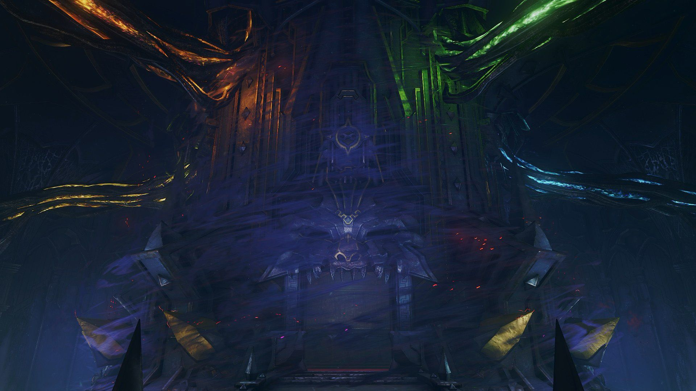
Ganon's Castle. The last fight is inside!
Goal: Break the 6 magic walls, beat Ganondorf, and save Hyrule!
BEFORE YOU GO IN
- First, you need all 6 Medallions. That means you beat all five grown-up temples plus the Light Medallion from the Temple of Time.
- Go back to the Temple of Time. After the story scene, Zelda gives you the Light Arrows! You need them to break all six magic walls and to fight Ganondorf. They use magic, so fill your magic meter first.
- Walk through the ruined Hyrule Castle Town toward the castle. A huge gap sits in front of the castle. The six Sages make a magic rainbow bridge for you! Cross it.
- Pack the right gear: Fairy Bow, Light Arrows, Fire Arrows, Din's Fire, Longshot, Lens of Truth, Megaton Hammer, Mirror Shield, Hover Boots, Iron Boots, Goron Tunic, Bombchus, and at least one empty bottle for Blue Fire. Bring fairies in bottles too!
INSIDE THE CASTLE
- Go in the front door. Walk past the two Beamos in the entry hall. Go to the big central hall.
- Six colored doors lead to six trials. Each trial ends with a dark orb. Shoot the orb with a Light Arrow to break that wall! A Sage appears and frees the wall.
- You can do most trials in any order. But start with the Shadow Trial (purple door) first! The Golden Gauntlets inside are needed for the Fire Trial and the Light Trial.
SHADOW TRIAL — AND THE GOLDEN GAUNTLETS
- Go through the purple Shadow door. You are in a big room with platforms floating over a pit. They do not connect!
- Look right. Shoot the unlit torch with a Fire Arrow. Temporary platforms pop up! Cross fast before they go away.
- A Like Like sits on the big middle platform. Beat it first so it cannot knock you into the pit.
- Put on your Hover Boots and your Lens of Truth. An invisible path floats ahead! Walk along it to a floor switch. Step on it. A big chest pops up!
- Use your Longshot to reach the chest. Open it. You get the Golden Gauntlets! They let you lift the heaviest things in the game.
- Use your new Gauntlets to lift the huge black-and-gold pillar near the chest. Push it over! It falls across the gap and makes a bridge. Cross it.
- Put on your Lens of Truth. Find the last invisible path. It leads to a rusty switch. Hit it with your Megaton Hammer! The exit opens. Follow the invisible platforms to the door.
- Go in the next room. Shoot the glowing dark orb with a Light Arrow. The Shadow wall breaks! Impa appears. One wall down, five to go!
DOUBLE DEFENSE — DO THIS NOW!
- Now that you have the Golden Gauntlets, leave the castle. Cross back over the bridge.
- Walk left along the cliff. A huge pillar blocks a cave door. Lift it out of the way with your Gauntlets! Go in. It is a Great Fairy fountain.
- Play Zelda's Lullaby. The Great Fairy of Courage asks for 500 rupees. Pay her. She gives you Double Defense! All hits hurt only half as much. You need a big wallet to hold 500 rupees — the Giant's Wallet from the House of Skulltula (30 tokens) works.
- Go back into Ganon's Castle.
FOREST TRIAL
- Go through the green Forest door. A Wolfos attacks in the first room. Beat it. Look around. Five torches sit around the room. Four are low. One is high up above the exit.
- Stand in the middle. Cast Din's Fire! It lights all four low torches at once. Then shoot the high torch fast with a Fire Arrow. All five must burn at the same time! The door opens.
- The next room has floating platforms, big fans, and a Beamos in the middle. Five Silver Rupees hide here. Grab all five to open the exit!
- Silver Rupee 1: Play the Song of Time near the mark by the door. A blue block pops up. Climb on it and grab the rupee.
- Silver Rupee 2: Put on your Hover Boots. Ride the fan wind up to the high round platform.
- Silver Rupee 3: Beat the Beamos. Cross to the small platform with a floor switch. Step on it. A Longshot target pops up under the rupee. Longshot to it and grab the rupee.
- Silver Rupee 4: Use your Hover Boots to cross to the ledge along the outer wall.
- Silver Rupee 5: It sits by the fan to the right of the exit. Wait for the wind to stop. Then run in and grab it. Use your Iron Boots when you need to stand still in the wind. Use your Hover Boots when you need to fly far.
- All five rupees are yours! The exit opens. Shoot the dark orb with a Light Arrow. The Forest wall breaks! Saria appears. Two walls down!
WATER TRIAL
- Go through the blue Water door. The first room has two Freezards (ice monsters that breathe cold air) and icicles falling from above. Beat the Freezards.
- Break the icicles around the Blue Fire in the middle of the room. Fill an empty bottle with Blue Fire! You need Blue Fire twice. Use it once to melt the red ice blocking the exit. Then fill your bottle AGAIN before you leave. Another red ice wall waits in the next room!
- Look for extra chests here too. One holds Bombchus. You need Bombchus for the Spirit Trial later!
- The next room has two big ice blocks that slide around, a hole in the floor, and a high exit behind red ice. Move fast — some guides say a timer runs in this room!
- Push the block farthest from the door to the right until it stops. Push it right again. It drops into the hole in the floor!
- Push the second block away from its wall. It slides across the first block. Push it left, then left again, until it sits under the high exit.
- Climb on top of the block. Jump to the ledge. Use your saved Blue Fire to melt the red ice. Hit the rusty switch with your Megaton Hammer! The door opens. Go through fast.
- If you mess up the blocks, leave the room and come back in. The puzzle resets. Shoot the dark orb with a Light Arrow. The Water wall breaks! Ruto appears. Three walls down!
FIRE TRIAL
- Go back to the central hall. A huge black-and-gold pillar blocks the Fire Trial door. Lift it with your Golden Gauntlets!
- Go through the red Fire door. Wear your Goron Tunic! The room is full of lava. A winding path crosses the middle. Some platforms sink when you stand on them.
- Put on your Hover Boots. They keep the middle path from sinking while you stand on it. Five Silver Rupees hide here!
- Silver Rupee 1: From the door, go right to a small platform. Grab the rupee. Get back to the middle path fast before the platform sinks!
- Silver Rupee 2: Go left. Grab the rupee near the spinning fire trap.
- Silver Rupee 3: Walk to the giant black-and-gold pillar. Lift it with your Golden Gauntlets. A rupee hides under it!
- Silver Rupee 4: Cross to the far platform with Torch Slugs. Beat them. Grab the rupee nearby.
- Silver Rupee 5: Push the big pillar into the lava. It makes a new platform! Walk across it to the last rupee.
- If you fall in the lava, the rupee puzzle resets. Start over. When you have all five, the far door opens. Longshot to the target by the exit to cross the last gap safely.
- Shoot the dark orb with a Light Arrow. The Fire wall breaks! Darunia appears. Four walls down!
LIGHT TRIAL
- Use your Golden Gauntlets to lift the huge pillar blocking the yellow Light door. Go in.
- The first room is full of treasure chests. Many are traps! Put on your Lens of Truth. Invisible bad guys hide here — Keese and a Skulltula. Beat them all to open the exit. Chests pop up. One holds a Red Rupee. Others hold small rupees or freeze you! Be careful which ones you open.
- Go in the next room. It has a Triforce mark on the wall. Put on your Lens of Truth. An invisible chest hides on the left! Open it for the Small Key — the only key in this castle.
- You can also play Zelda's Lullaby on the Triforce mark. A chest pops up with a Green Rupee. You do not need it. Use your Small Key on the next door.
- The next room has rolling boulders and a big Y-shaped block in the middle. Five Silver Rupees hide here. Move fast — some guides say you have one minute!
- Two rupees sit in alcoves along the walls. Two more sit around the big Y block. The last one is high up! Longshot to the target on the ceiling. Pull yourself up to grab it.
- Follow behind the rolling boulders as they move. Do not run in front of them! Grab all five rupees. Take the exit before time runs out.
- The next room looks empty. A Wallmaster may drop from the ceiling! Put on your Lens of Truth. Look straight ahead. A fake wall hides the real room. Walk right through it!
- Shoot the dark orb with a Light Arrow. The Light wall breaks! Rauru appears. Five walls down!
SPIRIT TRIAL
- Go through the orange Spirit door. The first room has a Beamos, statues you can push, and Blade Traps that slide around. Five Silver Rupees hide here!
- Beat the Beamos with a bomb first. Push the statues into the Blade Traps' paths. The traps change direction and give you more room. Watch out for the statue in the far-left corner. It is really an Armos! Beat it with your Megaton Hammer before you get close.
- Grab the rupees around the floor and the middle platforms. One floats high up. Longshot to the target on the ceiling to grab it. When you have all five, the next door opens.
- The next room has two Torch Slugs. Beat them. A chest pops up with a Business Scrub Seed. Grab it! It is new in the remake.
- Look through the metal bars. A crystal switch sits on the other side. You cannot hit it with an arrow. But there is a small gap above the bars! Stand close to the bars. Send a Bombchu up through the gap near the ceiling. It runs along and blows up next to the crystal switch. The next door opens!
- The next room has sun marks on the walls, but no sunlight comes in. Look up at the ceiling. Shoot the cobweb with a Fire Arrow! The web burns away. A beam of sunlight shines in.
- Stand in the light. Hold up your Mirror Shield. Aim the light at the sun mark to the right of the door you came in. Hold the beam there until the door opens. Do NOT shine it on the other sun marks! They wake up bad guys, including Wallmasters.
- Go in the last room. Shoot the dark orb with a Light Arrow. The Spirit wall breaks! Nabooru appears. All six walls are down!
THE BOSS KEY — CLIMBING THE TOWER
- Go back to the central hall. The magic wall around the middle tower is gone! Before you climb, look under the walkway to the tower. Put on your Lens of Truth. A hidden room hides there! Fairies and Business Scrubs sell healing supplies. Stock up if you need to.
- Climb the tower. First fight: two Dinolfos (lizard knights with swords). Hold up your shield. Fight one at a time. They jump around a lot. Do not stand still after you block!
- Beat both Dinolfos. Go upstairs. Second fight: two Stalfos. Wait for their sword swings. Jump to the side. Hit them while they rest. Keep them apart so they cannot trap you.
- Beat both Stalfos. Go up. Last fight: two Iron Knuckles! Fight one at a time. Their axe hits hurt a lot! Dodge with a backflip or a sideways jump. Hit them right after they swing. Then run back.
- When the first Iron Knuckle's armor breaks off, the second one wakes up. Finish the first one fast so you do not fight both at once!
- Beat both Iron Knuckles. A chest pops up. Open it. You get the Boss Key!
- Go up past a room with pots full of hearts, arrows, and magic. Leave some pots unbroken in case you need them during the Ganondorf fight. Use your Boss Key on the last door at the top.
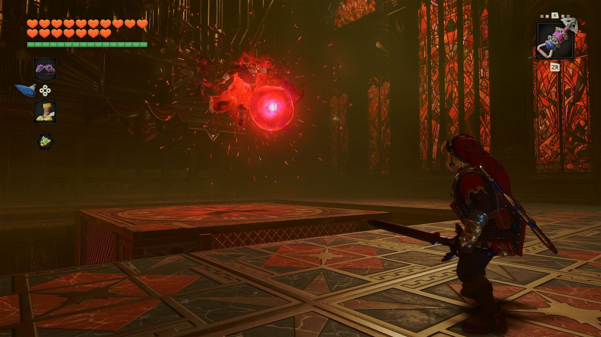
Ganondorf! Hit his magic balls back at him, like tennis.
He floats above the middle of the room and throws big magic balls at you! Hit a ball back at him with your sword, like tennis. He hits it back at you. Hit it back again! Keep the rally going. When his own ball hits him, he is stunned. Shoot him fast with a Light Arrow! He falls onto the middle platform. Run over and slash him with your sword. You cannot lock on to him while he floats. Aim your Bow by hand! As the fight goes on, he hits the balls back faster and faster. Watch the ball, not him. Later he charges a huge ball that splits into many balls. Shoot him with a Light Arrow while he charges to stop it! Or use a spin attack to hit them all back. He also smashes the floor! Big chunks fall away. Move to the parts that are left. If you fall down below, use your Longshot on the climbable walls to get back up. Pots below hold arrows and magic. Keep hitting his balls back, shooting him with Light Arrows, and slashing him when he falls. Do it again and again until he is done! Zelda is free!
THE ESCAPE!
- After Ganondorf falls, the castle starts to fall down! Zelda runs for the exit. Follow her! The old game gave you three minutes. The remake has no timer. But do not stop and look around.
- Zelda opens the locked gates for you. Wait for her to open each one. Partway down, she gets stuck behind a gate. Two Stalfos attack you! Beat both of them to free her.
- A bridge is broken. Use your Longshot on the target across the gap. You and Zelda cross safely.
- A hall is full of rubble. Smash it with your Megaton Hammer to make a path out.
- ReDeads block the way. Zelda uses her magic to hold them still. Run past them fast! Or beat them while they cannot move.
- Keep following Zelda until you are outside. The castle falls down behind you!
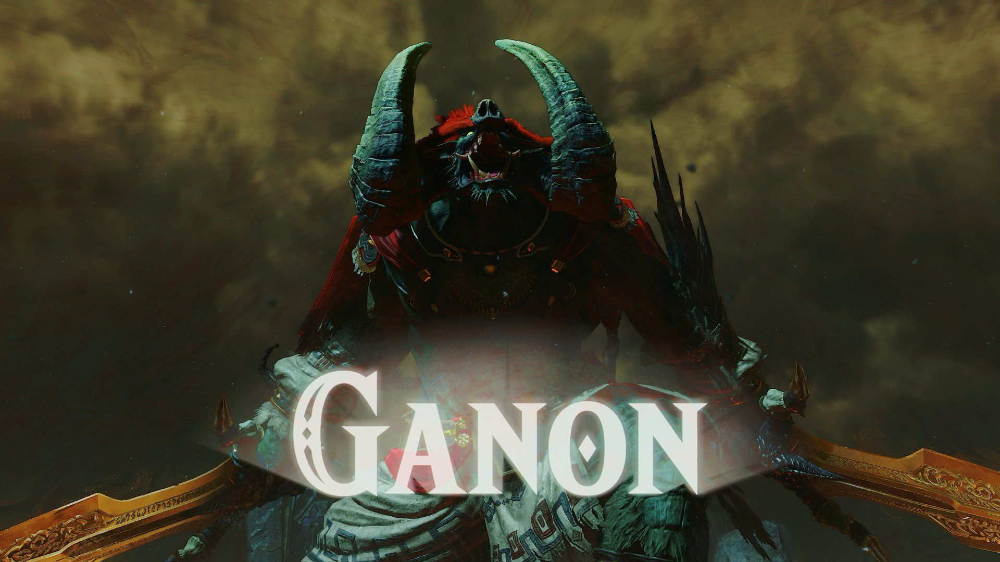
Ganon! Hit the glowing crystal on his tail.
Outside, Ganondorf turns into a giant pig beast named Ganon! He knocks your Master Sword away at the start. Fight him with your other weapons. The Biggoron's Sword is best if you have it. The Megaton Hammer works too. His weak spot is the glowing crystal on his tail! Stay away from his huge swords. Wait for him to slam a sword into the ground. It gets stuck! Run behind him fast. Hit his tail before he pulls the sword out. You can also stun his head with a Light Arrow, then run around to his tail. Keep hitting the tail crystal until it breaks! Then Zelda throws your Master Sword back to you. Now Ganon's arms glow with weak spots! He shoots lightning at the ground. Watch for glowing circles on the floor. Move out of the circles before the lightning hits! Hit his arms with Light Arrows when he shows them. Or slash them with your Master Sword after he sticks a sword in the ground. Break both arms. Then Ganon gets covered in dark energy. You cannot hurt him now! Just run around the edge and dodge his charges. Survive until Zelda helps you. She shows a glowing eye on his forehead! Shoot the eye with Light Arrows. He keeps attacking, so wait for a clear shot. After a few hits, he falls down. Run at him with your Master Sword. Hit the weak spot! When the button shows up, press it for the final blow. YOU WIN!
▶ Skip straight to the final boss fight (17:33:09)
• Skulltula: 1 in Ganon's Castle — but it is OUTSIDE, not inside! Look on the back of a ruined building near the old gate, outside the castle. Hit it with your Longshot. It is the very last one!
• Golden Gauntlets + Double Defense: Get the Great Fairy of Courage gift outside the castle before you go in.
• Small Key (1): In the invisible chest in the Light Trial. It is the only Small Key in the castle.
• Boss Key: Chest after the two Iron Knuckles at the top of the tower.
• Check the tables page (Hearts & Skulltulas) for any Heart Pieces or Skulltulas you still miss — grown-up ones #9, #13, #14, #17, #21, #27, #28, #30, #31, #34, #35, #36 are the ones most people forget!
❤️ ALL 36 HEART PIECES
4 Heart Pieces = 1 whole new Heart Container. Find all 36 and you get 9 extra hearts! With the 8 boss Heart Containers, that is 20 hearts in all — the max!
How to read this list: 👦 = you pick it up as Young Link (kid). 🧑 = you pick it up as Adult Link (grown-up). Some kid pieces need a grown-up step first (like reading a Fairy's Thought) — the steps tell you which! Some need magic beans: plant a bean in soft dirt as a kid, then ride the big plant as a grown-up!
📋 Want to sort and filter them? See the full Heart Pieces table — every piece, with checkboxes!
- 1. Hyrule Field — Scrub Grotto 👦 First, as a grown-up, read the Fairy's Thought by a tree in Hyrule Field to learn a secret word. Then as a kid, drop into the round hole by the moat near the castle town, say the word, and pay 100 rupees.
- 2. Hyrule Field — Canyon Chest 👦 First, as a grown-up, read the Fairy's Thought by the chest in the red-rock canyon (west Hyrule Field). Then open the chest as a kid.
- 3. Lon Lon Ranch — Tower Crates 👦 In the old stone building in the south-west corner, push the crates and crawl through to the round stone room.
- 4. Castle Town — Lost Dog 👦 At night, find the small white dog in the back alley and lead him to the lady calling his name.
- 5. Castle Town — Bombchu Bowling 👦 10 rupees a game. Win 3 times in a row! 1st win = Bombchus, 2nd win = Biggest Bomb Bag, 3rd win = Heart Piece.
- 6. Castle Town — Treasure Box Shop 👦 At night. First get the Lens of Truth as a grown-up, then come back as a kid. Pay 10 rupees, use the Lens to find the key chest in each of 5 rooms. The prize room chest has the piece.
- 7. Kakariko — Rooftop Cucco 👦 Carry a Cucco up the stairs past the well, climb the ladder, grab a second Cucco and glide onto the purple roofs. The red-haired man by the far wall gives you the piece.
- 8. Kakariko — Owl Ride Rooftop 👦 Talk to the big owl at the top of Death Mountain again and take his ride. He drops you on the blue roofs — cross to the red-tiled roof by the cow barn.
- 9. Kakariko — Windmill 🧑 Go through Dampé's tunnel from the graveyard to the windmill's top floor. The piece is on the walkway around the big shaft.
- 10. Kakariko — House of Skulltula 👦🧑 Free all 50 of the cursed man's sons (50 Gold Skulltula tokens). He thanks you with a Heart Piece.
- 11. Graveyard — Dampé's Digging 👦 At night, pay Dampé 20 rupees. The piece is in his 4th dirt pile — grab it before the light goes out!
- 12. Graveyard — Tombstone Chest 👦🧑 Pull back the bottom grave stone in the right-most row, drop in the hole, and open the chest at the end.
- 13. Graveyard — Magic Bean Ride 🧑 Plant a Magic Bean in the soft dirt by the graveyard wall as a kid. As a grown-up, ride the big plant over the wall to the piece on a block.
- 14. Graveyard — Dampé's Race 🧑 With the Hookshot, drop into Dampé's grave and race him in 1 minute. Follow his lantern! The chest at the end has the piece.
- 15. Lost Woods — Skull Kid Game 👦 Stand on the short stump in the Skull Kid's clearing and copy the tunes he plays. Win the 3rd (longest) round!
- 16. Lost Woods — Saria's Song 👦 After you learn Saria's Song, play it for the second Skull Kid on a stump deeper in the woods. He calls you a friend and gives you the piece.
- 17. Death Mountain Trail — Magic Bean 🧑 Plant a Magic Bean in the soft dirt at the top of the trail as a kid. As a grown-up, ride the plants up past the rope bridge to a nook in the rock wall.
- 18. Goron City — Spinning Pot 👦 Throw a bomb (or a lit Deku Stick) into the big spinning pot on the top floor to stop it. The piece pops out!
- 19. Death Mountain Crater — Hidden Nook 👦 Climb down the net hanging down the crater wall. The hidden nook at the bottom has the piece.
- 20. Death Mountain Crater — Business Scrub 👦 Bring 100 rupees. Knock the Business Scrub out of its plant in the south crater and buy the piece for 100 rupees.
- 21. Death Mountain Crater — Magic Bean 🧑 Plant a Magic Bean on the crater floor as a kid (warp there with the Bolero of Fire). As a grown-up, ride the plants to the small lava island with the piece.
- 22. Zora River — Cucco Islets 👦 Carry a Cucco and glide from islet to islet across the river. The chain ends at the piece.
- 23. Zora River — Cucco Ledge 👦 Carry a Cucco along the cliff path and across the stone bridge, then along the narrow shelf past the stream.
- 24. Zora River — Frogs, Song of Storms 👦 First learn the Song of Storms as a grown-up. Then as a kid, play it for the five frogs on stumps by the waterfall pool. They drop the piece!
- 25. Zora River — Frog Bug Game 👦 After the frog piece, play the Song of Time when the frogs ask for one more song, then play notes while they catch bugs until they are full.
- 26. Zora's Domain — Torch Chest 👦 Light a Deku Stick on a burning torch, then light every unlit torch in the dark hall. A chest pops up at the end!
- 27. Zora's Fountain — Iceberg 🧑 Hop across the ice blocks to the far ledge.
- 28. Zora's Fountain — Underwater Cave 🧑 Dive from the open water near the stone pillar into the dark cave under the ice. The piece is at the end.
- 29. Lake Hylia — Fishing Pond 👦 Pay 10 rupees for the rod and catch a big fish (about 56 cm). The fishing man gives you the piece. (Do not use the sinking lure — those fish do not count!)
- 30. Lake Hylia — Lab Diving 🧑 With the Golden Scale, dive to the grate at the bottom of the lab's deep tank. The scientist gives you the piece when you come up.
- 31. Lake Hylia — Tower 🧑 Plant a Magic Bean by the Lakeside Lab as a kid. As a grown-up, ride the plant across the dry lake bed to the stone tower and climb to the top.
- 32. Gerudo Valley — Cucco Ledge Chest 👦 Carry a Cucco and jump across the ravine to the chest in the south-west. (Grown-ups can jump from the north cliff and Hookshot across.)
- 33. Gerudo Valley — Waterfall Cliff 👦 Drop into the water on the north side, swim to shore, and follow the path behind the waterfall to the end.
- 34. Gerudo's Fortress — Scarecrow Chest 🧑 Play your Scarecrow's Song to call Pierre on the fortress roof, Hookshot to him, and open the rooftop chest.
- 35. Gerudo's Fortress — Horseback Archery 🧑 With Epona and the Fairy Bow, score 1,000+ points at Horseback Archery (30 rupees a try).
- 36. Desert Colossus — Magic Bean 🧑 Plant a Magic Bean at the Colossus as a kid (warp there with the Requiem of Spirit). As a grown-up, ride the plant up and shoot the piece off the arch in front of the Spirit Temple with your Bow.
🕷️ ALL 100 GOLD SKULLTULAS
Gold Skulltulas are little gold spiders. Kill one and grab its token. Take tokens to the House of Skulltula in Kakariko Village to free the cursed family and win prizes!
📋 Want to sort and filter them? See the full Gold Skulltulas table — all 100, with checkboxes!
PRIZES AT THE HOUSE OF SKULLTULA
- 10 tokens: Adult's Wallet — holds 500 rupees!
- 20 tokens: Echo Gem — it glows and makes sounds near spiders you have not found yet. It gets stronger as you get close!
- 30 tokens: Giant's Wallet — holds 1,000 rupees!
- 40 tokens: 20 Bombchus
- 50 tokens: A Piece of Heart (counts in the 36!)
- 100 tokens: A Gold Rupee worth 200 rupees — and you can come back for more, every visit!
HOW MANY IN EACH PLACE
Use this table with your in-game map. The map shows how many you found in each place. Hunt the places with missing ones first!
- Great Deku Tree: 4 (kid)
- Kokiri Forest: 3 (2 kid, 1 grown-up)
- Lost Woods: 3 (2 kid, 1 grown-up)
- Sacred Forest Meadow: 1 (grown-up)
- Hyrule Field: 3 (2 kid, 1 grown-up)
- Lon Lon Ranch: 3 (kid)
- Hyrule Castle Town: 1 (kid)
- Hyrule Castle: 2 (kid)
- Ganon's Castle: 1 (grown-up)
- Kakariko Village: 6 (5 kid, 1 grown-up)
- Graveyard: 2 (kid)
- Death Mountain Trail: 4 (2 kid, 2 grown-up)
- Goron City: 2 (1 kid, 1 grown-up)
- Death Mountain Crater: 2 (kid)
- Zora River: 4 (2 kid, 2 grown-up)
- Zora's Domain: 1 (grown-up)
- Zora's Fountain: 3 (2 kid, 1 grown-up)
- Lake Hylia: 5 (3 kid, 2 grown-up)
- Gerudo Valley: 4 (2 kid, 2 grown-up)
- Gerudo's Fortress: 2 (grown-up)
- Haunted Wasteland: 1 (grown-up)
- Desert Colossus: 3 (1 kid, 2 grown-up)
- Dodongo's Cavern: 5 (4 kid, 1 grown-up)
- Jabu-Jabu's Belly: 4 (kid)
- Forest Temple: 5 (grown-up)
- Fire Temple: 5 (grown-up)
- Ice Cavern: 3 (grown-up)
- Water Temple: 5 (grown-up)
- Bottom of the Well: 3 (kid)
- Shadow Temple: 5 (grown-up)
- Spirit Temple: 5 (3 kid, 2 grown-up)
Total: 100! (52 as a kid, 48 as a grown-up. 56 outside + 44 in dungeons.)
🧴 BOTTLES & UPGRADES
ALL 5 BOTTLES (the remake has 5 — the old game had 4!)
Bottles hold potions, fairies, bugs, fish, and milk. Fairies in bottles save your life if you fall in a fight!
- 1. Potion Shop Bottle 👦 NEW in the remake! The first time you walk into Hyrule Castle Town, the Potion Shop is in a panic — a bug got out! Go in and the shop man gives you a bottle to catch the bug. You keep the bottle.
- 2. Cucco Lady's Bottle 👦 In Kakariko Village, find Anju (the Cucco Lady) by the graveyard. Catch her 7 runaway Cuccos and put them back in the pen. She gives you an Empty Bottle!
- 3. Super Cucco Bottle 👦 First wake Talon: get the Weird Egg from Malon at Lon Lon Ranch. Wait for it to hatch into the Wake-Up Cucco, then hold it next to sleeping Talon by the crates at Hyrule Castle. He goes home. Then go to Lon Lon Ranch, pay Talon 10 rupees, and find all 3 Super Cuccos in 30 seconds. Trick: throw all the normal Cuccos behind Talon's desk first — then only the Super Cuccos are left out in the open! You win a bottle of Lon Lon Milk. Drink it (2 sips) to keep the empty bottle.
- 4. Ruto's Letter Bottle 👦 You need this one to finish the story! Win the Diving Game in Zora's Domain, swim through the tunnel to Lake Hylia, and dive to the lake floor to find the bottle with Ruto's Letter. Show it to King Zora. You keep the empty bottle.
- 5. Poe Collector's Bottle 🧑 As a grown-up with Epona and the Bow, ride around Hyrule Field at night and shoot the 10 Big Poes (2 arrows each). Catch their souls in a bottle. Sell them to the Poe Collector in the Ghost Shop in the ruined castle town. In the remake, you get the bottle after 5 Poes (500 points). All 10 Poes (1,000 points) earns a Gold Rupee instead!
✨ MAGIC SPELLS — THE 3 GODDESS SPELLS
Great Fairies give you magic spells. Each one lives in a Great Fairy Fountain. To wake a fairy, stand on the Triforce mark on the floor and play Zelda's Lullaby. Then pay her what she asks. In the remake, fairies are NOT free! Bring rupees.
- 🔥 Din's Fire — 25 rupees 👦🧑 Go to the top of Death Mountain Trail, past Goron City. The owl waits at the top. Bomb the cracked wall to the left of the owl. Go inside. Play Zelda's Lullaby on the Triforce mark. Pay 25 rupees. The fairy gives you Din's Fire AND your Magic Meter! Din's Fire makes a big ring of fire burst out all around you. It burns bad guys close to you. It lights torches you can not reach. You NEED it to light the torches that open the Shadow Temple. Get this one first — right after Dodongo's Cavern!
- 💨 Farore's Wind — 100 rupees 👦🧑 Go to Zora's Fountain (past Zora's Domain, where Lord Jabu-Jabu used to be). Go to the south side. Bomb the cracked wall by the big cave opening. Go inside. Play Zelda's Lullaby on the Triforce mark. Pay 100 rupees. The fairy gives you Farore's Wind! This spell drops a magic mark where you stand in a dungeon. Cast it again later and — ZOOM — you jump right back to that mark. Great when you need to leave a dungeon and come back!
- 💎 Nayru's Love — 300 rupees 🧑 Go to the Desert Colossus (past the Haunted Wasteland, by the Spirit Temple). Look for the cracked wall on the right side of the desert, between two palm trees. Bomb it open. Go inside. Play Zelda's Lullaby on the Triforce mark. Pay 300 rupees. The fairy gives you Nayru's Love! This spell wraps you in a blue crystal shield. No bad guy can hurt you while it lasts. Great for big boss fights!
UPGRADES — MAKE LINK STRONGER
- Wallets: You start holding 200 rupees. Adult's Wallet (500) = 10 Skulltula tokens. Giant's Wallet (1,000) = 30 Skulltula tokens.
- Quivers (arrows): 30 come with the Bow. Big Quiver (40) = win the Kakariko Shooting Gallery as a grown-up. Biggest Quiver (50) = score 1,500 at Horseback Archery in Gerudo's Fortress.
- Bomb Bags: 20 come from Dodongo's Cavern. Bigger Bomb Bag (30) = stop the rolling Goron in Goron City with a bomb (kid). Biggest Bomb Bag (40) = 2nd win at Bombchu Bowling.
- Magic Meter + Din's Fire: Great Fairy on Death Mountain peak — bomb the wall by the owl, then play Zelda's Lullaby. Costs 25 rupees.
- Stronger Spin Attack: Great Fairy by Hyrule Castle — climb the vines past the castle gate, bomb the rock to the right, crawl through, then play Zelda's Lullaby. Costs 50 rupees.
- Farore's Wind: Great Fairy at Zora's Fountain — bomb the cracked wall behind Lord Jabu-Jabu, then play Zelda's Lullaby. Costs 100 rupees.
- Double Magic: Great Fairy of Wisdom, Death Mountain Crater (grown-up) — smash the rocks at the door with the Megaton Hammer, then play Zelda's Lullaby. Costs 200 rupees.
- Nayru's Love: Great Fairy at the Desert Colossus — bomb the cracked wall between the palm trees, then play Zelda's Lullaby. Costs 300 rupees.
- Double Defense: Great Fairy of Courage, outside Ganon's Castle (grown-up) — move the big rock with the Golden Gauntlets. All hits hurt half as much! Costs 500 rupees.
- Silver Scale: Win the Diving Game in Zora's Domain (kid). Dive to 6 meters.
- Golden Scale: Fishing Pond at Lake Hylia (grown-up). Catch a huge fish (about 14 pounds!) and show it to the pond man. Dive to 9 meters.
- Goron's Bracelet: Darunia gives it to you after you cheer him up with Saria's Song. Lets you pick up Bomb Flowers.
- Silver Gauntlets: Spirit Temple, kid side. Push huge blocks!
- Golden Gauntlets: Ganon's Castle. Lift the giant rocks!
🗡️ BIGGORON'S SWORD QUEST
The Biggoron's Sword is the strongest sword in the game — twice as strong as the Master Sword, and it never breaks! To get it, you must trade things with lots of people. It is a long trip, so use your warp songs!
Do this as a grown-up, after you free King Zora from the Red Ice. And get Epona first — some steps are much easier with your horse.
- Get the Pocket Egg from Anju (Cucco Lady) in Kakariko Village.
- Wait one night (play the Sun's Song). The egg hatches into the Pocket Cucco.
- Wake Talon with the Cucco — he is asleep in a house in Kakariko. Anju gives you Cojiro, a blue cucco.
- Show Cojiro to Grog in the Lost Woods. He gives you the Odd Mushroom. Run it to Granny at the Kakariko Potion Shop in under 4 minutes! (Warp songs do not work — run!)
- Granny makes the Odd Potion from the mushroom.
- Give the Odd Potion to Fado, the Kokiri girl in the Lost Woods. She gives you the Poacher's Saw.
- Give the Poacher's Saw to Mutoh, the carpenter boss in Gerudo Valley. He gives you the Broken Goron's Sword.
- Show the Broken Sword to Biggoron at the top of Death Mountain. He gives you a Prescription.
- Give the Prescription to King Zora in Zora's Domain. He gives you the Eyeball Frog.
- Give the Eyeball Frog to the Lake Scientist at the Lakeside Lab. He makes the World's Finest Eye Drops.
- Give the Eye Drops to Biggoron. He gives you a Claim Check.
- Wait 3 game days (play the Sun's Song to make time pass). Show Biggoron the Claim Check. He gives you the BIGGORON'S SWORD!
🎭 HAPPY MASK SHOP
Masks are for fun — and for rupees! Borrow a mask from the Happy Mask Shop in Hyrule Castle Town, sell it to the right person, and bring the money back. Do them in order!
- Keaton Mask: Sell it to the guard at the Death Mountain trail gate.
- Skull Mask: Sell it to the Skull Kid in the Lost Woods (play Saria's Song for him first).
- Spooky Mask: Sell it to the little boy in the Kakariko Graveyard at night.
- Bunny Hood: Sell it to the running man in Hyrule Field at night (he runs around the field).
- Mask of Truth: This one is yours to keep! Wear it to talk to Gossip Stones (the gray stones that say secrets).
- Goron Mask: Sell it to the sleepy Goron in Goron City.
- Zora Mask: Sell it to King Zora.
- Gerudo Mask: Sell it to the Gerudo guard at Gerudo Valley.
✅ 100% CHECKLIST
Check off each big job. When every box is checked, you did 100%!
- Beat all 9 dungeons (Deku Tree, Dodongo's Cavern, Jabu-Jabu, Forest, Fire, Water, Shadow, Spirit, Ganon's Castle)
- Got all 3 Spiritual Stones and all 6 Medallions
- Got all 8 boss Heart Containers (20 hearts total)
- Found all 36 Heart Pieces
- Found all 100 Gold Skulltula tokens
- Learned all 13 songs
- Got all 5 bottles
- Got Epona (your horse!)
- Got the Biggoron's Sword
- Got the Giant's Wallet (1,000 rupees)
- Got the Biggest Quiver (50 arrows)
- Got the Biggest Bomb Bag (40 bombs)
- Got Double Magic and Double Defense
- Got the Golden Scale
- Beat Ganon and watched the ending
YOU DID IT! You are a true Hero of Time. Now go play again and find the things you missed — or start a new game and try to beat it faster!
↑ Back to the top